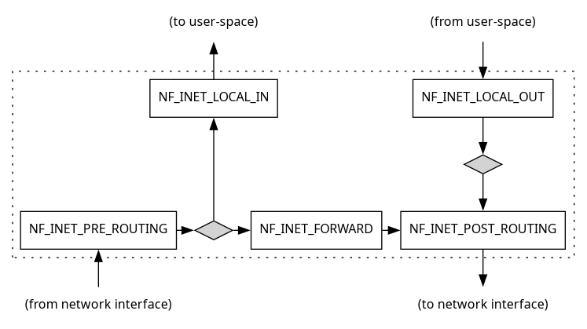

Eudyptula Challenge
Table of Contents
- Introduction
- 1. Task 01
- 2. Task 02
- 3. Task 03
- 4. Task 04
- 5. Task 05
- 6. Task 06
- 7. Task 07
- 8. Task 08
- 9. Task 09
- 10. Task 10
- 11. Task 11
- 12. Task 12
- 13. Task 13
- 14. Task 14
- 15. Task 15
- 16. Task 16
- 17. Task 17
- 18. Task 18
- 19. Task 19
- 20. Task 20
- Appendices
Introduction
Why did I decide to do the eudyptula challenge? And why bother writing about it for that matter?
- I was interested in learning more about the linux kernel on all levels. Even if I never wrote a driver or port the kernel to a new architecture, I have a belief that one can’t wield a tool effectively if they haven’t fully grasped the problems it exists to solve.
- It required engaging in and developing knowledge in adjacent topics (and even some non-adjacent ones).1
- The process of writing notes down is, I think, a good way of ensuring that one has a gears-level understanding of a topic. If I find myself mentally straining to enunciate some complex idea in plain english, this is good news in a way — it suggests that there’s a blind spot or point of friction in my understanding, and more research is required. Perhaps you could call this a kind of preemptive rubber-duck debugging.
- I wanted to challenge myself.
- It may be of help to others that relate to the points above.
- It’s a vanity project.
- I try to document everything I study, because my brain isn’t so great at remembering concrete facts or juggling many things in working memory. So writing this up probably didn’t involve much extra work all things considered.
- Learning about the kernel is fun! 🤡
The eudyptula challenge had not been accepting new applicants for a few years, and seemed to be spoken of in the paste tense (the original website has been dormant since 2017). That being said, if you’re going through the tasks yourself, I would suggest only referring to these notes when you’re stuck, or as a sanity check once you’ve completed a task. At some point after publishing this, I’ll include my solutions on github.
Occasionally in the course of completing the tasks I will go over information that’s already available from cited texts or websites, or branch off into tangentially-related topics — feel free to skip those subsections. (Conversely, there are probably many adjacent topics or snippets of info that I omitted which might have been useful to the odd person.)
If you have any questions or feedback, please get in touch!
Setting up a virtual machine for development
For these tasks, as an alternative to developing natively, I set up a 64-bit Debian image within which I could safely play around. The steps I took to set this up were as follows:
- download latest Debian release
- install qemu
- create a script to launch QEMU with some basic options (see github)
create a base image
qemu-img create -f qcow2 img1.qcow2 8G
- install Debian on the base image
install development tools (see the official docs)
apt install gcc make git bc libssl-dev libncurses5-dev linux-headers-$(uname -r) samba
freeze the base image and create an image overlay to do the tasks on
qemu-img create -o backing_file=img1.qcow2,backing_fmt=qcow2 -f qcow2 img1_overlay.qcow2
configure automounting of the samba share2, 3
mkdir -p /mnt/qemu echo "//10.0.2.4/qemu /mnt/qemu cifs x-systemd.automount,username=guest,file_mode=0777,dir_mode=0777 0 0" >> /etc/fstab
Credits
Much of this information I was able to source from various blog posts by kernel developers and community forums. I provide links to these where relevant. A special shout-out goes to Jonathan Corbet’s endlessly helpful exegetical writings at LWN.net and his efforts to improve the kernel documentation, as well as Greg Kroah-Hartman’s (GKH) indefatigable patience with lesser experienced folk on the mailing lists.
Some texts that I found to be helpful were:
- Linux Kernel Development, Robert Love, 3rd Ed. (LKD)
- Linux Device Drivers, Jonathan Corbet, 3rd Ed. (LDD)
- Linux Kernel in a Nutshell, Greg Kroah-Hartman (LKN)
- Mastering Embedded Linux Programming, Chris Simmonds (MELP)
The first three texts are somewhat out-of-date, dating as far back as 2.6. However, 2.6 was a fairly significant milestone for the kernel, when it really began to take shape. It still provides a base of contextual knowledge necessary to make sense of revisions that have come since. Nowadays, the definitive resource for kernel/module/driver development is the in-tree kernel documentation, which has improved considerably in recent years. Ideally, this is supposed to replace existing, comparatively static texts that can’t keep up with the rapid pace of kernel development. Some tangential resources of note here include an enumeration of available dev-tools, and a description of the kernel development process.4
Corrections
This document mainly follows my thought process as I worked through the tasks. Furthermore, my solutions were not subject to code review from an experienced kernel developer. As such, it should not be considered an iron-clad reference. However, it’s important that I not perpetuate untruths, which an inexperienced person is apt to do. As such, I warmly welcome any corrections, qualifying remarks, or requests for attestation. If so, please get in touch via email. Bear in mind, however, that since most of this was a process of learning on-the-go, information introduced in later tasks will sometimes provide more detail or better methods of doing earlier ones. (For that reason, it might even be a good idea to read this backwards, and jump to earlier tasks when procedural details are found wanting but for the sake of brevity were omitted.)
1 Task 01
Write a Linux kernel module, and stand-alone Makefile, that when loaded prints to the kernel debug log level, “Hello World!” Be sure to make the module be able to be unloaded as well. The Makefile should build the kernel module against the source for the currently running kernel, or, use an environment variable to specify what kernel tree to build it against.
1.1 Linux headers
First, we need to obtain the linux headers we are going to build against. (We
could just build against our kernel tree, but this requires that the kernel
built therein is the one we’ll be running when we test the module). For this,
we’ll need the headers specifically for building kernel modules out-of-tree.
For example, installing the linux-headers-$(uname -r) package on Debian-based
distros will install the headers for the running kernel in
/usr/src/linux-headers-$(uname -r). Alternatively, we may be better off
installing something like the linux-headers-generic package (or equivalent for
your distro), which will keep these headers up-to-date with the generic kernel
that is installed.
Note that those are not the same thing as the sanitised, API-stable kernel
headers (or “UAPI” headers) specifically meant for user-space and libc. The
unsanitised kernel headers, in their raw state, are for internal use only, as
they contain symbols extraneous to user-space. The sanitised headers are
normally installed in /usr/include/ by your package manager (alternatively, by
running make INSTALL_HDR_PATH="/usr/local" headers_install), and contains the following subdirectories:
/usr/include/asm/*.h- Architecture-specific assembly headers
/usr/include/asm-generic/*.h- Architecture-independent assembly headers which contain portable C
/usr/include/drm/*.h- Headers for interacting with the Direct Rendering Manager (DRM) subsystem (video output)
/usr/include/linux/*.h- Core Linux API headers
/usr/include/misc/*.h- Miscellaneous headers
/usr/include/mtd/*.h- Headers for interacting with Memory Technology Devices (MTD)
/usr/include/rdma/*.h- Headers for Remote Direct Memory Access (RDMA)
/usr/include/scsi/*.h- Headers for interacting with SCSI devices
/usr/include/sound/*.h- Sound subsystem (ALSA) headers
/usr/include/video/*.h- Headers for some frame buffer devices
/usr/include/xen/*.h- Headers for the Xen hypervisor
These headers are backwards compatible; a C library that uses older kernel headers will work on a newer kernel (though anything built against the older headers obviously won’t have access to newer kernel features).
The various makefiles scattered about the kernel source tree are tasked with, inter alia, specifying how to process and export headers that need to be exported to user-space. This pre-processing step includes:
- removing kernel-specific annotations;
- removing inclusion of
compiler.h; and - removing sections that are kernel internal, i.e., guarded by
#ifdef __KERNEL__.
UAPI headers will be covered again in task 15.
1.2 Kbuild summarised
The Kbuild system consists of:
- the (user-customisable) config file;
- the top-level makefile;
- the arch-specific makefile in
arch/$(ARCH)/; - common rules for all Kbuild makefiles;
scripts/Makefile.*; and - individual makefiles in each source-code-containing subdirectory.
Each Kbuild makefile specifies what objects are to be built, and when to do
so, by appending the names of build targets to the obj-y or obj-m variables
defined at the top-level. A module named foo, for example, might add its
object files like so:
obj-$(CONFIG_FOO) += foo.o
In this case, CONFIG_FOO is expected to be defined in the configuration as
either “y”, “m”, or neither. Adding objects to the obj-y list means they will
be built into the kernel; to this end, a built-in.a file will be built as an
intermediate step, and linked in to the final kernel image in a later pass.
The obj-m list is used for dynamically loadable modules. There also exists a
lib-y list for creating static libraries.
If a module consists of multiple source files, one must inform Kbuild about
them by appending them to a <MODULE_NAME>-y variable:
obj-$(CONFIG_FOO) += foo.o foo-y := alpha.o beta.o gamma.o
A makefile is only ever responsible for building files in its own directory — local subdirectories need their own makefiles, and so on. To tell Kbuild to descend down into a subdirectory such that it will be built, we simply add the directory as though it were an object file:
obj-$(CONFIG_EXT2_FS) += ext2/
If the config variable is set to “y”, then Kbuild will look for and link any
built-ins it finds into vmlinux.
Kbuild is dependency-aware. Specifically, it knows when changes are made to the:
- target prerequisites (both *.c and *.h);
CONFIG_*options used in prerequisite files; and- command-line arguments used to compile the target.
If any of these have changed since the last build, all files downstream from them in the build process will be recompiled.
1.3 Creating the makefile for our out-of-tree module
ifeq ($(KERNELRELEASE),) # In order to compile our module, we'll need to be running our makefile within # Kbuild, either from within a kernel source tree, or a module build directory # provided by the relevant linux-headers package. If we have reached this # code path (KERNELRELEASE is undefined), then it means we're *not* inside # Kbuild. Thus here we define some targets to invoke make from within a # Kbuild environment by proxy, and pointing it back to this directory. # Defining M does exactly this, telling Kbuild that we wish to build external # modules in the directory specified. By default, we'll build against the # same version as that of the running kernel. # Define the directory where the headers for the running kernel are located. # The '?=' operator assigns the variable only if it was undefined, allowing us # to define this variable the command line instead. KERNELDIR ?= /lib/modules/$(shell uname -r)/build # Define the current working directory. The ':=' operator means don't defer # substitution; evaluate it now. Notice also how unlike bash, makefiles # require the "shell" command in order to do shell command substitution. PWD := $(shell pwd) modules: $(MAKE) -C $(KERNELDIR) M=$(PWD) modules modules_install: $(MAKE) -C $(KERNELDIR) M=$(PWD) modules_install clean: rm -rf *.o *~ core .depend .*.cmd *.ko *.mod.c .tmp_versions .PHONY: modules modules_install clean else # If we reach this code path, we're successfully called ourselves from Kbuild, # so all we need to do here is define the module objects we want built. obj-m := hello.o endif
1.4 Creating the first c file
#include <linux/init.h> #include <linux/module.h> MODULE_LICENSE("Dual BSD/GPL"); static int hello_init(void) { printk(KERN_ALERT "Hello world\n"); return 0; } static void hello_exit(void) { printk(KERN_ALERT "Goodbye world\n"); } module_init(hello_init); module_exit(hello_exit);
1.5 Compiling the module
Punch it!6
make modules
(Assuming everything went well,) what do the resulting build artifacts actually represent?
hello.o- The initial object file resulting from compilation of our source file.
hello.mod.{c,o}- Generated files containing lots of info about the module, such as versioning.
hello.ko- Our final module binary, combining both of the above.
Module.symvers- A list of exported symbols resulting from this build. The
syntax used therein is
<CRC> <symbol> <namespace> <module> <export_type>(the CRC is only relevant ifMODVERSIONSis enabled). In our case, this file is empty becausehello.cdoesn’t export anything. modules.order- A list of the order in which compilation and creation of
.kofiles took place. In our case, there’s only one entry because we only compiled one module. .hello.{o,ko,mod.o}.cmd- Commands that were executed to produce the respective files above.
.tmp_versions/hello.mod- A list of paths to files on disk that export symbols. (Deprecated??)
built-in.o- This file only applies to built-in modules, not loadable ones
like ours. Kbuild links this file together from module object files in
$(obj-y). It later forms thevmlinuxELF binary. (Task 02 will revisit this.)
1.6 Loading the module
There are a couple of ways to do this. Firstly:
/sbin/insmod hello.ko
We should see the “Hello world” message pop up in the terminal (provided that
our loglevel wasn’t changed; more about this here). To confirm the module was
loaded, we may inspect the output of lsmod.
Alternatively, we can use modprobe:
/sbin/modprobe hello
However, for this to work, we have to install the module first.7 By default, modprobe only recognises modules
installed to /lib/modules/$(uname -r)/, though it may be configured to search
other paths, or load/blacklist modules explicitly. Once installed, we can
refer to it by name (sans .ko suffix).
To install the module:
mkdir -p /lib/modules/$(uname -r)/mymodules ln -s /mnt/qemu/hello.ko /lib/modules/$(uname -r)/mymodules depmod
The depmod command regenerates the module dependencies (modules.dep) and map
files. We can run depmod -A to see if that’s actually necessary, i.e. whether
any modules are newer than the modules.dep file.
1.7 Unloading the module
Again, there are a couple of ways to do so:
/sbin/rmmod hello.ko # OR /sbin/modprobe -r hello
As before, but now we should see the “Goodbye world” message pop up in the
terminal. Likewise, the module should disappear from lsmod output.
2 Task 02
Now that you have written your first kernel module, it’s time to take off the training wheels and move on to building a custom kernel. No more distro kernels for you, for this task you must run your own kernel. And use git! Exciting isn’t it! No, oh, ok…
The tasks for this round is:
- Download Linus’s latest git tree from git.kernel.org (you have to figure out which one is his, it’s not that hard, just remember what his last name is and you should be fine.)
- Build it, install it, and boot it. You can use whatever kernel configuration options you wish to use, but you must enable
CONFIG_LOCALVERSION_AUTO.- Show proof of booting this kernel. Bonus points for you if you do it on a “real” machine, and not a virtual machine (virtual machines are acceptable, but come on, real kernel developers don’t mess around with virtual machines, they are too slow. Oh yeah, we aren’t real kernel developers just yet. Well, I’m not anyway, I’m just a script…) Again, proof of running this kernel is up to you, I’m sure you can do well.
Hint, you should look into the ’make localmodconfig’ option, and base your kernel configuration on a working distro kernel configuration. Don’t sit there and answer all 1625 different kernel configuration options by hand, even I, a foolish script, know better than to do that!
After doing this, don’t throw away that kernel and git tree and configuration file. You’ll be using it for later tasks, a working kernel configuration file is a precious thing, all kernel developers have one they have grown and tended to over the years. This is the start of a long journey with yours, don’t discard it like was a broken umbrella, it deserves better than that.
2.1 Fetching the latest tree
Linus’s main development tree, and many others, can be obtained from git.kernel.org. We’ll talk about these a bit more in task 07, but for now, let’s fetch the main development tree:
git clone https://git.kernel.org/pub/scm/linux/kernel/git/torvalds/linux.git/
2.2 Creating a configuration file
To build the kernel, we need a configuration file appropriate for the target it is to run on.
In large projects, the makefile will often include a help target. With regard
to Kbuild (the build system for the Linux kernel), running make help will list available make targets, as well as make parameters
we may specify.
Let’s start with a clean configuration:
make mrproper
Building up a config additively from scratch can take a lot of work, which is
why the task suggests basing our .config file on a working distro kernel
configuration. This will provide us with a “kitchen-sink” solution that we
can tweak later if need be.
The kernel configuration used by your distro may be found in a few places:
- a plain-text file in
/boot/next to the kernel image; xor8 - in
/proc/config.gz(may require unzipping; trygzip -cdvorzcat); xor - distributed with the kernel source package, which, if present, will be
installed in
/usr/src/linux/.
For these early tasks, I will be loading a kernel image and root filesystem
image directly into QEMU. We may copy the .config file from a location above
to the kernel tree on our host machine, and build it from there. This is, of
course, on the proviso that the host machine has the right toolchain for the
target architecture (the QEMU virtual machine). Additionally, it will be
preferable to link any modules that might be required directly into the kernel
image. Thus I would recommend running make mod2yesconfig on the config.
For further notes on paring down a configuration file, see the .
2.3 Editing the configuration
The menuconfig make target launches a curses-based config browser/editor for
browsing the existing .config (make sure libncurses5-dev is installed). The
task asks us to enable CONFIG_LOCALVERSION_AUTO, which appends version info
(the commit hash) to the version string. (It may or may not already be
enabled for you). As per the description:
This will try to automatically determine if the current tree is a release tree by looking for git tags that belong to the current top of tree revision.
Some other options that you may wish to enable for convenience:
CONFIG_DEBUG_INFO- This adds debug symbols to the kernel image. (Enabling
this implies
CONFIG_DEBUG_KERNELis also set.) CONFIG_KALLSYMS- This adds extra symbols to help with debugging crashes.
CONFIG_GDB_SCRIPTS- This creates symlinks in the build directory which
point to GDB helper scripts. (It is in fact possible to load
vmlinuxinto a GDB session on the host and play around; in such a case these helper scripts are imported automatically.)
2.4 Building the kernel
The --jobs flag of make let us specify the maximum number of simultaneous
commands compilation will be limited to (defaults to 1). The nproc command
will return the number of logical cores available on your system.
Recommendations on what number to give this flag in order to maximise
throughput tends to vary from nproc + 1 to nproc * 2.
Punch it!
make -j$(($(nproc) + 1)) # you do not (and ought not) run this as root!!!
Assuming we have all the necessary tools installed (again, refer to the official docs), after a protracted length of time we should see something like the following:
[...] Setup is 14044 bytes (padded to 14336 bytes). System is 8050 kB CRC 4403d3d1 Kernel: arch/x86/boot/bzImage is ready (#1)
Before booting this kernel, I want to go over how this build process works, and the kinds of files it emits.
2.4.1 The build process in a nutshell
(Disclaimer: This section is merely my attempt at a general/vague outline of Kbuild, which I proffer without a great deal of confidence in its accuracy. If need be, consult the horse’s mouth.)
Running make with no arguments will evaluate both the vmlinux and modules
targets — the former is what creates our final, ELF-formatted kernel image.
Many other targets are available: to generate tags, install sanitised kernel
headers, and other arch-specific targets. Run the help target for the more or
less complete list.
Kbuild is comprised of a makefile in the top-level directory, which
recursively invokes makefiles in each subdirectory that contains code; each of
these nested makefiles do the same in turn. (An exception to this is the
arch-specific makefile in arch/$(SRCARCH)/, which is included inline in the
top-level makefile, and contains arch-specific definitions and targets for
building and post-processing the kernel image.)
The stages of compilation are somewhat as follows.
2.4.1.1 Preparation
Before any targets are run, the top-level makefile will firstly define some
important variables necessary for keeping track of the build process and
configuring the kernel. Of these, variables that must be made visible to the
other makefiles in this process are “exported” with the export keyword. These
include:
VERSION,PATCHLEVEL,SUBLEVEL,EXTRAVERSION- These define the triplet of
numbers that make up the kernel version;
EXTRAVERSIONis typically used to denote additional patchsets that have been applied. They are used in a few places, most notably theKERNELRELEASEstring (see below). KERNELRELEASE- This is a concatenation of the above as a string. An example might be “2.4.0-pre4”. It is suitable for use in version strings or directory names.
ARCH- This describes the target architecture, e.g. “i386”, “arm”. Usually this will be the same as the host architecture, not so if we’re doing a cross-build.
INSTALL_PATH- This tells the arch-specific makefile where to install the
kernel image,
System.mapfiles, etc. INSTALL_MOD_PATH,MODLIB- These indicate where modules are to be installed.
INSTALL_MOD_STRIP- This is a setting to indicate whether and how modules are to be stripped once installed.
If the user defines the C variable to “1” or “2”, this will cause CHECK to be
invoked on some or all C files respectively. By default, CHECK is set to a
static analysis tool called sparse. While we’re on that topic, the user may
add their own flags, such as -Wextra, to EXTRA_CFLAGS if desired. (More on
static analysis in .)
With regard to the modules target, the user may also define the M variable to
specify the location of an out-of-tree kernel module to build (as was
demonstrated in ).
Definitions for various tools involved in the build process are pulled in from
scripts/Kbuild.include; this includes CC, AS etc. The purpose of the HOSTCC,
HOSTCFLAGS, et al., are for compiling some of these supplementary host
utilities.
LINUXINCLUDE and USERINCLUDE specify paths to directories containing the Linux
headers (i.e. for internal use) and the uapi headers (i.e. for external use).
KBUILD_CFLAGS defines a set of standard flags for the C compiler. These may
be changed in the nested makefiles.
(Up to this point, nothing has yet been printed to the terminal.)
2.4.1.2 Compilation
Once preparation is complete, it can start executing the vmlinux target. This
involves compiling and linking together the built-in.a and other object files
listed in vmlinux-deps as dependencies. There will be one built-in.a file per
source directory (sans those modules which are configured as external
modules).
Each built-in.a file depends on and is assembled from the individual object
files in its respective subdirectory tree. The makefile in this tree
indicates these dependencies by adding them to the obj-y list (the obj-m list
is for module-only dependencies).
Once all built-in.a files are built, they are statically linked together,
along with other core object files, into the vmlinux file (see
scripts/link-vmlinux.sh). A System.map file is also created. Both these
files are placed in the top-level directory.
While these files are useful for debugging purposes, we’re not quite done yet.
In particular, we need to strip vmlinux of all symbols and relocation
metadata, compress it, make it self-extracting, and make it bootable.
2.4.1.3 Building bzImage
The bzImage file is what vmlinux becomes after being compressed and wrapped to
make it bootable on x86 machines. This process requires additional tools that
themselves need building as an intermediate step. In our case, this process
will be laid out in the makefile that lives in arch/x86/boot/.
Broadly, bzImage consists of a few different segments:
- the boot sector, one-off code for getting the system into a usable state;
- setup code, routines to decompress and bring up the kernel; and
- a stripped and compressed copy of the
vmlinuximage.
The function decompress_kernel() is responsible for decompressing the
compressed kernel image at boot, as indicated by this familiar console
message:
Decompressing Linux... done Booting the kernel.
Other image formats include zImage (an older compression format for smaller
kernels) and uImage (used by U-Boot for embedded platforms). The file
ultimately copied into the boot partition is often named vmlinuz, or
vmlinuz-$(uname -r), regardless of format, to indicate that it is a bootable,
self-extracting kernel image.
2.4.2 Miscellaneous Kbuild features
Here are some helpful make variables I found:
V={1,2}- The former will perform a more verbose build; the latter will
additionally print reasons for the rebuild of targets.
V=0is the usual default. O=<path>- This specifies where to store the build’s output files, as an
alternative to just littering them throughout the kernel tree. It will also
include the
.configfile used for the build. This can be handy when you are trying out multiple configurations, and want their build artefacts to be kept apart — just specify a different output directory for each. C={1,2}- This will perform static analysis on source files, as mentioned
.
C=1will check only those files that are [re]compiled;C=2will check all files. W={1,2,3}- This will enable various levels of checks, from least to most
verbose. Usually,
W=1by itself is sufficient.
As for targets:
- The difference between
cleanandmrproperdepends on whether you want to keep the existing.config; the latter wipes it. - The
tagsandgtagstargets generate tag databases for aiding code navigation in a a text editor or IDE; likewise for thecscopetarget.
2.5 Installing and booting the kernel
Once built, the resulting bzImage can be copied over to /boot/ by running the
install target. In brief, this target will (usually) end up running a
distro-specific kernel install script that copies the image over to /boot/
with a sensible filename, regenerates the initramfs, and updates the
bootloader entries. (The install target is covered in more detail in .)
(N.B.: If we compiled any loadable modules, we’ll need to run the
modules_install first, before running install. This will copy the loadable
modules over to an aptly named directory in /lib/modules/. We must do this
first because certain modules from this directory have to be bundled into the
initramfs when it is generated, modules needed early in the boot process.)
However, since I’m just testing this kernel in a virtual machine, we may alternatively:
- run the
isoimageto generate a bootable CD-ROM, and boot that somehow; xor - invoke QEMU on the command-line, passing it the kernel directly.
For now, I will do the latter.
Normally, QEMU just boots a virtual disk image (specied with the -drive flag),
and the bootloader and kernel that reside therein take us the rest of the way.
The -kernel flag, on the other hand, can be used to load and boot a kernel
image residing on the host. When a kernel is booted, the root filesystem it
is to mount will be specified in the kernel boot parameters (specifically,
root=); these parameters are set/provided by the bootloader. QEMU has a
virtual bootloader for booting external kernel, but it cannot magically infer
what root= should be set to — we must provide the parameters ourselves with
the -append flag.
The simplest solution to this is to find out the name of the root partition as
assigned by udev, or its UUID, and then append that as a kernel argument —
something like -append "=root=/dev/sda1" or -append "=root=UUID=${rootfs_uuid}".
For example, inside my Debian virtual machine, these are the arguments it says
it was invoked with:
$ cat /proc/cmdline BOOT_IMAGE=/boot/vmlinuz-4.19.0-8-686-pae root=UUID=07318365-3a31-41ca-b219-e6de6df9a5bf ro quiet
(We don’t need to set BOOT_IMAGE=; the -kernel flag has done this for us.)
If we ran make mod2yesconfig as mentioned earlier,
then we should not need to provide an init ramdisk to the VM, so we shouldn’t
need to specify initrd=, but I imagine it would play out similarly. (Later on
I transition to , as
this setup was getting annoying.)
In any case, let’s fire up our virtual machine and confirm the change we made to our config:
$ uname -r 5.9.0-rc6-00338-ga1bffa48745a
Awesome! That’s the same hash as the git commit we built our kernel on, and
was appended to the version string because we enabled
CONFIG_LOCALVERSION_AUTO.9
3 Task 03
Now that you have your custom kernel up and running, it’s time to modify it!
The tasks for this round is:
- Take the kernel git tree from Task 02 and modify the Makefile to and modify the EXTRAVERSION field. Do this in a way that the running kernel (after modifying the Makefile, rebuilding, and rebooting) has the characters “-eudyptula” in the version string.
- Show proof of booting this kernel. Extra cookies for you by providing creative examples, especially if done in interpretive dance at your local pub.
- Send a patch that shows the Makefile modified. Do this in a manner that would be acceptable for merging in the kernel source tree. (Hint, read the file Documentation/SubmittingPatches and follow the steps there.)
3.1 Modifying the makefile
This is easy enough — just open up menuconfig and append “-eudyptula” to the
EXTRAVERSION field. After building and booting the kernel, we’ll see
something like the following:
$ uname -r 5.9.0-rc6-eudyptula-00338-ga1bffa48745a-dirty
Note how Kbuild has also appended “-dirty” to this string. This was done by
scripts/setlocalversion, invoked by the top-level makefile. This script adds
local version information from the version control system to the kernel
release string. In this case, it adds “-dirty” if the build contains some as
yet uncommitted changes.
3.2 Patch submission overview
The formal steps involved in submitting a patch to the mailing lists is well-documented here and here. Let’s go over them.
3.2.1 Generating a patch
One way to generate a patch by hand is to invoke diff -uprN on a pair of source directories. The meaning of the flags,
respectively:
- print in “unified diff” format (explained here);
- print which C function each change is in;
- compare subdirectories recursively; and
- treat absent files as being empty files.
However, it’s simpler to generate them with git diff,
which uses said flags by default, but can also compare files across any
combination of working tree, index, or revision/commit in a git repository.
(The syntax for selecting a revision, or specifying a range of revisions, is
described here, and nicely summarised here.)
If we’re submitting this patch upstream, we also need to provide some
information, including the commit message. The mailing list archives provide
endless examples of this. Thankfully, git format-patch (documented here) does most of the leg-work for us, but I will
go over a few of the more salient parts.
The subject line, which the first line of the commit message occupies, is prepended with some additional information to help identify it. This includes:
- the fact that it is a patch;
- optional tags, e.g. “v2” (version 2), “RFC” (request-for-comment);
- the patch number, if it is part of a patch set (e.g. “02/15”); ior10
- the subsystem(s) or module(s) of relevance to the change.
This format makes it easy to process and sort emails by subject line using
tools like grep. An example:
Subject: [PATCH v2 01/27] staging: rtl8723bs: remove initialisation of globals to 0
One might also see patches starting with [PATCH][next], [PATCH -next], or
[PATCH][4.x.y]. These (presumably) indicate which tree or revision the patch
ought to be applied to.
The body of the message, synonymous with the body of the commit message, is line-wrapped at 75 columns.
After a line-break comes a signature. This is a simple line at the end of the explanation for the patch certifying who wrote it and passed it on:
Signed-off-by: Random J Developer <random@developer.example.org>
Following this may be signatures from other contributors, or relevant persons who have reviewed the code and given it the all-clear; frequently one sees things like “Co-developed-by:” or “Cc:” (the latter indicates a person who was cc’d and is to be kept in the loop regarding the patch).
A line containing a triple-dash follows, which demarcates the end of the
commit message. After this line, we may add additional comments not suitable
for inclusion in the changelog. For example, the output of diffstat -p 1 -w 70 (or git diff --stat) is
often provided here — this gives a summary of the files that have changed
and the number of inserted and/or deleted lines, and changes that may have
occurred between “v1” and “v2” of the patch.
Finally, the actual patch is shown (in unified diff).
Here’s an example:
Subject: [PATCH v2 1/2] USB: at91: fix the number of endpoint parameter In sama5d3 SoC, there are 16 endpoints, which is different with earlier SoCs (only have 7 endpoints). The USBA_NR_ENDPOINTS micro is not suitable for sama5d3. So, get the endpoints number through the udc->num_ep, which get from platform data for non-dt kernel, or parse from dt node. Signed-off-by: Bo Shen <omitted@omitted.com> --- Changes in v2: - Make the commit message more clearer. drivers/usb/gadget/atmel_usba_udc.c | 2 +- 1 file changed, 1 insertion(+), 1 deletion(-) diff --git a/drivers/usb/gadget/atmel_usba_udc.c b/drivers/usb/gadget/atmel_usba_udc.c index 2cb52e0..7e67a81 100644 [...]
Thankfully, much of this can be automated by configuring and using git
format-patch. For example:
git format-patch -n -s --cover-letter --subject-prefix="PATCH v2"
-n- This generates numbered patches in the
[PATCH n/m]format. (If there is only a single patch, it with print1/1). -s- This prints the
Signed-off-by:line for us in the message so we don’t forget it. --cover-letter- This lets us write a cover letter file for describing the entire patch set (usually unnecessary for singular patches). This is a standalone message that acts as “patch 0”.
--subject-prefix=<foo>- This changes the default “PATCH” prefix that is
normally given in the square brackets. This option is useful when sending
new patch revisions after getting feedback, where a prefix like
[PATCH v2]would be appropriate (passing-v2is a shorthand for this).
3.2.2 Reviewing the changes
Patches must compile. This ensures they can be bisected to track down problems. Also, if the patch depends on some other patch to be applied first, this is OK, but we must say so in the comments.
A patch should address one problem only. If our patch contains a lot of deltas, it may be wise to split it up into logical parts as a patch set. For example, a patch that contains both a bug fix and a performance enhancement should be separated. A change that includes both an API update and a new driver which uses that new API should also be separated. But this is not an exact science.
In git, the usual way to split up a patch would be to stage changes
interactively with git add -i (or git add -p).
If we had already made a commit out of our changes, we’ll need to reset the head and index beforehand. For example:
git reset --mixed HEAD^ # roll back HEAD and reset the index, but not the working tree
(If you screw up here and accidentally reset the working tree and all your changes, don’t panic; book an appointment with Dr. Reflog 👨⚕️ 🩺)
3.2.3 Describing the changes
Where applicable, a patch message should include, firstly:
- any information that could help route the change downstream, such as
circumstances precipitating the patch, excerpts from
dmesg, crash descriptions, performance regressions, latency spikes, lockups, etc.; - metrics regarding performance tradeoffs in regards to memory consumption, speed, stack footprint, binary size, readability, etc.; ior
- number and/or URL of a bug entry, or a URL from a mailing list discussion (but the issue should be understandable from the patch description regardless).
Once the problem is established, we are to describe in technical detail what our patch is doing about it.
If our patch makes reference to a particular commit, we ought to include its
hash as well as a brief gist so it’s easy to read (similarly, if the patch
depends on another patch, include a URL from the mailing list archives). In
particular, if a patch is fixing a regression (e.g. one discovered during a
git bisect), we should add a line to the description like this:
Fixes: 54a4f0239f2e ("KVM: MMU: make kvm_mmu_zap_page() return the number of pages it actually freed")
We can edit our .gitconfig to generate a string in this style for such
purposes:
[core] abbrev = 12 [pretty] fixes = Fixes: %h (\"%s\")
Then, to generate this string for a particular revision given by the hash:
$ git --no-pager log -1 --pretty=fixes 54a4f0239f2e
Fixes: 54a4f0239f2e ("KVM: MMU: make kvm_mmu_zap_page() return the number of pages it actually freed")
3.2.4 Style-checking
- The long version
- Read the docs.
- The short version
- The rules governing coding style in the Linux kernel
are mostly already taken care of. Firstly, the kernel tree includes a
.clang-formatfile for use with the clang-format tool. (This works on*.{c,h}source files rather than patch files. Ways to use or integrate clang-format into certain development environments, including git, are given here.) Additionally, we should run our patch file throughscripts/checkpatch.pl(which will be employed in the ). There is more to coding style than what these tools are able to identify (a tool cannot tell you that your choice of variable name stinks, nor that a function is too large and unwieldy), but they encode most of the formal boilerplate.
3.2.5 Selecting the recipients
Patches must be sent to the appropriate subsystem maintainer(s), and CC’d to
at least one mailing list. (Multiple mailing lists may be applicable. When
uncertain, it is probably better to err on the side of including more mailing
lists — the more eyes on a patch, the better.) The
scripts/get_maintainer.pl script and the MAINTAINERS file are useful in this
regard.
Changes to the user-facing API should be shared with the man-pages maintainer, and the linux-api mailing list.
For small patches, consider sending them to trivial@kernel.org, which collects
“trivial” patches, e.g. minor spelling fixes, documentation info, fixes
relating to compiler warnings, removal of deprecated functions/macros.
An exception to this relates to security patches. These should be sent to
security@kernel.org privately, with a short embargo to allow distributors to
get the patch out to users. If the patch fixes a severe bug in a live, stable
kernel, read here for further guidance.
3.2.6 Email issues
A patch email should be plain inline text — no MIME content, links, compression, or attachments. They are intended to be parsable with standard text-processing tools. Inline patches should also be less than 300 kB. Read here for more on this.
Thankfully, git send-mail makes it easy to send patch emails via SMTP, with a
little configuration. Here’s the relevant section from my .gitconfig:
[sendemail] from = Scott J. Crouch <omitted@omitted.com> smtpserver = smtp.omitted.com smtpuser = omitted@omitted.com smtpencryption = tls smtpserverport = 587 thread = true # when sending multiple patches, send successive patches as replies to the first or previous email chainreplyto = false # when threading, send all successive patches as replies to the first email specifically (don't chain them) confirm = always # always get one final confirmation before sending the email annotate = yes # open the email one final time for inspection and last-second edits transferencoding = 8bit # prevent Content-Transfer-Encoding from being set to quoted-printable
It might be worth sending the email to ourselves initially and make sure that
everything looks ok. As part of that, we may save the email as raw text file,
headers and all, and then run git am on it — this applies the patch to our
local repository (literally “apply mail”), where we can verify that it
looks and works fine.
More on this is covered later on in , where we actually develop and send a patch.
3.2.7 Feedback
We must be patient — give at least a week before resubmitting or pinging reviewers, possibly longer during busy times (such as a merge-window).
Based on the comments made in reply, we may need to make revisions to our
patch and resubmit it. If so, we should submit it in a new email thread,
rather than in reply to the old one. We’ll just need to remember to
regenerate the patch/email with the -v2 flag, and include a comment on what
changed since v1.
3.3 Creating our patch
Let’s put some of what we’ve learned into practice.
A patch ought to have its own feature branch; let’s make one and switch to it:
git checkout -b eudyptula-task03
Now we’ll commit our changes, giving them a sensible commit message. We may
optionally pass the -s flag to git commit to have a Signed-off-by: line added
for us; I’ve left that off here as I’ll be adding that line when generating
the patch file:
Append "-eudyptula" to the kernel version string This is for task 03 of the eudyptula challenge. Not much else to say here.
What does the manpage say about git format-patch?
git-format-patch - Prepare patches for e-mail submission [...] Prepare each commit with its patch in one file per commit, formatted to resemble UNIX mailbox format. The output of this command is convenient for e-mail submission or for use with git am.
Further details state that we must specify a range of commits to generate
patch files for. By default, we specify a particular root commit, and patches
will be generated for the sequence of changes from that commit until the end
of the current branch. So, in our example, having created a feature branch
off of master which we committed our changes to:
git format-patch -s master
Here’s what my subsequent patch looks like:
From e99132b9a2a7add5b7170b79493a83cfec7abaa2 Mon Sep 17 00:00:00 2001 From: "Scott J. Crouch" <omitted@omitted.com> Date: Thu, 8 Oct 2020 10:22:52 +1100 Subject: [PATCH] Append "-eudyptula" to the kernel version string This is for task 3 of the eudyptula challenge. Not much else to say here. Signed-off-by: Scott J. Crouch <omitted@omitted.com> --- Makefile | 2 +- 1 file changed, 1 insertion(+), 1 deletion(-) diff --git a/Makefile b/Makefile index 2b66d3398878..4db3b9bee411 100644 --- a/Makefile +++ b/Makefile @@ -2,7 +2,7 @@ VERSION = 5 PATCHLEVEL = 9 SUBLEVEL = 0 -EXTRAVERSION = -rc6 +EXTRAVERSION = -rc6-eudyptula NAME = Kleptomaniac Octopus # *DOCUMENTATION* -- 2.28.0
We’ll clean up by deleting the old branch (perhaps not before it has been accepted upstream):
git checkout master git branch -D eudyptula-task03
4 Task 04
Wonderful job in making it this far, I hope you have been having fun. Oh, you’re getting bored, just booting and installing kernels? Well, time for some pedantic things to make you feel that those kernel builds are actually fun!
Part of the job of being a kernel developer is recognising the proper Linux kernel coding style. The full description of this coding style can be found in the kernel itself, in the
Documentation/CodingStylefile. I’d recommend going and reading that right now, it’s pretty simple stuff, and something that you are going to need to know and understand. There is also a tool in the kernel source tree in thescripts/directory calledcheckpatch.plthat can be used to test for adhering to the coding style rules, as kernel programmers are lazy and prefer to let scripts do their work for them…And why a coding standard at all? That’s because of your brain (yes, yours, not mine, remember, I’m just some dumb shell scripts). Once your brain learns the patterns, the information contained really starts to sink in better. So it’s important that everyone follow the same standard so that the patterns become consistent. In other words, you want to make it really easy for other people to find the bugs in your code, and not be confused and distracted by the fact that you happen to prefer 5 spaces instead of tabs for indentation. Of course you would never prefer such a thing, I’d never accuse you of that, it was just an example, please forgive my impertinence!
Anyway, the tasks for this round all deal with the Linux kernel coding style. Attached to this message are two kernel modules that do not follow the proper Linux kernel coding style rules. Please fix both of them up, and send it back to me in such a way that does follow the rules.
What, you recognise one of these modules? Imagine that, perhaps I was right to accuse you of the using a “wrong” coding style :)
Yes, the logic in the second module is crazy, and probably wrong, but don’t focus on that, just look at the patterns here, and fix up the coding style, do not remove lines of code.
Hmm — the github page I found online that lists the eudyptula tasks didn’t
disclose the modules mentioned, so I had to do some digging. Supposedly, the
two modules that this task wants us to clean up are (a) our original hello.c
module from , and (b) this other one I found:
#include <linux/module.h> #include <linux/kernel.h> #include <asm/delay.h> #include <linux/slab.h> int do_work( int * my_int, int retval ) { int x; int y=*my_int; int z; for(x=0;x< * my_int;++x) { udelay(10); } if (y < 10 ) // That was a long sleep, tell user-space about it printk("We slept a long time!"); z = x * y; return z; } int my_init (void) { int x = 10; x = do_work(&x, x); return x; } void my_exit( void ) { return; } module_init(my_init); module_exit(my_exit);
4.1 Linux kernel coding style
I mentioned the official coding style of the Linux kernel in ; here’s the link again. It’s worth giving it read if you want to understand the rationale behind each decision.
Some personal remarks:
- In my opinion, the most important overarching reason for any set of coding style rules is consistency. Most disputes over coding style amount to bike-shedding (a crime which I’m also guilty of).
The Linux kernel’s requirement of 8-space tabs — like its intransigent employment of email for collaboration — seems unusual and somewhat anachronistic, though it’s not uncommon in C codebases. Combine this with the fact that line lengths are soft-limited to 80 chars, and it starts to feel very restrictive. I don’t like the fact that it places downward pressure on the length of variable names, which I often find far too terse and uselessly undescriptive. On the other hand, it may help curb the amount of indentation developers use, which is soft-limited to 3 levels. I also think that long expressions and declarations are more readable when read vertically for the same reason that websites often restrict the html body to < 80 chars: As our eyes scan a text, a LF takes less effort to visually perform than a CR, and this disparity is proportional to the length of the lines. Compare:
static int __fat_readdir(struct inode *inode, struct file *file, struct dir_context *ctx, int short_only, struct fat_ioctl_filldir_callback *both); /* vs. */ static int __fat_readdir(struct inode *inode, struct file *file, struct dir_context *ctx, int short_only, struct fat_ioctl_filldir_callback *both); /* or */ static int __fat_readdir(struct inode *inode, struct file *file, struct dir_context *ctx, int short_only, struct fat_ioctl_filldir_callback *both)
- The prohibition of typedefs (except in certain circumstances) is worth mentioning. Ideally, a type should be opaque except with regard to its functional interface, but in low-level code we can’t afford such clean abstractions. But even if we could, typedefs aren’t particularly good anyway — they’re just dumb aliases, and not subject to type-checking.
- The lack of namespacing in C really sucks for a big project like this.
- Inline functions are preferred over macros that pose as regular functions. Presumably this is for the benefit of the compiler. (In fact I think macros in general kind of stink; they make code less consistent, and are hostile to IDEs and debuggers.)
- Often we need to get the size of a struct. We should use
sizeof(*p)instead of hard-coding the struct type. (I often forget this tip.) - A function name that implies an action or command (e.g.
frobnicate_buf()) should return an integer-as-error-code (0 = success). A function name that implies a predicate (e.g.is_empty()) should return boolean logic (1 = success).
4.2 Running checkpatch.pl
, the script/checkpatch.pl script performs static analysis. The
-help flag shows the list of options available. Basic usage looks something
like this:
scripts/checkpatch.pl --patch foo.patch ... # check patch file(s) scripts/checkpatch.pl --git hash1 ... # check commit(s) scripts/checkpatch.pl --file file1.c ... # check file(s)
As an example, the following issues were raised with regard to my original
hello.c module:
ERROR: DOS line endings- Files must use Unix-style LF line-endings, not the DOS-style CRLF.11
WARNING: Missing or malformed SPDX-License-Identifier tag in line 1- SPDX
is a special file format for documenting the software license. You can even
see this header in the checkpatch script itself. This article explains that
they are a recent addition to the source tree; machine-parsable headings
intended to make license compliance easier for companies. Note that the
MODULE_LICENSEtag that modules also include is neither a replacement for the SPDX ID, nor a canonical declaration of the license that applies to the entire module, but rather, it is a mechanism for limiting which symbols the module is permitted to have access to. WARNING: Prefer [subsystem]_alert(), dev_alert(), or pr_alert() over printk()- My
code as it stands prints a string to the kernel ring buffer with
printk()at the “alert” loglevel. However, these days one ought to use the shorthands for each loglevel —pr_alert()in our case. Furthermore, if we are using a subsystem-specific device struct, then there may exist a subsystem-specific family of printk functions that ought to be used. These will prefix our message with device-specific identifying information. We should usedev_warn(), for example, when printing a warning regarding a genericstruct device. WARNING: please, no spaces at the start of a line- We’re to use tabs for indentation.
I could fix these manually, but often the script can fix them in-place on our
behalf — just use the --fix or --fix-inplace flags. (Doing this fixed the
issue with line-endings; the other warnings remained.) Another thing to try
is running clang-format with the .clang-format file included in the source
tree. (By default, clang-format looks for a .clang-format format file in the
project directory of the file it’s being run on, so if the source file you’re
working on is out-of-tree, you may need to copy this file over.) Let’s see
what this changes:
$ diff hello.c <(clang-format hello.c) 8,9c8,9 < printk(KERN_ALERT "Hello, world\n"); < return 0; --- > printk(KERN_ALERT "Hello, world\n"); > return 0; 14c14 < printk(KERN_ALERT "Goodbye, cruel world\n"); --- > printk(KERN_ALERT "Goodbye, cruel world\n");
Nice! It converted all indentation to tabs instead of spaces.
Now on to the coding_style.c module. This time, I’ll instruct clang-format to
fix in-place:
clang-format -i coding_style.c
For this file, checkpatch.pl indicates some more problems, which are fairly
self-explanatory:
WARNING: Use #include <linux/delay.h> instead of <asm/delay.h>WARNING: braces {} are not necessary for single statement blocksWARNING: void function return statements are not generally useful
One final thing not covered by these tests — a file ought to include the
headers it needs. What do I mean by that? A header may pull in lots of other
headers, and likewise for each header it pulls in. A dependency (on say,
stuff from <linux/sched.h>) may be satisfied by pulling in an unrelated header
(like <linux/kthread.h>). In such a case, the dependency is satisfied by
accident. Nevertheless, we should pull in both.
5 Task 05
Yeah, you survived the coding style mess! Now, on to some “real” things, as I know you are getting bored by these so far.
So, simple task this time around:
- take the kernel module you wrote for task 01, and modify it so that when a USB keyboard is plugged in, the module will be automatically loaded by the correct user-space hotplug tools (which are implemented by depmod / kmod / udev / mdev / systemd, depending on what distro you are using.)
Yes, so simple, and yet, it’s a bit tricky. As a hint, go read chapter 14 of the book, “Linux Device Drivers, 3rd edition.” Don’t worry, it’s free, and online, no need to go buy anything.
Unfortunately, I didn’t read this task properly the first time,12 and erroneously interpreted the task as asking me to write a udev rule, one that would load my module whenever a USB uevent occurred.
I think what finally pierced the veil of my ignorance was noticing my
confusion at being asked to modify the module such that user-space will load
it in response to a USB event. “Well, obviously a module cannot load itself,
so the only way this could possibly make sense is if some compile-time info is
provided with the module that says ‘I contain logic capable of handling
generic USB keyboards’, after which udev should be smart enough to load it.”
And then I remembered that there does in fact exist a facility for disclosing
such information: the MODULE_DEVICE_TABLE macro.
This was, in the words of Bob Ross, a happy little accident. I certainly
found it to be a fun little excursion, and didactic in more than one way.
(Read carefully!) I also picked up a few helpful udevadm commands for
monitoring what udev is seeing and doing (which in doing the actual task
turned out to be needed for troubleshooting).
If you’re not interested in learning about udev rules and whatnot, you can ignore those sections and .
5.1 The device model: a super-quick primer
The device model is a tree-like structure which reflects the topology of the system; how things are connected to it. It mirrors the hierarchy of devices, buses, and miscellaneous interfaces branching out from the core, each of which being made operable via a driver/module registered to it. The “nodes” of this tree may be static (as in a real-time clock), pseudo-static (as in a PCI bus that is wed to the motherboard), hotpluggable (as in a USB keyboard that plugs into a USB hub), or even virtual (as in a pseudo-tty).
The kobject is the fundamental structure that holds the device model together.
That is, it represents one “node” in this hierarchy, and is associated with a
particular kernel object in memory. In fact, the sysfs directory tree is a
direct reflection of this hierarchy — every nested subdirectory in /sys/ has
a kobject associated with it. In an overly simplified sense, it is similar to
a struct list_head (more on that data structure ), though its
responsibilities extend beyond merely linking objects together.
One of these additional responsibilities is to facilitate the generation of events that notify user-space when the system toplogy changes; the comings and goings of hardware. A hotplug event is generated whenever a driver creates or destroys a kobject.
(We will go over this topic more thoroughly in .)
5.2 A detour through udev
5.2.1 Basics of udev and hotplug events
Historically, the conduit for hotplug events was the invocation of a
user-space program residing at some configurable path, usually /sbin/hotplug,
with a host of environment variables disclosed.
This has since changed. Hotplug events — called uevents — are now
signalled through a netlink socket. These are similar to unix domain sockets,
but with the purpose of transferring networking info between kernel- and
user-space. The addresses that netlink sockets bind are taken from the PID
namespace (daemons almost always bind it to getpid()), and uevents are
transmitted using the NETLINK_KOBJECT_UEVENT protocol.
The primary goal of udev was to move policy decisions regarding the management
of /dev/ to user-space. (Formerly, such device management was handled
automatically from kernel-space by devfs.) Such policy decisions concern
device node naming, permissions, and the user-space API for accessing info
about current system devices.13
As of 2012, udev has been incorporated into systemd (provided by the udevd
service). As such, it takes advantage of systemd’s socket protocol to listen
for such events.14 There are
two subgroups (or multicast groups) associated with NETLINK_KOBJECT_UEVENT
events: GROUP_KERNEL, which are handled immediately by udevd; and GROUP_UDEV,
which it delegates to an external udev event process or other user-space
processes that use libudev.
Logically, this all looks something like this:
- A hardware event occurs; the registered device driver responds by creating (or destroying) a kobject.
- In response to this, the sysfs subsystem will:
- send a uevent on a netlink socket to whoever is listening (udevd in this case); and
- update
/sys/to reflect the new kobject hierarchy.
- After some processing, udevd spawns or communicates with the udev event process, passing it relevant information about the event.
- The udev event process parses whatever rules are defined on the filesystem, and matches them to the event in question.
- A matching rule may trigger:
- storing device info to the udev database;
- loading a module;
- passing the event on to the DBus daemon (examples of user-space processes that make use of libudev to listen to and/or broadcast events to DBus include udisks, upower, and NetworkManager); ior
- modifying the device file that was created in devtmpfs mounted at
/dev/(in the process, sysfs may need to be consulted to obtain more information that was not disclosed in the event).
The official udevadm command-line utility is developed and distributed with
udev for the purposes of querying and controlling its runtime behaviour. Here
are some examples of usage (-h gives a full summary):
udevadm info --name=/dev/foobar- This queries device info stored in the udev database, or properties of a device gleaned from its sysfs representation. This can be helpful for creating device-specific udev rules.
udevadm control --reload-rules && udevadm trigger- This manually forces udev to reload and trigger udev rules.
udevadm settle- This watches the udev event queue, and blocks until all current events are handled (e.g. wait for all devices during boot).
udevadm monitor --kernel --property- This listens for events sent out by the kernel before they are processed by udev. This can be useful for analysing event timing.
udevadm monitor --udev --property- This listens for events after processing by udev. This can similarly be useful for analysing event timing.
udevadm test $(udevadm info --query=path --name=/dev/foobar)- This simulates events for the given device, and the actions that would subsequently be triggered.
udevadm test --action=$action $dev_path- This
simulates a particular action. Possible actions include
add,remove,change,move,online,offline,bind, andunbind(passing thehelpaction does what one would expect).
5.2.2 Udev rules
To restate (what I initially took to be) our task: configure udev to load our “hello” module automatically when a USB keyboard is plugged in.
It would also be nice to have this module unloaded when the device is unplugged (or more specifically, when the last device associated with the driver is disconnected). However, this doesn’t seem to be a common practise. A driver by itself, prior to having registered any device, has a fairly small footprint in the kernel. And in any case, a modern desktop — udev’s wheelhouse — will have plenty of memory to spare comparitively.
How do we write a udev rule? Some examples can be seen here. Let’s go into some of the details.
5.2.2.1 Where do rule files go?
System-level rule files may be placed in /etc/udev/rules.d/ by the
administrator. System packages on the other hand install rule files to
/usr/lib/udev/rules.d/.
Each rule file must have a .rules suffix. Collectively, the files are
evaluated in lexical order (which is while you’ll normally see the filenames
prefixed with a number). If there are two files with the same name in both
directories, then the one in /etc/ takes precedence.
In general, we’ll want our own custom rules to be parsed before any others, so
something like /etc/udev/rules.d/10-local.rules is a perfect place to stash
them.
5.2.2.2 Syntax
Every line (except for commented lines; those prepended with #) denotes
exactly one rule (rules do not span more than one line). Udev applies all
rules that match a device (it doesn’t stop at just the first match), thus a
device could trigger more than one. We may, for example, create multiple
symlinks with persistent names that point to the same device.
Each rule is defined as a comma-separated list of key–value pairs. For example:
KERNEL=="hdb", DRIVER=="ide-disk", SYMLINK+="sparedisk"
The operators are similar to bash syntax:
==!==+=(like bash variables, keys can store lists of values; we can assign/append multiple values at once using a space-delimited string):=(this assigns a final value to a key, disallowing any later changes)
5.2.2.3 Matching keys
A complete list of information we can match against is given in udev’s manpage. The main key names are:
KERNEL, to match against the kernel-assigned name for the device;SUBSYSTEM, to match against the subsystem of the device; andDRIVER, to match against the name of the driver backing the device.
Matching against sysfs attributes is done with ATTR{<attribute_name>}. For
example:
SUBSYSTEM=="block", ATTR{size}=="234441648", SYMLINK+="my_disk"
Note that, with respect to the device tree hierarchy, the above key–value pairs are relevant only with respect to the device that generated the event in question, not its parent or ancestor devices. If we want a test to be satisfiable by the device or any of its ancestor devices, these variants are available:
KERNELS, to match against the kernel-assigned name for the device or the kernel-assigned name of any of its ancestors;SUBSYSTEMS, to match against the subsystem of the device or the subsystem of any of its ancestors;DRIVERS, to match against the name of the driver backing the device or the name of the driver backing any of its ancestors; andATTRS, to match against the sysfs attributes of the device or the sysfs attributes of any of its ancestors.
5.2.2.4 Assignable keys
Again, refer to the manpage for a full list of these. The main ones are:
NAME, the name to assign to the new device node; andSYMLINK, a list of alternative names for the device node, for which symbolic links are created.15
Other keys way may assign to include:
OWNER,GROUP, andMODE, which specify the owner, group, and permission bits of the device node file and/or symlinks;RUN, which specifies an external program to run when the rule is triggered;ACTION, which specifies an environment variable which will be provided toRUNif executed;PROGRAM, which specifies an external program to run, whose job is specifically to name the device (thus allowing us specify our desired naming-logic elsewhere); andOPTIONS, through which we may specify additional options, such as:all_partitions, to tell udev to create all possible partitions for a block device;ignore_device, to ignore the event completely; andlast_rule, to suppress the effect of any rules that come after this one.
5.2.2.5 Getting information about our device
Fumbling around in the sysfs tree to get the information we need about a
particular device is rather cumbersome. An easier method, which collates
information in a nicer format, is running udevadm info. We simply provide it the path to the device of interest as it lies in
sysfs. For example:
udevadm info -a -p /sys/block/sda # OR, if we don't know where it is but do have the device node udevadm info -a -p $(udevadm info -q path -n /dev/sda)
5.2.2.6 Testing and debugging
In newer kernels that have inotify support, udev will automatically detect changes to rule files and reload them. However, the rule will not be re-evaluated until an actual hardware event occurs. Fortunately, we can simulate such events without necessarily having to touch the hardware.
To replay device events for a particular subset of existing devices, such that
the rules will be re-evaluated (as if one were rebooting), we can run
udevadm trigger in lieu of physically disconnecting
and reconnecting the device(s). And if the device is non-removable, this is
our only option outside of rebooting the system.
As an example, this line will generate events for all devices belonging to the USB subsystem, and have a particular vendor ID:
udevadm trigger --verbose --type=subsystems --subsystem-match=usb --attr-match="idVendor=abcd"
By default, this command will simulate a change action for all matching
devices. If we want to simulate a specific event for a device to see what
rules would be evaluated, without actually doing so, we can run
udevadm test --action=$action $dev_path, as touched
on . (In my experience, this didn’t seem to process all consequents in
the matching rules — RUN commands were not run, which I can only speculate
to be because they aren’t guaranteed to be idempotent — but it did create
the symlinks.)
5.2.2.7 Device nodes and persistent naming
Udev is capable of providing persistent naming for certain types of devices. This often means we can avoid having to write our own rules.
For example, udev may be configured to populate the /dev/disk/ directory with
symlinks to the canonical device nodes associated with block devices. The
symlinks are given various names corresponding to information about the
device, driver, or vendor, such as the UUID or the device tree path.16 Another directory is
/dev/block/, which names symlinks by the major:minor number pair of the
associated block device (more on major and minor numbers later in ).
On my distro (Debian), these in-built rules could be seen in
/usr/lib/udev/rules.d/.
5.2.2.8 A caveat about “remove” actions
When a device is removed, the kernel/driver will remove its corresponding attributes in sysfs. For this reason, sysfs attributes cannot be relied upon when responding to a remove event. Instead, we’ll need to define our rule based on environment variables, for example:
ENV{ID_MODEL}=="foobar"
(Again, one normally does not bother removing modules in response to remove events, so this is not a big deal anyway.)
To see what environment variables are defined at removal time for a particular
device, try udevadm monitor --udev --environment.
5.2.3 Implementing a rule
(Again, this is not what the task asked, so if you’re not interested in witnessing a wrestling match between udev and I. There was quite a bit of trial and error involved, and I’ve included the gory details here.)
So, what type of event do we need to match against?
- It must relate to a USB device.
- It must relate to a device and not a subsystem.
- It must relate to an input device.
- The input device must be a keyboard.
- We’re interested in
add(and possiblyremove) actions in relation to this device.
Something we can try first up is to monitor udev while we plug in a USB
keyboard, and seeing what properties show up. What we’re interested in here
are not the raw events originating from the kernel, but the events originating
from udev after processing. Namely, we need to run udevadm monitor --udev.
This was the resulting output:
UDEV [62094.806310] add /devices/pci0000:00/0000:00:1d.0/usb4/4-1/4-1.2 (usb) UDEV [62094.806551] add /class/usbmisc (class) UDEV [62094.811891] add /devices/pci0000:00/0000:00:1d.0/usb4/4-1/4-1.2/wakeup/wakeup28 (wakeup) UDEV [62094.812322] add /devices/pci0000:00/0000:00:1d.0/usb4/4-1/4-1.2/4-1.2:1.0 (usb) UDEV [62094.815475] add /devices/pci0000:00/0000:00:1d.0/usb4/4-1/4-1.2/4-1.2:1.1 (usb) UDEV [62094.816299] add /devices/pci0000:00/0000:00:1d.0/usb4/4-1/4-1.2/4-1.2:1.0/0003:046D:C318.0011 (hid) UDEV [62094.818275] add /devices/pci0000:00/0000:00:1d.0/usb4/4-1/4-1.2/4-1.2:1.1/0003:046D:C318.0012 (hid) UDEV [62094.822616] add /devices/pci0000:00/0000:00:1d.0/usb4/4-1/4-1.2/4-1.2:1.1/0003:046D:C318.0012/input/input44 (input) UDEV [62094.827188] add /devices/pci0000:00/0000:00:1d.0/usb4/4-1/4-1.2/4-1.2:1.1/usbmisc/hiddev0 (usbmisc) UDEV [62094.829468] add /devices/pci0000:00/0000:00:1d.0/usb4/4-1/4-1.2/4-1.2:1.0/0003:046D:C318.0011/input/input43 (input) UDEV [62094.836468] add /devices/pci0000:00/0000:00:1d.0/usb4/4-1/4-1.2/4-1.2:1.0/0003:046D:C318.0011/input/input43/input43::numlock (leds) UDEV [62094.836554] add /devices/pci0000:00/0000:00:1d.0/usb4/4-1/4-1.2/4-1.2:1.0/0003:046D:C318.0011/input/input43/input43::capslock (leds) UDEV [62094.838935] change /devices/pci0000:00/0000:00:1d.0/usb4/4-1/4-1.2/4-1.2:1.0/0003:046D:C318.0011/input/input43/input43::capslock (leds) UDEV [62094.841051] change /devices/pci0000:00/0000:00:1d.0/usb4/4-1/4-1.2/4-1.2:1.0/0003:046D:C318.0011/input/input43/input43::numlock (leds) UDEV [62094.846911] add /devices/pci0000:00/0000:00:1d.0/usb4/4-1/4-1.2/4-1.2:1.0/0003:046D:C318.0011/input/input43/input43::kana (leds) UDEV [62094.849262] change /devices/pci0000:00/0000:00:1d.0/usb4/4-1/4-1.2/4-1.2:1.0/0003:046D:C318.0011/input/input43/input43::kana (leds) UDEV [62094.853840] add /devices/pci0000:00/0000:00:1d.0/usb4/4-1/4-1.2/4-1.2:1.0/0003:046D:C318.0011/input/input43/input43::scrolllock (leds) UDEV [62094.858970] add /devices/pci0000:00/0000:00:1d.0/usb4/4-1/4-1.2/4-1.2:1.0/0003:046D:C318.0011/input/input43/input43::compose (leds) UDEV [62094.860217] change /devices/pci0000:00/0000:00:1d.0/usb4/4-1/4-1.2/4-1.2:1.0/0003:046D:C318.0011/input/input43/input43::scrolllock (leds) UDEV [62094.868059] add /devices/pci0000:00/0000:00:1d.0/usb4/4-1/4-1.2/4-1.2:1.1/0003:046D:C318.0012/hidraw/hidraw1 (hidraw) UDEV [62094.868793] add /devices/pci0000:00/0000:00:1d.0/usb4/4-1/4-1.2/4-1.2:1.0/0003:046D:C318.0011/hidraw/hidraw0 (hidraw) UDEV [62094.884424] add /devices/pci0000:00/0000:00:1d.0/usb4/4-1/4-1.2/4-1.2:1.1/0003:046D:C318.0012/input/input44/event16 (input) UDEV [62094.886221] bind /devices/pci0000:00/0000:00:1d.0/usb4/4-1/4-1.2/4-1.2:1.1/0003:046D:C318.0012 (hid) UDEV [62094.887796] bind /devices/pci0000:00/0000:00:1d.0/usb4/4-1/4-1.2/4-1.2:1.1 (usb) UDEV [62094.892895] add /devices/pci0000:00/0000:00:1d.0/usb4/4-1/4-1.2/4-1.2:1.0/0003:046D:C318.0011/input/input43/event15 (input) UDEV [62094.894586] bind /devices/pci0000:00/0000:00:1d.0/usb4/4-1/4-1.2/4-1.2:1.0/0003:046D:C318.0011 (hid) UDEV [62094.895567] bind /devices/pci0000:00/0000:00:1d.0/usb4/4-1/4-1.2/4-1.2:1.0 (usb) UDEV [62094.896766] bind /devices/pci0000:00/0000:00:1d.0/usb4/4-1/4-1.2 (usb)
Hmm, there are quite a few events listed here. From my understanding of the USB subsystem’s topology on Linux, the components of the device path are interpreted as follows:
pci0000:00- This is the PCI controller identifier.
0000:00:1d.0- This is the PCI device identifier; the root USB hub in our case.
usb4- This is the USB root hub identifier.
4-1- This is the USB device port identifier (i.e. device port 1 on hub 4).
4-1.2- As above, but this further identifies the device port of a USB hub
daisy-chained to the root hub. Where there is a chain of hubs used,
subsequent port numbers are appended, as in
root_hub-hub_port-hub_port-...:config.interface. 4-1.2:1.0and4-1.2:1.1- As above, but these further indicate the current device configuration and the two interfaces (i.e. functions) that the USB device provides. (What these functions are we have yet to figure out.)
Beyond this, I’m not well versed on the different types of device node for
this device. To hazard a guess, they may be exposing alternative or more
granular types of abstractions to user-space. Additionally, while I can only
presume that bind relates to when a driver is bound to a device, I don’t know
specifically what the change events involve. I’ll leave that be for now since
we’re only interested in add events here.
Which of the events listed above is associated with our keyboard specifically? Let’s move on to looking at the properties associated with these events.
udevadm monitor --udev --property
The only property I can see listed that contains “keyboard” in its name is
ID_INPUT_KEYBOARD=1, which relates to the add event of
.../2-1.2:1.0/0003:046D:C318.000B/input/input31. (The number at the end is
different now, but presumably this is the same as input43 in the output
above). My first attempt at a rule will use a subset of these properties such
that it will (I hope) match all USB keyboards:
ACTION=add SUBSYSTEM=input ID_INPUT_KEYBOARD=1 ID_TYPE=hid ID_BUS=usb
An alternative approach: query the udev database for device attributes:
udevadm info -a -p $(udevadm info -q path -n /dev/input/by-id/usb-Logitech_Logitech_Illuminated_Keyboard-event-kbd)
To my untrained eye, there seems to be less useful info here. Apart from the name the vendor has given to the device, it’s not apparent at a glance as to whether you can tell this is a keyboard, only that it’s an input device.
In any case, we have some predicates; let’s try (and fail) to describe our
consequent. For initial testing, we’ll call the touch command to create a
sentinel file. Again, the examples here may serve as a useful guide. Let’s
save the following in a new file named /etc/udev/rules.d/10-local.rules:
ACTION=add SUBSYSTEM=input ID_INPUT_KEYBOARD=1 ID_TYPE=hid ID_BUS=usb RUN+="/usr/bin/touch /tmp/udev_sentinel.txt"
We then call udevadm control --reload-rules to reload
the rules. (As stated earlier, udev is supposed to use inotify to monitor for
changes to rule files automatically, but this didn’t seem to happen for me, so
I had to reload manually after every change.)
Unsurprisingly, my initial attempt at writing a rule didn’t work, so it’s time to debug:
udevadm test --action=add $(udevadm info --query=path --name=/dev/input/by-id/usb-Logitech_Logitech_Illuminated_Keyboard-event-kbd)
This command tells me that the rule defined in my rule file has an invalid key–value pair, and was ignored. The problems I identified were:
- using single
=in places where I should have used==; - failing to properly quote the values; and
- failing to enclose the
ID_*keys inATTR{...}(they are sysfs attributes, not properties).
The moral of the story is that one cannot simply copy and paste the properties
as given by udevadm monitor straight into our rule — the syntax is
different. (Though at a glance, the output from udevadm info seems to be the
correct syntax.)
After correcting these problems, my rule file is no longer producing errors,
but the test command doesn’t mention my RUN command being executed. Is it
still failing to match my device? I tried removing the attribute predicates
from my rule, and now the test works. That’s odd. I’ll just leave those out
for now.
Unfortunately, plugging in the real keyboard still doesn’t result in the
udev_sentinel.txt file appearing. Let’s instead try creating a symbolic link
and see if that works.
ACTION=="add" SUBSYSTEM=="input" SYMLINK+="zzzz_keyboard"
Upon running the test command, I get this error:
event15: Failed to create symlink '/dev/foobar_keyboard.tmp-c13:79' to 'input/event15': Permission denied
Running the test command as root fixes this, and the symlink is now being created properly. Progress!
Let’s now try reintroducing some of those more specific predicates:
ACTION=="add" SUBSYSTEM=="input" SUBSYSTEMS=="usb" ENV{ID_INPUT_KEYBOARD}="1" SYMLINK+="zzzz_keyboard"
ACTION=="remove" SUBSYSTEM=="input" SUBSYSTEMS=="usb" ENV{ID_INPUT_KEYBOARD}="1" RUN+="/usr/bin/touch /tmp/usb_kbd_remove"
(Worth noting is that the ID_INPUT_KEYBOARD environment variable, which I’m
using here to identify that the device is specifically a keyboard, is
information that is added to the environment by udev, and is not defined in
the raw event originating from the kernel.)
This worked in testing inside a VM; I opted to use qemu’s in-built keyboard,
rather than trying to pass through my USB device to the VM. This required
removing the “usb” subsystem predicate from the rule.If I wanted to pass
through my USB device, I would need to provide the associated bus and port
number to qemu: -usb -device usb-host,hostbus=3,hostport=10. Though a better
alternative might be to ask qemu to add a generic device for us: -usb -device
usb-kbd.
Now that this works, I need to modify the rule to load my module. Udev rules
I’ve viewed online sometimes use a built-in udev command called kmod to do the
job in lieu of a call to modprobe:
RUN{builtin}+="kmod load foo_module"
I’m not sure whether this built-in command handles dependencies or module
unloading, and I struggled to find any udev documentation about it online. To
venture a guess, it might be duplicating the job of module loading normally
handled by the kmod family of utilities17 for the sake of speed and/or ditching a dependency. In
any case, the module has to be installed first. Copying hello.ko over to
/lib/modules/$(uname -r)/mymodules/ is enough for depmod to find it.
Here are my new rules:
ACTION=="add" SUBSYSTEM=="input" SUBSYSTEMS=="usb" ENV{ID_INPUT_KEYBOARD}="1" SYMLINK+="zzzz_keyboard" RUN{builtin}+="kmod load hello"
ACTION=="remove" SUBSYSTEM=="input" SUBSYSTEMS=="usb" ENV{ID_INPUT_KEYBOARD}="1" RUN{builtin}+="kmod unload hello"
After manually reloading the rules, I test them with:
udevadm trigger --subsystem-match=input --action=add udevadm trigger --subsystem-match=input --action=remove
The module successfully loads.
However, it does not unload. I tested a different pair of RUN commands, and
they seemed to work. I couldn’t seem to find any documentation regarding the
built-in kmod command, so I gave up and replaced it with calls to modprobe,
and this fixed this problem. Again, it’s not typical practice to unload
modules when devices are unplugged, so I’m not terribly fussed about this.
My final rules looked like this:
ACTION=="add" SUBSYSTEM=="input" SUBSYSTEMS=="usb" ENV{ID_INPUT_KEYBOARD}="1" SYMLINK+="zzzz_keyboard" RUN+="/usr/sbin/modprobe hello"
ACTION=="remove" SUBSYSTEM=="input" SUBSYSTEMS=="usb" ENV{ID_INPUT_KEYBOARD}="1" RUN+="/usr/sbin/modprobe -r hello"
5.3 Module device tables
(Here’s where the real task starts.)
LDD mentions the MODULE_DEVICE_TABLE macro in a few places. Chapter 13 in
particular covers USB drivers — let’s have a look.
Defined in include/linux/module.h, the MODULE_DEVICE_TABLE macro may be used
to register a static array of device-matching info that indicates the kind(s)
of device the driver supports. This information is exported with the module,
namely, to:
- the driver-specific subsystem, so that it knows which driver to bequeath a new device to (or if no such drivers are present); and
- user-space (in a manner that requires further explication; see ), so that it knows what kind(s) of device a module can handle, and thus when to hotload it.
An example USB driver:
static struct usb_device_id skel_table[] = { { USB_DEVICE(VENDOR_ID, FOO_PRODUCT_ID_1) }, { USB_DEVICE(VENDOR_ID, FOO_PRODUCT_ID_2) }, /* ... */ { }, }; MODULE_DEVICE_TABLE(usb, skel_table);
These tables, and their entries, have a subsystem-specific structure, the
details of which can be seen in include/linux/mod_devicetable.h. The first
argument of the MODULE_DEVICE_TABLE macro indicates the type of the array.
The example above lists struct usb_device_id structures, each containing a
fair bit of info germane to USB devices. Helper macros exist to help the
module author be specific.
We’ll need to define such an array containing a least one entry that filters
for all USB keyboards. The helper macros in include/usb.h include:
USB_DEVICE(vendor, product)- Match only a specific vendor and product ID, useful when a USB device must be driven by a specific driver.
USB_DEVICE_VER(vendor, product, lo, hi)- This further restricts us to a device version range.
USB_DEVICE_INFO(class, subclass, protocol)- Match a specific class of USB devices.
USB_INTERFACE_INFO(class, subclass, protocol)- Match a specific class of USB interface.
Ok, there’s some new nomenclature here. Key to the USB spec are a few high-level concepts, which are as follows:
- USB devices (“device” in its quotidian sense of a physical object one plugs
in) have one or more configurations.
- Only one configuration can be active at a given time. This is selected by the driver.
- For example, a device may be runnable on multiple firmware images. The choice of image to be uploaded will then depend on the configuration.
- However, devices with multiple configurations are rare. Usually there is just one.
- Configurations have one or more interfaces.
- Each interface specifies a function of the device.
- Usually there is just one function per interface.
- Interfaces have one or more settings pertaining to endpoints.
- Endpoints are the points through which to transfer data into, and out of, the device.
- Settings change the properties of those endpoints in different ways (e.g., how much bandwidth to reserve).
- Only one setting can be active at a time.
A USB webcam with a built-in microphone and speaker provides a good example:
- One interface might represent the camera.
- One particular setting of that interface may be to disable the camera to save bandwidth. In doing so, the associated endpoint will disappear.
- Another setting may correspond to when the camera is enabled and in use, whereby a so-called IN endpoint is used to transfer the video data from camera to host.
- Another interface might represent the microphone and speaker.
- In the default setting, one IN endpoint might take noise detected by the microphone and transfer it the host, while an OUT endpoint might take data from the host and play it to the speaker.
To repeat, a USB device may have multiple interfaces, each handled independently by different drivers — a USB driver binds to an interface, not the entire USB device. (The latter is handled by the USB subsystem proper.)
In our case, we’re only interested in interfaces associated with a keyboard.
What class, subclass, and protocol would a USB keyboard have? And what the
heck are classes anyway?
Classes refer to a set of standards that any USB device can follow. They include, for example, storage, keyboard, mouse, network device, and modem. If a device follows one of these standards, then a special driver for the device is not necessary — one of the generic USB drivers can do the job. Devices that otherwise don’t fall into one of these classes require a vendor-specific driver (many video or USB-to-serial devices fall in this category).
After taking a peek at the USB class codes, the class looks likely to be HID
(0x03). According to its device class definition:
- The HID class doesn’t use subclasses, so perhaps we should just leave a zero here. (This was in fact a mistake; I’ll rectify it later.)
- Protocol code 0x1 refers to keyboards (0x2 to mice).
This should be all the information we need.
Before testing this, the module will need to be installed so that udev can
find it. Copying it over to /lib/modules/$(uname -r)/mymodules/ will be
enough for depmod to find it.
If you took the , you will have already learnt a way to test
this without needing to plug in a real keyboard — udevadm trigger!
Let’s give that a try:
udevadm trigger --verbose --subsystem-match=usb --subsystem-match=input --property-match=ID_INPUT_KEYBOARD=1 --action=add
Hmmm. This didn’t result in my module being loaded. Let’s do some troubleshooting.
Running objdump --syms hello.ko confirms that it
contains a global symbol called __mod_usb__kbds_device_table, so that aspect
looks OK.
As I later discovered, the information necessary to match devices to modules
is collated in the modules.alias file. And sure enough, an entry for my
module resides therein:
alias usb:v*p*d*dc*dsc*dp*ic03isc00ip01in* hello_kbd
(We can also see this string if we run modinfo hello.ko.)
So, what do these aliases represent, and how are they used?
5.4 Module aliases
As mentioned in my earlier , when a uevent is sent from kernel to user-space, a string of key–value pairs is provided to help identify the device in question. What I missed from this is that a specially-formatted string, called a module alias, is also disclosed (shout-out to the SLE docs). The string is a concatenation of vendor ID, product ID, and other subsystem-specific values. Every bus has its own scheme for these, as such device-identifying metadata is bus-specific. The SLE docs show an example alias published to user-space after having plugged in a USB mouse:
MODALIAS=usb:v046DpC03Ed2000dc00dsc00dp00ic03isc01ip02
On the user-space side, a module (.ko) file contains information regarding
supported devices in the ELF metadata. This data is constructed from the
module device table we covered . This information may then be collated
into a modalias string, as is done when we run modinfo.
The rules for constructing a modalias string from the module device table
embedded within the module file are subsystem specific; the particular module
may be determined in user-space just by inspecting the ELF binary and knowing
the subsystem-specific rules to be applied. This subsystem-specific logic
lives in the scripts exported by the kernel in scripts/mod/, modpost.c and
file2alias.c.
(N.B.: A module can contain both a device table and other aliases associated
with it — the latter are generated and added in a post-processing step
(without necessarily stripping out the device table). We may also define and
add modaliases explicitly to our module using the MODULE_ALIAS macro.)
When modules are installed, the depmod program is run — this will scan all
module files for aliases, and collate them in the modules.alias file. This
greatly simplifies module loading; all udev needs to do is call
modprobe $MODALIAS for every uevent that provides a
MODALIAS key. If a matching alias entry is found in modules.alias, modprobe
will load the corresponding module. In fact, the default udev rule that
performs this is dead simple:
DRIVER!="?*", ENV{MODALIAS}=="?*", RUN{builtin}="kmod load $env{MODALIAS}"
5.5 Getting the modalias for a USB keyboard
How does one find out the modalias for a device? In this example, I want to get the modalias of the virtual USB keyboard that QEMU is providing.
The alias of each device can be seen in sysfs. We’ll have to figure out which directory ours might be in:
udevadm info --query=path --name=/dev/input/by-id/usb-QEMU_QEMU_USB_Keyboard_68284-0000\:00\:01.2-1-event-kbd # or alternatively udevadm info -a /dev/input/by-id/usb-QEMU_QEMU_USB_Keyboard_68284-0000\:00\:01.2-1-event-kbd
This returns the following directory:
/devices/pci0000:00/0000:00:01.2/usb1/1-1/1-1:1.0/0003:0627:0001.0001/input/input6/event5
There appear to be several modalias files scattered about in the
subdirectories of this directory — which one applies? There are none in the
event5/, but there is one in input6/ that reads as follows:
input:b0003v0627p0001e0111-e0,1,4,11,14,k71,72,73,74,75,77,79,7A,7B,7C,7D,7E,7F,80,81,\
82,83,84,85,86,87,88,89,8A,8C,8E,96,98,9E,9F,A1,A3,A4,A5,A6,AD,B0,B1,B2,B3,B4,\
B7,B8,B9,BA,BB,BC,BD,BE,BF,C0,C1,C2,F0,ram4,l0,1,2,3,4,sfw
Huh? This looks nothing like the alias that we in the
modules.alias file for our module. What are we to make of this?
It looks as though, when the device is added, not one but multiple uevents are generated, and thus multiple aliases. Only one of these aliases is generated by the USB subsystem.
Sure enough, the modalias in the subdirectory 1-1:1.0/ looks like this:
usb:v0627p0001d0000dc00dsc00dp00ic03isc01ip01in00
That’s starting to look a bit more like the string from earlier. In fact, if
we take the asterisks (say that five times fast) to be representing wildcards,
then this leaves only one noticeable incongruity between the two strings: the
integer following isc is 01 for the device, but 00 for our module’s alias.
What does this isc portion represent? Let’s decode the whole string:
v- vendor ID
p- product ID
d- device version number
dc- device class
dsc- device subclass associated with the device class
dp- device protocol associated with the device class
ic- interface class
isc- interface subclass associated with the interface class
ip- interface protocol associated with the interface class
in- interface number
Aha! So our interface subclass is wrong! Looking back, we noted that the HID class doesn’t use subclasses, so we just put a zero. Indubitably an erroneous assumption! ☝️🤓
We could fix this by placing a wildcard here, but there’s no macro available for selecting only the class and protocol, so what gives? I think it’s likely the subclass is supposed to be set to 1. The official subclass codes are described as follows:
- 0
- No Subclass
- 1
- Boot Interface Subclass (the device “supports a boot interface”)
- 2–255
- Reserved
After snooping around online, I get the sense that a HID device being “bootable” is supposed to indicate that it adheres to a minimum basic protocol such that it will be able to talk with the BIOS at boot. In any case, I’ve set the interface subclass to 1. The modalias strings are now a match.
5.6 Testing
*recompiles*
*reinstalls*
*re-runs depmod*
*re-triggers insertion of virtual USB keyboard*
*notices a distinct lack of module-loadingness*
*knees buckle in despair* OTL
Ok, perhaps it wasn’t quite that dramatic. I soon figured out that the
udevadm trigger call I devised was not triggering the uevent for the
USB interface, but only the uevents representing its sysfs subdirectories:
/sys/devices/pci0000:00/0000:00:01.2/usb1/1-1/1-1:1.0/0003:0627:0001.0001/input/input5 /sys/devices/pci0000:00/0000:00:01.2/usb1/1-1/1-1:1.0/0003:0627:0001.0001/input/input5/event4 /sys/devices/platform/i8042/serio0/input/input0 /sys/devices/platform/i8042/serio0/input/input0/event0
To fix this, I omitted some of the flags from the trigger call, such that it
would trigger devices across the whole USB subsystem (lazy, I know):
udevadm trigger --verbose --action=add --subsystem-match=usb
And it worked! The module was loaded! Yeeeahh! \o/
5.7 Some final notes
My solution appears sufficient for fulfilling the task as it was described.
Another solution I found online had additionally registered a struct
usb_driver at module init, complete with probe() and disconnect() callbacks.
(The probe() function is invoked by the USB core when it finds a device
matched to our driver, and this function is our final confirmation that it may
go ahead and register the device to us; vice versa for disconnect(). We’ll
come across this again in .) Presumably, the USB subsystem would then
bind the device to this driver, provided that the generic USB driver had not
already claimed it; I’m not sure what exactly would happen here. In any case,
this isn’t necessary for getting udev to auto-load your module.
Something else I learned in the process of completing this task is the way uevents are triggered in module code. The way this happens has changed; I previously thought that adding kobjects would automatically generate a uevent. Whether or not this was true in the past, it’s certainly not true today — one must explicitly announce to the world that a kobject has been created/registered. These functions are used to signal this explicitly:
enum kobject_action { KOBJ_ADD, KOBJ_REMOVE, KOBJ_CHANGE, KOBJ_MOVE, KOBJ_ONLINE, KOBJ_OFFLINE, KOBJ_BIND, KOBJ_UNBIND, }; /* ... */ int kobject_uevent(struct kobject *kobj, enum kobject_action action); int kobject_uevent_env(struct kobject *kobj, enum kobject_action action, char *envp[]);
Finally, in addition to devices, there exists one other way for modules to be loaded: The kernel may request a module on demand (consider that not every module controls a device). This is called auto-loading. I cover this briefly in the if you are interested in learning more.
6 Task 06
The task this time is this:
- Take the kernel module you wrote for task 01, and modify it to be a misc char device driver. The misc interface is a very simple way to be able to create a character device, without having to worry about all of the sysfs and character device registration mess. And what a mess it is, so stick to the simple interfaces wherever possible.
- The misc device should be created with a dynamic minor number, no need running off and trying to reserve a real minor number for your test module, that would be crazy.
- The misc device should implement the read and write functions.
- The misc device node should show up in
/dev/eudyptula.- When the character device node is read from, your assigned id is returned to the caller.
- When the character device node is written to, the data sent to the kernel needs to be checked. If it matches your assigned id, then return a correct write return value. If the value does not match your assigned id, return the “invalid value” error value.
- The misc device should be registered when your module is loaded, and unregistered when it is unloaded.
- Provide some “proof” this all works properly.
In summary:
- Write a char device driver using the misc driver interface.
- Register/de-register the device at module load/unload time, with a dynamic minor number.
- Configure a device file to appear at
/dev/eudyptula. - Implement
read()to return an ID. (As I don’t have one; I’ll just return “eudyptula”.) - Implement
write()to perform a strcmp against that ID, and return some sort of “invalid value” error code if they don’t match.
So, what are the fundamental things that a char driver requires? Broadly:
- registration of a major–minor number pair at module init, and de-registration at module exit;
- definition of file ops like
open(),release(),read(),write(),llseek(), etc. (which need not be defined exhaustively); and - allocate and register a char device structure (which is usually embedded within a larger, driver-specific device structure).
My knowledge of driver registration interfaces is mostly limited to what you
can read in . This text was written in the 2.6.x era, before the
interface () had existed. After a cursory google, this
seems to be a simplified interface for implementing basic char drivers for
single devices. Our device also needs to show up as /dev/eudyptula; hopefully
this interface takes care of that for us — I’d rather not have to write a
udev rule again!
But before looking at the misc driver interface, I want to explain what major and minor numbers are.
6.1 Device numbers
A device number identifies a registered device. It has two parts: a major
number and a minor number (often printed <maj>:<min>):
- The major number identifies the driver responsible for the device.18
- The minor number indexes the currently registered devices (real or virtual) under that driver’s control.
A list of standard major and minor numbers is given here. This list is more or less frozen; major numbers are now assigned to drivers dynamically (unlike, say, syscall numbers).
Running ls -l /dev will list devices with their major
and minor numbers, as well as a character in the far left hand column of the
permissions — either c, b, d, or - — indicating whether it is,
respectively, a char device, block device, directory, or regular file.
With regard to block device drivers, typically the minor numbers will iterate
over not just physical devices but all the partitions as well. For example,
here is the output of ls -l /dev/mmcblk*:
brw-rw---- 1 root disk 179, 0 Jan 1 2000 /dev/mmcblk0 brw-rw---- 1 root disk 179, 1 Jan 1 2000 /dev/mmcblk0p1 brw-rw---- 1 root disk 179, 2 Jan 1 2000 /dev/mmcblk0p2 brw-rw---- 1 root disk 179, 8 Jan 1 2000 /dev/mmcblk1 brw-rw---- 1 root disk 179, 16 Jan 1 2000 /dev/mmcblk1boot0 brw-rw---- 1 root disk 179, 24 Jan 1 2000 /dev/mmcblk1boot1 brw-rw---- 1 root disk 179, 9 Jan 1 2000 /dev/mmcblk1p1 brw-rw---- 1 root disk 179, 10 Jan 1 2000 /dev/mmcblk1p2
The major number is 179 (the MMC block driver) and the minor number is listed in the adjacent column. In this case, the MMC driver allocates 8 minor numbers to each MMC device. The first in each group of 8 maps the full block device, while the rest are for partitions.19, 20
Another example is the SCSI disk driver, or sd (major number 8). This is used
to control a range of disks that use the SCSI command set, such as SCSI, SATA,
USB mass storage, and UFS. This includes the familiar sda, sdb, etc. — what
you typically see on desktop PCs as referring to the hard disks.
We can create these device nodes manually with mknod (though usually we leave
this to to udev or devtmpfs). We need only indicate the major and minor
number, and whether it is a char or block device. The major number informs
the kernel as to which driver should take responsibility for this file; the
minor number informs the driver as to which logical device under its purview
is being referenced.
Network devices are a special exception to this. They don’t have major/minor
numbers or device nodes. They are instead referred to by name (one which is
generated internally by the corresponding driver; e.g. eth0, lo, wlan0), and
accessed through the socket API.21
The task asks that the minor number be assigned dynamically. Fair enough.
What about the major number? We would use register_chrdev_region() if we know
the specific major number we’ll be using in advance, or alloc_chrdev_region()
if we don’t but just want a major number allocated dynamically for us. But
I’ll wait and see what the misc driver interface looks like first before
deciding anything.
There does come a downside to having a major number assigned dynamically;
user-space won’t know what that number will be ahead of time. Fortunately,
this doesn’t present a major problem (sorry) — uevents disclose MAJOR and
MINOR in their environment. They can also be gleaned from the device’s sysfs
subdirectory, in a file called dev. For example, /sys/class/tty/tty0/dev
returns 4:0, meaning it’s the first tty device. (The /proc/devices file also
lists major numbers associated with extant devices.)
6.2 The misc driver interface
(N.B.: This interface has nothing to do with the drivers in drivers/misc/.
That directory contains drivers that don’t belong to any specific category.
For example, drivers/misc/hm6352.c is a compass driver that inter-operates via
I2C.)
A miscellaneous device is (de)registered with:
int misc_register(struct miscdevice * misc); void misc_deregister(struct miscdevice * misc);
The struct miscdevice we must provide here looks like this:
struct miscdevice { int minor; const char *name; const struct file_operations *fops; struct list_head list; struct device *parent; struct device *this_device; const struct attribute_group **groups; const char *nodename; umode_t mode; };
Setting minor before calling misc_register() will select a specific minor
number to be registered. Otherwise, setting this to MISC_DYNAMIC_MINOR will
result in one being assigned dynamically on our behalf (minor will be set to
the new minor number after registration). We’ll also need to set name and
nodename to the appropriate strings.
Otherwise, this interace is pretty much plug-and-play. The only file
operations in the fops structure that we really need to implement are read()
and/or write(). By default, file->private_data will have been set to point to
the struct miscdevice associated with the file being read/written.
6.3 The read() and write() methods
Here are their prototypes:
ssize_t (*read) (struct file *, char __user *, size_t, loff_t *); ssize_t (*write) (struct file *, const char __user *, size_t, loff_t *);
Both implementations should return either:
- the amount of data successfully transferred (having incremented the file offset in the process);
- 0 upon end-of-file (EOF); xor
- a negative error code.
Implementations often need to copy data of some arbitrary length to/from
user-space. Rather than dereferencing the char __user * parameter22 directly, we must use the following:
unsigned long copy_to_user(void __user *to, const void *from, unsigned long count); unsigned long copy_from_user(void *to, const void __user *from, unsigned long count);
Accessing user-space memory from kernel-space is inherently unsafe — we have no guarantee as to whether the address corresponds to a valid region of memory in the user’s page table, nor that this region is currently paged in (these functions will block in such a case). If an error occurs, these will return the amount of data left uncopied; 0 indicates success.
(Some helpful examples for read() and write() exist here and here which have
been adapted from the examples in LDD to be compatible with more recent
kernels. — Credit: martinezjavier)
I’ve listed here some obstacles and oddities I encountered in the process of implementing these functions; minor stuff for which advice was not sought:
- The
-Wdeclaration-after-statementflag asks for declarations to be made at the top of the function, ANSI-C-style, so it seems this is another style requirement we must adhere to. - I tested my
read()implementation withcatandstrace. In doing so I noticed that myread()method was being invoked twice — surely one call would be sufficient? It turns out this behaviour is normal. As stated above, in order to indicate EOF, theread()call returns 0 (no bytes left to read). Therefore every complete read of a file must involve at least 2 reads (unless of course the file is empty to begin with). A
read()implementation is supposed to return an ID, not a string. Whether or not we should return a LF at the end is not clear to me. I don’t like the fact that, should we omit it,catwill mess up the shell in a benign but nevertheless annoying way:debian@debian:/dev$ cat eudyptula eudyptuladebian@debian:/dev$
- For
write(), there were some decisions to make. I think what would make the most sense is to perform a string-compare up to the length of the ID. If the input is correct up to that point, then return that length as though it were a partial write (see the write(2) manpage). Otherwise, in the circumstance where the input is longer than necessary, subsequent writes will return EOF instead of “growing” the file. - From a glance of the error codes listed in
include/uapi/asm-generic/errno*and the errno(3) manpage, it is difficult to determine exactly when to use which code. Often the best instruction comes from looking at what other code is doing. (, as Wittgenstein would say.) From what I gathered, an error during the copy should return-EFAULT, and an invalid input should return-EINVAL. If the user tries to append to the file beyond the size of our ID, it’s unclear whether we’re supposed to return-EFBIGor-ENOSPC, though I suspect that the latter is referring to the device as a whole, and not the file, in which case the former seems to be the more appropriate of the two. If user-space tries to write too much data, this return code will produce a “file too large” error message. - When testing
write()withecho, we must pass the-nflag to preventechofrom writing a trailing newline (though I suppose I could just ignore whitespace). - If the user wants to write beyond the end of the file, I am unsure whether
write()should perform a partial write up to the end and then pass the error in the next call, or return the error immediately. The expected behaviour documented in the write(2) manpage suggests the former. - Pay attention when running
stracewith piped commands; it can become confusing as to which process each trace output originated from. - I added
gotostatements as scaffolding for any future need to relinquish resources before returning (e.g. releasing a lock), but it was not strictly necessary here.
To test read():
cat /dev/eudyptula
To test write():
echo -n "voidstarfoobar" > "/dev/eudyptula" # OR echo -n "voidstarfoobar" | tee "/dev/eudyptula" > "/dev/null" # if not running as root # OR echo -n "voidstarfoobar" | strace -e write tee "/dev/eudyptula" > "/dev/null" # trace the process # OR strace -ff -e write sh -c 'echo -n "voidstarfoobar" | tee "/dev/eudyptula" > /dev/null' # trace the entire process group
At the end I did a final clang-format to correct the formatting:
clang-format -i eudyptula.c
7 Task 07
The tasks this round are:
- Download the linux-next kernel for today. Or tomorrow, just use the latest one. It changes every day so there is no specific one you need to pick. Build it. Boot it. Provide proof that you built and booted it.
What is the linux-next kernel? Ah, that’s part of the challenge.
For a hint, you should read the excellent documentation about how the Linux kernel is developed in
Documentation/development-process/in the kernel source itself. It’s a great read, and should tell you all you never wanted to know about what Linux kernel developers do and how they do it.
7.1 The development process
Here’s my best summary of what’s in the guide, which may be perused in full here:
- Benefits of mainlining one’s code
- availability
- can receive patches if the kernel’s internal API changes (though ultimately someone still needs to be assigned maintainer for each driver)
- community code review, meaning fewer bugs, better performance
- influence on direction of development
- no duplication of effort
- License issues
- all contributed code must be GPLv2 or 3-clause BSD license
- merged code implicitly retains its original ownership
- anonymous contributions are not accepted; each must be signed-off on
- patches that risk license integrity are not accepted, e.g. reverse-engineered code
- kernel devs are not lawyers, and can’t necessarily provide legal advice
- Rolling release cycle
- major kernel releases (as enumerated by the first two version numbers) come 2–3 months apart
- each release has a two-week merge-window, managed by Linus, during which
stable code is merged into mainline as
-rc1(release candidate 1) - this “prepatch”, or “RC”, is iterated upon with fixes until considered stable enough to release officially
- major regressions are showstoppers; minor regressions may be deferred (fixing all extant regressions is unrealistic)
- once released, a mainline kernel is passed off to the “stable” team, managed by GKH
- significant bug fixes are applied to the current stable kernel (as enumerated by the third version number) until the next mainline kernel release arrives (the exception to this being long-term support (LTS) kernels, for which back-ports for major security patches are guaranteed for some set number of years; more on this here)
- The stages of a patch
- design is ideally done out in the open with community involvement
- posted to mailing list(s) for early review and to identify major problems
- once close to finished, the patch is submitted to the relevant subsystem
maintainer on the mailing list, which if accepted, will show up in the
maintainer’s subsystem tree; such patches are rolled continually into the
-nexttrees (see below) to ease development, integration, testing - finally, the patch will make its way into mainline during the merge-window (and/or back-ported into a release candidate, if some urgent fix) where the next kernel release is given a test-drive
- eventually, that becomes a stable release, where it will be exposed to many users, and yet more problems may arise
- then, long-term maintenance; the original patch or driver author may still need to take responsibility for that code if it is to remain useful long-term
-nexttrees- patches work their way up to the mainline tree via a hierarchy of subsystem trees
- the “next” trees exist in tandem with these, so that devs are able to see what kinds of patches are being prepared for the next merge-window, for integration testing purposes, and to anticipate changes and conflicts before they land in mainline
- many next trees exist; see here for a more-or-less comprehensive list23
- the mainmost next tree is Stephen Rothwell’s
linux-next, which conglomerates other subsystem next trees, and represents a snapshot of what mainline is expected to look like after the next merge-window closes - as a heads up, and to inform developers of potential merge conflicts,
almost all patches merged during a merge-window will have made their way
into
linux-nextat some point first, via the subsystem-specific next trees - you can see which trees in particular have been pulled into the most
recent iteration of
linux-next(which renews daily) here; typically developers will reset or rebase their feature-branch onto the newest tag periodically during development until it’s ready for proper submission to a particular maintainer/subsystem - N.B.: the next trees do not pull in other trees in the manner of a typical
git workflow; the tagged commits,
next-20230605,next-20230606, and such, do not follow a direct lineage, so when you want to rebase your development branch to the most recent next tag, you must specify where the root of your feature-branch is - similarly, changes in
linux-nextare pulled into mainline not automatically but on a case-by-case basis; patches may be left stewing inlinux-nextuntil deemed ready (or excised entirely)
- Staging
- the kernel source tree contains
drivers/staging/, where in-development drivers and filesystems live on their way to being added to the kernel (this directory is maintained in a separate tree by GKH;staging) - as the name suggests, this directory is available for people to work on as yet incomplete drivers in public view (we’ll encounter this again in )
- each subdirectory contains, as well as the source files, a
TODOfile listing pending work, and people that need to be CC’d if/when patches are submitted to the driver - changes to these drivers are required to compile properly at the very least
- the kernel source tree contains
- Tools
- git is obviously the main one here
- quilt is another tool, a patch management system, used mainly by subsystem maintainers, to keep track of bundles of patches, so that they may be more easily applied, unapplied, modified, combined, etc. (more on this here); this is necessary because source packages often need such patch management for selectively adding features, testing, etc., but doing such management via the version control system involves needless overhead
- Mailing lists
- a master-list of sorts exists here
- the core mailing list is
linux-kernel(perusable here), which is a bit of a fire-hose (>1k messages per day) - when replying, make sure you retain all CC’d recipients and mailing lists
- no html; only raw text
- no top-posting; only bottom-posting (optionally with inlined replies)
- wrap lines to ~80 chars (manually; we don’t want to wrap the body of a patch, obviously, only the message)
- Getting started with kernel development
- you might be tempted to dip your toes in by submitting do-nothing patches like fixing spelling errors or minor coding style issues
- however, the #1 priority for beginners should be to make sure the kernel runs perfectly at all times on all machines, which usually means working with others to test and fix issues
- look at the current lists of regressions and open bugs; there is never a shortage of these
- download, build, and test the latest -rc and -next kernels
- despite this, submitting janitorial patches remains an important way for new developers to learn the ropes and become accustomed to the standard email workflow that the kernel development community adheres to
- the
kernel-janitorsmailing list covers minor stuff like code reviews, fixing up of unmaintained code, API conversion, et al.
7.2 Tracking linux-next
On the advice of this old manpage, instead of just cloning linux-next, we should instead add it as a remote tracking branch to our copy of mainline.
I’m a bit of a git noob; my experience with git up to this point mostly involved working on a private repo with a single remote — “origin” — pointing to github.
So, what are “tracking branches” and “remote tracking branches”, strictly speaking? From Pro Git, 2nd ed. (2014):
Remote references are references (pointers) in your remote repositories, including branches, tags, and so on.
[…]
Remote-tracking branches [emphasis mine] are references to the state of remote branches. They’re local references that you can’t move; Git moves them for you whenever you do any network communication, to make sure they accurately represent the state of the remote repository. Think of them as bookmarks, to remind you where the branches in your remote repositories were the last time you connected to them.
Remote-tracking branch names take the form
<remote>/<branch>. For instance, if you wanted to see what themasterbranch on youroriginremote looked like as of the last time you communicated with it, you would check theorigin/masterbranch.[…]
Checking out a local branch from a remote-tracking branch automatically creates what is called a “tracking branch” [emphasis mine] (and the branch it tracks is called an “upstream branch”). Tracking branches are local branches that have a direct relationship to a remote branch. If you’re on a tracking branch and type
git pull, Git automatically knows which server to fetch from and which branch to merge in.When you clone a repository, it generally automatically creates a master branch that tracks
origin/master. However, you can set up other tracking branches if you wish — ones that track branches on other remotes, or don’t track the master branch.[…]
While the
git fetchcommand will fetch all the changes on the server that you don’t have yet, it will not modify your working directory at all. It will simply get the data for you and let you merge it yourself. However, there is a command calledgit pullwhich is essentially agit fetchimmediately followed by agit mergein most cases. If you have a tracking branch set up as demonstrated in the last section, either by explicitly setting it or by having it created for you by thecloneorcheckoutcommands,git pullwill look up what server and branch your current branch is tracking, fetch from that server and then try to merge in that remote branch.
So, by default, after having cloned a respository:
originis a remoteorigin/masteris a (read-only) remote tracking branch; andmasteris a tracking branch that is trackingorigin/master.
To fetch a remote means to update our local snapshot of it, downloading any new binary blobs in the process. To push, on the other hand, works in the opposite direction.24
By creating a remote tracking branch, one obtains a snapshot of the state of the remote branch, which one may periodically update by fetching. A local branch which is “tracking” that remote branch can then perform a merge by pulling.25
Let’s add a remote-tracking branch for linux-next to our local tree:
git remote add linux-next git://git.kernel.org/pub/scm/linux/kernel/git/next/linux-next.git
Now we must fetch it (include the linux-next tags too26):
git fetch --tags linux-next
Note that when it’s time to update our work against linux-next, never run git
pull! As I mentioned , this tree doesn’t work that way. Always run git
fetch --tags first, and then rebase to today’s tag. In fact, our
feature-branch doesn’t need to be tracking any remote branch at all.
7.3 Building and booting
Let’s view the recent tags:
git tag -l "next-*" | tail
I’ll just checkout the most recent one:
git checkout $(git tag -l "next-*" | tail -n 1)
There might be some new config options — just select the defaults:
make olddefconfig
Punch it!
make -j$(($(nproc) + 1))
To boot this, we just repeat what we did in . Once there, we should double-check what we’re running:
debian@debian:~$ uname -r 5.10.0-rc3-next-20201113
8 Task 08
We will come back to the linux-next kernel in a later exercise, so don’t go and delete that directory, you’ll want it around. But enough of building kernels, let’s write more code!
This task is much like the 06 task with the misc device, but this time we are going to focus on another user/kernel interface, debugfs. It is rumoured that the creator of debugfs said that there is only one rule for debugfs use, “There are no rules when using debugfs.” So let’s take them up on that offer and see how to use it.
debugfs should be mounted by your distro in
/sys/kernel/debug/, if it isn’t, then you can mount it with the line:mount -t debugfs none /sys/kernel/debug/Make sure it is enabled in your kernel, with the
CONFIG_DEBUG_FSoption, you will need it for this task.The task, in specifics is:
- Take the kernel module you wrote for task 01, and modify it to be create a debugfs subdirectory called “eudyptula”. In that directory, create 3 virtual files called “id”, “jiffies”, and “foo”.
- The file “id” operates just like it did for example 06, use the same logic there, the file must be readable and writable by any user.
- The file “jiffies” is to be read only by any user, and when read, should return the current value of the jiffies kernel timer.
- The file “foo” needs to be writable only by root, but readable by anyone. When writing to it, the value must be stored, up to one page of data. When read, which can be done by any user, the value must be returned that is stored in it. Properly handle the fact that someone could be reading from the file while someone else is writing to it (oh, a locking hint!)
- When the module is unloaded, all of the debugfs files are cleaned up, and any memory allocated is freed.
- Provide some “proof” this all works.
In summary, our module should create a debugfs subdirectory — called “eudyptula” — containing:
- an “id” file which behaves like our module from task 06;
- a read-only “jiffies” file which returns the current jiffies value; and
- a “foo” file, to which root may write and store up to one page of data, and from which any user may read.
8.1 The debugfs interface
Debugfs, which is normally mounted to /sys/kernel/debug/, is a dumping ground
for anything-goes files that don’t follow the typical one-value-per-file
heuristic regarding sysfs attributes.27
This filesystem is already enabled and mounted on my distro (Debian).
Otherwise, it is enabled via CONFIG_DEBUG_FS, and mounted like so:
mount -t debugfs none /sys/kernel/debug
As per the docs, code that wants to make use of debugfs must include
<linux/debugfs.h>. Here are the main functions of the interface:
struct dentry *debugfs_create_dir(const char *name, struct dentry *parent); struct dentry *debugfs_create_file(const char *name, umode_t mode, struct dentry *parent, void *data, const struct file_operations *fops); struct dentry *debugfs_create_symlink(const char *name, struct dentry *parent, const char *target); void debugfs_remove(struct dentry *dentry); void debugfs_remove_recursive(struct dentry *dentry);
If all our debugfs file does is read from/write to a primitive, we can skip
the need for a file ops struct — debugfs files created with the
debugfs_create_*() family of functions support both reads and writes to the
char pointer, depending on the mode bits provided:
/* For values read/written in decimal */ void debugfs_create_u8(const char *name, umode_t mode, struct dentry *parent, u8 *value); /* For values read/written in hex */ void debugfs_create_x8(const char *name, umode_t mode, struct dentry *parent, u8 *value); /* et al. */
8.2 Writing the module
For the “id” file, we can just copy the code we used in . For the
“jiffies” file, our file ops struct will only need to implement a read()
method, one that just returns the jiffies value.
That just leaves us with the “foo” file. For this, we’ll need to allocate a
page at module load time. To allocate this page, suggests calling
__get_free_page() with the GFP_KERNEL flag. I have a couple of questions
though. Firstly, do I need to zero this memory, or will that be unnecessary
here? Also, in C, it is convention to prefix symbols with underscores to mark
them “private” — should I be using something other function then?
After perusing here and in include/linux/gfp.h, I can confidently say yes to
both. Yes, we should zero the memory just to be safe. (Even if we don’t plan
on letting user-space read this page arbitrarily, we should still zero it just
in case.) And yes, we should use get_zeroed_page() instead. (N.B.: This
returns the starting virtual address of the page, whereas __get_free_page()
returns a struct page.30) We can free this page at module exit
with free_page(), to which we pass the original starting virtual address.
Another thing we must consider is how to handle concurrent accesses to the file. When a write starts, we must ensure that no other reads or writes are taking place. We could use one of the kernel’s reader-writer locks; this would be appropriate in cases where writes are rare and reads frequent. This might qualify, but I get the sense that this technique should be avoided by default — unless the use case is well-defined. And this is a debug file after all, so… I’ll just keep things simple and use a vanilla mutex — something like this (documented here):
DEFINE_MUTEX(name); int mutex_lock_interruptible(struct mutex *lock); void mutex_unlock(struct mutex *lock);
I must also remember to check for a spurious wakeup upon acquiring the lock (in brief, the lock can be woken prematurely for no particular reason; more on this later in ). If one occurred, we start over and ask the user to retry:
if (mutex_lock_interruptible(&mut)) return -ERESTARTSYS;
Some miscellanea:
- A
umode_tmust be given to specify the permissions of the created files. Permission bits are specified in the same format in kernel-space as they are in user-space, namely, in octal (which a leading zero indicates), where bits [11:9] correspond to the SUID, GUID, and sticky bits. - The existing root debugfs directory on both my systems is
0700, so users aren’t able to access the files regardless of what permissions I set (see some discussion about this here). If one wanted to get around this, they could remount debugfs with-o users. - I wasn’t sure whether to return the raw jiffies value or a string
representation. Ultimately, I did the latter, specifically using
snprintfand in hex format. - I decided to return a different jiffies value per open file, which meant
that I needed to implement the
openandreleasemethods, and store the jiffies value infile->private_data. (For the life of me, I cannot remember why I did this.) - I was a bit unsure of how to respond if
copy_to_userorcopy_from_userreturn non-zero (i.e. less than the full amount was copied) — I wasn’t sure whether a partial copy was an error condition for these functions, or whether it represented a spurious wakeup and therefore user-space should retry — but kernel code elsewhere suggests it might be an error condition, that I should return-EFAULTunconditionally if anything less than a full copy takes place. - I forgot to run
checkpatch.pl -fon the module from , so I did it here (after aclang-format -ifor good measure.) It seems to complain about the “id” file being world-writable, but since these are non-permanent debugfs files and I’m doing exactly what the exercise asks, I’ll ignore this.
To test the foo file, I used:
xxd /sys/kernel/debug/eudyptula/foo | less
To edit it, I just used a text editor. (Specifically, I used mg, a minimal
emacs-based editor. Conveniently, any null characters show up as ^@.)
9 Task 09
Nice job with debugfs, that is a handy thing to remember when wanting to print out some debugging information. Never use proc that is only for processes, use debugfs instead.
Along with debugfs, sysfs is a common place to put information that needs to move from the user to the kernel. So let us focus on sysfs for this task.
The task this time:
- Take the code you wrote in task 08, and move it to sysfs. Put the “eudyptula” directory under the
/sys/kernel/location in sysfs.- Provide some “proof” this works.
That’s it! Simple, right? No, you are right, it’s more complex, sysfs is complicated. I’d recommend reading
Documentation/kobject.txtas a primer on how to use kobjects and sysfs.Feel free to ask for hints and help with this one if you have questions by sending in code to review if you get stuck, many people have dropped out in the challenge at this point in time, so don’t feel bad about asking, we don’t want to see you go away just because sysfs is so damn complicated.
9.1 The sysfs interface (user-space)
As I already touched on , the structure of /sys/ reflects the structure
of the various kobjects — each of which is embedded in some kernel data
structure — that are linked together. The sysfs hierarchy thus mirrors the
structure of the kernel subsystems it represents.
The end-points/leaves of this tree are called attributes — the files we may read from and write to, which serve as an interface to some kernel data structure. (All extant sysfs attributes are documented in Documentation/ABI/stable/.)
The fact that there are multiple top-level directories in sysfs (fs/, block/,
module/, etc.) reflects the fact that there are multiple object hierarchies,
many of which may overlap. This overlapping is why many of the files in sysfs
are symlinks. For example, class/ mostly just contains symbolic links to
other directories in devices/. If it made sense to call any of these
top-level directories the canonical hierarchy, it would be devices/ — much
of sysfs is just alternate organisations of this tree. But the term “device”
makes sense only loosely. Sysfs exposes all kinds of data structures, not
just those pertaining to physically distinct devices. The term “device”
includes virtual/ephemeral devices, and parts of the platform that are
baked-in.
The top-level sysfs directories are:
/sys/block/This contains a flat list of symlinks to
/sys/devices/(described below) corresponding to registered block devices, sans partitions.This directory mostly exists for historical reasons. We should use
/sys/dev/block/or/sys/class/block/instead (these are described below)./sys/bus/- This groups together buses into types (e.g. acpi, pci, scsi,
usb). Each bus-type contains two subdirectories:
/sys/bus/*/devices/This contains a flat list of symlinks to the entries in the
/sys/devices/tree (described below) corresponding to devices registered on this bus-type.This listing is bus-specific. For example,
/sys/bus/usb/devices/enumerates the usb hubs, the device ports connected to each hub, and the interfaces on each port./sys/bus/*/drivers/- This contains a directory for every driver that is registered to handle devices on this bus-type.
/sys/class/Each directory in here represents a device class (e.g. ttys, network devices, drm devices), containing a flat list of symlinks to places in
/sys/devices/(described below) corresponding to a particular device registered to that class.Classes organise devices by high-level function — how userspace interacts with the device. Often, the class of a particular device will be implied by the subsystem its driver hooks into.
Notably, block devices get their own class, but char devices do not — those seem to be scattered about.
Some classes of note:
/sys/class/block/- This lists block devices by name, but, unlike
/sys/block/, also lists partitions. /sys/class/firmware/Some devices need a firmware image uploaded onto them before the driver can use them (usually because RAM is cheaper than ROM, and OEMs are cost-cutting machines). This involves making an asynchronous request to user-space to supply an appropriate firmware image. This directory facilitates such requests.
(This is not to be confused with
/sys/firmware/, described below.)/sys/class/input/- This lists input devices. (Read about the user-space
API for input devices here.) These are normally managed by
libevdev/libinput, and are given a home in
/dev/input/. /sys/class/mem/- This groups together a handful of virtual char devices,
which classically show up as
/dev/zero,/dev/random, et al. /sys/class/net/- This one’s fairly self-explanatory. Network devices
aren’t represented in
/sys/dev/(described below), but can easily be found here. /sys/class/tty/This contains the terminal device files. Notably, this does not include the pseudo-terminal slave devices. Those are populated in devpts, which is normally mounted to
/dev/pts/. There doesn’t seem to be any way to write udev rules against ptys, as far as I can tell:debian@debian:~$ ls -al /dev/pts/ crw--w---- 1 debian tty 136, 0 Sep 9 2023 0 c--------- 1 root root 5, 2 Aug 29 20:08 ptmx debian@debian:~$ file /dev/pts/0 /dev/pts/0: character special (136/0) debian@debian:~$ udevadm info -a /dev/pts/0 Unknown device "/dev/pts/0": No such device
However, where a given process is using them,
/proc/<pid>/fd/will contains symlinks to them. To see which ones the terminal emulator itself is using, for example:debian@debian:~$ ls -al /proc/self/fd lr-x------ 1 debian users 64 Sep 9 12:22 3 -> /proc/474932/fd/ lrwx------ 1 debian users 64 Sep 9 12:22 0 -> /dev/pts/0 lrwx------ 1 debian users 64 Sep 9 12:22 1 -> /dev/pts/0 lrwx------ 1 debian users 64 Sep 9 12:22 2 -> /dev/pts/0
The console, on the other hand, will be using the real terminal devices, which are represented in sysfs:
debian@debian:~$ ls -al /proc/self/fd lr-x------ 1 debian users 64 Sep 9 12:25 3 -> /proc/475093/fd/ lrwx------ 1 debian users 64 Sep 9 12:25 0 -> /dev/tty2 l-wx------ 1 debian users 64 Sep 9 12:25 1 -> /dev/tty2 lrwx------ 1 debian users 64 Sep 9 12:25 2 -> /dev/tty2 debian@debian:~$ udevadm info --query=path --name=/dev/tty2 /devices/virtual/tty/tty2
/sys/dev/- This contains a flat list of symlinks to
/sys/devices/(described below) corresponding to registered block and char devices. The names of the symlinks correspond to their major–minor number pair. /sys/devices/The structure of this directory is a picture of the topology of devices across the whole system (synonymous with a device tree). Each directory represents a
struct device; thus it reflects the device hierarchy as it is represented in memory.This includes non-peripheral hardware that is wed to the platform, such as cores and clocks, and virtual devices, such as
/sys/devices/virtual/mem/null.The value of
DEVPATH— as disclosed in a uevent (see ) for a device — corresponds to the path to that device in this tree (the/sysprefix is omitted). This represents a kind of unique key for the device at the time of the uevent./sys/firmware/This directory is for interfacing with platform-specific firmware, which may include, for example, ACPI and/or EFI.
(This is not to be confused with
/sys/class/firmware/, described above.)/sys/fs/- Herein may be exported various parameters for registered filesystems and filesystem drivers.
/sys/kernel/- This exposes a wealth of run-time information and tunable parameters for the running kernel.
/sys/module/- All extant modules are listed here, each of which export module-specific parameters. This listing includes built-in modules.
/sys/power/- This exposes the power management subsystem.
Note that the structure of sysfs is less stable than other parts of the kernel ABI. Usually we access this stuff indirectly via other low-level user-space tools and libraries like udev and libevdev — projects which are normally developed in close parallel with the kernel.
Sysfs was introduced to take some responsibilities away from the older procfs.
Still, procfs exports a lot of helpful data, much of it being
process-specific. The files and subdirectories of procfs are described more
comprehensively in the proc(5) manpage. I’ve summarised some of its more
notable contents in the appendix. (Of most similarity to sysfs might be the
/proc/sys/ tree, which you can read more about by reading the documentation in
Documentation/admin-guide/sysctl/ and the sysctl(8) manpage.)
9.2 The sysfs interface (kernel-space)
My understanding of the kobject hierarchy comes primarily from chapter 14 of
LDD. The text also suggests reading Documentation/kobject.txt — this file
has since moved to Documentation/core-api/kobject.rst, which can be read
online here. This doc is from 2007, but presumably the information is still
relevant. Additionally, there exists some code samples in samples/kobject/.
These resources should be plenty sufficient for grokking the topic, but I also
provide my own description below, in case one becomes stuck and wants to
around to view things in a different set of words.
One could describe struct kobject as a kind of top-level abstract class, one
which all sysfs entities must implement. To implement this class is to
provide some methods for exposing the functionality of the entity to
user-space by way of simple file operations. Every sysfs (sub)directory is
associated with a kobject.
In keeping with the object-oriented view, the “vtable” for the methods of a
kobject would be found in the kobject’s assigned ktype (struct kob_type). So
we could perhaps view ktypes as describing subclasses.
Sets/collections of related kobjects may be bundled together into ksets
(struct kset). Furthermore, ksets themselves also contain, and are linked
together by, kobjects. Every kset lives under exactly one top-level sysfs
directory. A sysfs directory that contains a bunch of subdirectories
generally means that each of those subdirectories are in the same kset (more
specifically, their associated kobjects will be in the same kset).
A directory can be added to sysfs with kobject_add() (requires
<linux/sysfs.h>). We’ll also want to fill that directory with some useful
files for user-space to read and write to. In kernel-space, these files are
called attributes. Every new kobject gets some set of default attributes —
these are determined by what ktype it is. Note though that it’s still up to
the driver to actually implement the accessor methods for these and any other
attributes — show() and store().
Kobjects also contain a reference count on behalf of the object they’re
embedded within. This count is manipulated with kobject_get() and
kobject_put(). The ref count is initialised to 1 when the kobject is
initialised (with kobject_init()). When it falls to 0, the kobject and the
structure it is embedded within are freed (using yet another method from the
kobject’s ktype).31
That’s pretty much the gist of it. Likely, the eudyptula/ directory in our
solution will be represented by a kobject embedded in some structure, and
we’ll need to register this kobject at module init. The kobject will need
some additional attributes to represent the id, jiffies, and foo files, and a
pair of show() and store() methods to collectively implement them.
9.3 Writing the module
A super-simplified picture of things:
- A kobject is nominally embedded in a device-specific structure.
- A kobject is a member of a kset.
- A kset defines (non-exhaustively):
- where its associated sysfs directory lives;
- the ktype; and
- hotplug ops.
- A ktype defines (non-exhaustively):
- a set of default attributes;
- implementations for
show()andstore()to operate on them (which will involve accessing the device-specific structure encompassing the kobject); and - a
release()method, invoked when a kobject’s ref count reaches 0.
When initialising the kobject, we must specify its ktype:
void kobject_init(struct kobject *kobj, struct kobj_type *ktype);
When we add the kobject to the sysfs hierarchy, we must specify its parent kobject, and the name of the sysfs entry:
int kobject_add(struct kobject *kobj, struct kobject *parent, const char *fmt, ...);
For this task, we can leave both parent and kobj->kset as NULL — the kobject
is thus bequeathed to the root of the sysfs tree.
Some miscellanea:
- The
show()andstore()operations are provided a char buffer by the kernel, to which they are to write from or read to. The buffer is a single page. If it were ever the case that an entire page was not enough — that we needed to be pass around more than a page worth of data at a time — then, according to LDD, we should consider splitting it up this one attribute into several. Attributes are mostly intended for exposing singular values or signals to user-space. - While debugging my module init/exit routines, I encountered an error that
seemed to prevent me from later unloading the module; it was supposedly “in
use” by something, but that “something” wasn’t listed by
lsmod. Most likely, since my module was crashing, the kernel was just unable to unload it. To fix this, I just rebooted. Rebooting is a tedious impediment to development though — I had to do it many times for various reasons (e.g. I unloaded the module, but the sysfs directory wasn’t removed, and I couldn’t load the module again due to trying to create an existing directory, unless I were to name it something random each time). It would be nice if there were a way to call my exit function in response to a panic. Perhaps I just need to git gud, as they say. - Don’t ever run
clang-formaton file globs willy nilly, unless it’s something like*.{c,h}; it will happily wreak havoc on non-source files. (Lesson learned 🙃)
10 Task 10
Yeah, you conquered the sysfs monster, great job!
Now you know to never want to mess with a kobject again, right? Trust me, there are easier ways to create sysfs files, and we will get into that for a future task, but for now, let’s make it a bit more simple after all of that coding.
For this task, go back to the linux-next tree you used for task 07. Update it, and then do the following:
- Create a patch that fixes one coding style problem in any of the files in
drivers/staging/- Make sure the patch is correct by running it through
scripts/checkpatch.pl- Submit the code to the maintainer of the driver/subsystem, finding the proper name and mailing lists to send it to by running the tool,
scripts/get_maintainer.plon your patch.- Send a web link back to me of your patch on the public mailing list archive (don’t cc: me on the patch, that will only confuse me and everyone in the kernel development community.)
- If you want to mention the Eudyptula Challenge as the reason for writing the patch, feel free to do so in the body of the patch, but it’s not necessary at all.
Hopefully this patch will be accepted into the kernel tree, and all of a sudden, you are an “official” kernel developer!
Don’t worry, there’s plenty more tasks coming, but a little breather every now and again for something simple is always nice to have.
“Don’t worry” they say! “Have a little breather” they say! To be honest, this is the part I was dreading; having to wander outside my cave and interact with the real world, and be subject to its scorn and ridicule for clogging up the mailing list with a patch that is stupid, facile, or wrong in some minor technical way, being some unknown person posting off a gmail account. (Gmail is somewhat hostile to plaintext email. Plus, no kernel hacker in their right mind would use jee-male, riiight?)
And upon reflection, not all of this was simple imposter syndrome — the lkml is genuinely intimidating in its volume and velocity, its curt and frank feedback, its somewhat archaic platform (at least by today’s standards), and the formalities by which patches must strictly adhere. Its impenetrability, some would argue, is by design (for good reason). (Though the fact that FOSS communities tend to lean conservative with regard to their tooling ecosystems (for better or worse) certainly explains at least some of this obstinacy.)
As always, all of the information I made use of to complete this task has been documented below. The actual patch I submitted I will leave to .
10.1 Email
Gmail accounts make up a relatively sizable portion of the addresses in use on the mailing list. However, its browser interface is known to cause problems with tabs vs. spaces, line-wrapping, line-endings, char-encoding, and content-type. Plus, sending and receiving patches via the browser interface would be an unwieldy and impractical cut-and-paste job. Fortunately, git has tools to automate this process, namely:
git send-email- This generates and sends patch files. Under the hood, it
generates the patches with
git format-patch(which we covered in ). git am- This creates new commits out of the contents of an email/mailbox
file. Under the hood, this applies patches to the working tree using
git apply.
To get these tools to interoperate with our gmail account or other email
server, we’ll need to go into the account settings, as well as make a few
additions to our .gitconfig.
The mailing list aren’t just for transmitting patches though; it is the domain for much discussion. We could use gmail’s browser interface for this purpose, but it’s not a pleasant experience.32
Having outsourced the management of email affairs to this lumbering behemoth for much of my life, my understanding of email and its infrastructure was not so stellar. So before I figured how to set things up, I had to brush up on some of its concepts. (More recently I’ve found an outstanding and comprehensive resource on this topic here.)
10.1.1 Concepts
10.1.1.1 Agents
Email agents are the clients and servers that make up the chain of email infrastructure that an email travels through.
The transmission of an email could be pictured, after a fashion, as:
\begin{gather*} \text{client} \longrightarrow \text{server} \longrightarrow \text{server} \longrightarrow \text{client} \end{gather*}However, there are multiple agents involved in each step, reflecting the division of work, e.g. email composition, transmission, storage.
This picture (which this wiki article illustrates well) includes:
- Mail User Agent (MUA)
- This refers to the client as a whole — the app(s) responsible for talking to the mail server which hosts the user’s email address. Outlook (as in the desktop app) and gmail (as in its browser interface) are examples. This job may be further divided into separate responsibilities (potentially handled by separate apps), such as browsing/managing the local mailbox, composing emails, sending mail to the MSA (see below), and fetching mail from the MDA (see below). (The latter may be called a Mail Retrieval Agent, or MRA.)
- Mail Submission Agent (MSA)
- This is a component of the mail server which receives mail from an MUA (after authenticating the user), checks the mail for errors, and passes it on to the MTA (see below) hosted on the same mail server. This communication is done over SMTP. Often, MSAs are bundled with the MTA.
- Mail Transfer Agent (MTA)
- Also known as a mail relay, this component receives mail from either the local MSA, or an MTA elsewhere on the web. It is responsible for the server-to-server transmission and reception of emails, which often comes bundled with an MSA as stated. When the MTA receives an email, the job of deciding where it should be sent involves looking up the MX record (see below) associated with the intended recipient’s domain. It then transfers the mail (via SMTP) to another MTA (AKA SMTP relaying). Or, if the recipient’s server is this one, it transfers it to the local MDA (see below). Often, an MTA may act as the MSA and MDA. Examples of MTAs that bundle these responsibilities include sendmail and qmail.
- Mail Delivery Agent (MDA)
- Also known as the Local Delivery Agent (LDA), this is another server component. (We could perhaps think of this as a post-office?) Its job is to receive mail from the local MTA, perform any requisite processing (e.g. filtering, spam detection), and stash it in a mailbox. Clients may then fetch the mail from here via POP3/IMAP (see below). (Perhaps the fetching part represents the postie?)
10.1.1.2 Protocols
SMTP is the protocol used for the “sending” leg of the journey, namely all of:
\begin{gather*} \overset{\text{client}}{\text{MUA}} \longrightarrow \overset{\text{server}}{(\text{MSA} \longrightarrow \text{MTA})} \longrightarrow \overset{\text{server}}{(\text{MTA} \longrightarrow \text{MDA})} \end{gather*}For this reason, the SMTP header is often referred to as the email “envelope”. Strictly speaking, the Extended SMTP protocol is the variant in use today, which supports more features like authentication and encryption. The well-known port reserved for SMTP is TCP port 25, but clients generally connect to an MSA through port 587, which requires SMTP authentication (SMTP AUTH).
POP3 and IMAP are protocols used for the final “retrieving” leg of the journey, namely:
\begin{gather*} \overset{\text{server}}{(\cdots \; \text{MDA})} \longrightarrow \overset{\text{client}}{\text{MUA/MRA}} \end{gather*}The difference between the two protocols is that of transfer vs. access: POP3 deletes the mail from the server after they have been downloaded, while IMAP does not. For a remotely managed email service, like gmail, IMAP is usually what we want.
10.1.1.3 Mail exchanger record
A mail exchanger record (or MX record) is a record in the DNS system that specifies which server is responsible for accepting emails on a particular domain. (Basically it’s just a DNS record, but for email addresses specifically.) An MX record contains a host name, and references to one or more address records (IPv4 or IPv6) to which the name is registered. It must not point to any CNAME records (those define domain aliases, not addresses).
10.1.1.4 Maildir/mbox
These are the two most common storage formats for a mailbox on disk.
Mbox stashes all the mail in a single file. Maildir on the other hand puts emails into separate files, and uses the filesystem to organise them into a directory tree using various naming conventions.
Maildir tends to be more popular.
10.1.1.5 MAIL FROM and FROM addresses
The MAIL FROM address (AKA the bounce address, RFC5321.MailFrom, Envelope
sender address, Envelope from address, or Return Path address) resides in the
SMTP “envelope” header, and specifies where bounce messages should be
delivered to. (Bounce messages inform if, why, and at which hop, an email
failed to be delivered.)
The FROM address (AKA the header From address, or RFC5322.From) is given in
the header of the email proper; the address displayed to the end user in the
MUA. (The MAIL FROM address is only relevant to transmission.)
10.1.2 Workflow
Greg Kroah-Hartman wrote a great blog post where he goes over his email workflow.33 This provides an interesting picture of his day-to-day work as a kernel maintainer, so I thought it worthwhile to go over.
Since he receives many patches, for different trees, he must spend a fair bit of time reading them, and sorting them into boxes based on what is to be done with them. For many, this will mean reviewing them, part of which involves applying them to a tree. Others may simply need to be followed for the sake of the discussion that branches off of them.
Messages that require action he leaves in the inbox, and only removed once
sorted or disposed of. This may include moving them to a todo mbox (for
patches that must be reviewed, given feedback on, or applied to a tree), and a
stable mbox (for patches destined for the next stable release). Apart from
the typical tasks a mail client facilitates, he frequently applies filters to
the inbox using different patterns, such that it display messages of only one
particular type at a time.
“As an example, I want to read all of the messages sent to the linux-usb mailing list right now, and not see anything else. To do that, in mutt, I press l (limit) which brings up a prompt for a filter to apply to the mbox. This ability to limit messages to one type of thing is really powerful and I use it in many different ways within mutt [a popular TUI-based MUA].”
When he’s ready to review and apply patches, he’ll cd into the relevant
development tree (on the branch it is to be applied), launch mutt, filter down
to the messages relating to that tree, and then save them to an mbox file.
He’ll then close mutt and re-open it on that new mbox file, and repeat this
process, this time sorting further by driver type, and again by patch set.
At this stage, there may be some patches that don’t yet need action (e.g. it
needs review by others). Those patch emails are deferred by moving them back
into the todo list.
Where patches have been given some some kind of acknowledgement by others in one of the replies, he may add a “Acked-by:” or “Reviewed-by:” line. He does this by editing the raw message from within mutt, then cleans up by deleting the replies (supposedly this step can be automated with patchwork).
Finally, he applies the mbox file with git am, including the -s flag to sign
off on it himself.
For patches that must be applied to the stable tree in particular, he uses
quilt (a tool I mentioned earlier in ) in lieu of git am. The stable
tree is developed as a giant patch series applied on top of the previous
stable release. The need for quilt arises where changes require an unwieldy
amount of rebasing; often patches will need to be added or dropped from the
middle of this patch series.
The process of backporting patches is partially automated with scripting.
Namely, patches in the stable mbox are piped to a special script that
determines which stable tree each patch was based off (a patch to the 4.19
tree means it should be applied only to trees >4.19, for example). They are
then passed to another script which finds the git commit IDs associated with
the patches as they exist in Linus’s tree, and exports them for any
last-minute editing. After saving the file, the script finally applies the
patches to one or more stable trees. Additionally, backported patches are
stored in a quilt series that is stored in version control (see: stable-queue,
linux-stable-rc).
Outside the email client workflow, newly applied patches are subjected to some kernel build tests, among other things, before emails are sent out to indicate whether or not the patch was accepted.
10.1.3 Setting things up
I decided to use my gmail account as an IMAP server, which I will access via a local MUA34, as well as git for sending patches.
The instructions for enabling this for your gmail account are to go into the settings page, and:
- under “Forwarding and POP/IMAP”, enable IMAP access, and disable auto-expunge (so that messages will be moved to the trash when I delete them in the client); and
- under “Labels”, select which labels you want to be exported and accessible from your client.
We configure the MUA-side of things with the following information:
- Incoming Mail (IMAP) Server:
imap.gmail.com- Requires SSL: Yes
- Port: 993
- Outgoing Mail (SMTP) Server:
smtp.gmail.com- Requires SSL: Yes
- Requires TLS: Yes (if available)
- Requires Authentication: Yes
- Port for SSL: 465
- Port for TLS/STARTTLS: 587
- Full Name or Display Name:
<your_actual_name> - Account Name, User name, or Email address:
<your_actual_gmail_address> - Password (if applicable):
<your_newly_generated_app_password>
If you’re using two-factor authentication on your google account (which you
should), and the app supports it (thunderbird does; git-send-email does
not35), then authentication will happen
separately, and a password won’t be necessary here. Otherwise, we’ll need to
generate an app-specific password in our google account; more about this here.
This password is a random jumble of character, and not something one can
easily enter into a command-line prompt. There is a way to store this
password in your .gitconfig which avoids this, but I’m not a fan. Thankfully
I found a way around this, which I describe below.
10.1.3.1 Configuring git
The documentation for the git send-email command can be read here. For git
configuration more generally, see here and here.
Our .gitconfig needs to include something like this:36
[sendemail] from = Your Actual Name <your_actual_gmail_address@gmail.com> smtpServer = smtp.gmail.com smtpUser = your_actual_gmail_address@gmail.com smtpEncryption = tls smtpServerPort = 587
Despite the fact that my machine is single-user with an encrypted root
filesystem, I’m not so enthused about storing passwords in plaintext. One
workaround for this would be to encrypt the file that contains the password,
and manually decrypt it when using the software — something like
git send-email --smtp-pass=$(gpg2 --decrypt your_passkey.gpg) patch_to_send.patch. But this is not ideal since it will
be visible in /proc/$PID/cmdline for the lifetime of
the process.
A better solution: have git fetch the credentials from a credential helper. The credential helper will in turn prompt us for a password before coughing up our app-specific password. Git already supports interoperability with a credential helper when attempting to connect to a repository, as well as providing its own credential helpers out of the box — you can read all about this here, here, and here. In fact, around the time of writing, github was deprecating basic password authentication in favour of token or SSH-based access (read here). So by setting this up, we’re solving two problems!
Outside the default (prompt for the password every time), the credential helpers that come out of the box are:
- cache, which, once entered the first time, will cache the password in memory (in plain-text) for some configurable length of time; and
- store, which saves the credentials (in plain-text) to a file on disk.
The former means I would have to enter the app password manually; the latter would mean it’s cached on disk. Neither of these appealed to me, so I opted for an external credential helper. What external credential helper you might decide to use will be OS-specific, and the instructions on how to set it up may vary. (If you want to see how I set up mine, check out the .)
10.1.3.2 Miscellaneous settings
In order to get my mail client (Thunderbird) to play nicely with patches, I had to edit some settings (adapt these to your circumstances):
- Edit ↳ Settings:
- de-select “Use paragraph format”
- Edit ↳ Settings ↳ Config Editor:
- set
mailnews.send_plaintext_flowedtofalse - set
mailnews.wraplengthfrom72to0
- set
- View ↳ Text Encoding:
- select “Unicode”
- View ↳ Sort by:
- select “Threaded”
- Edit ↳ Account Settings ↳ Composition & Addressing:
- de-select “Compose messages in HTML format”
- Edit ↳ Account Settings ↳ Server Settings:
- use gmail’s trash folder as the destination for deleted messages
Additionally, with regard to mailing lists, you may need to whitelist them from gmail’s spam filter, and create some filters to sort them into dedicated folders.
10.2 Sending patches with git send-email
Since, as stated, send-email (documented here) looks roughly like this:
git send-email [git-send-email-specific-options...] <git-format-patch-specific-options...> # OR git send-email [git-send-email-specific-options...] <patch-files...>
The section for git-format-patch-specific options includes the revisions we wish to send as a patch set. (We covered format-patch and the syntax for specifying revisions and ranges earlier in .) But if we already have at hand the patch files we want to send, we can just provide those instead.
Some typical examples:
# Send the most recent commit in the current branch git send-email --to="foodev@vendor.com" --cc="mailing@list.com" -1 # Send a patch set of the last 3, and include a cover letter to which they will be replies git send-email --cover-letter --thread --to="foodev@vendor.com" --cc="mailing@list.com" -3 # Send five patches, starting from the given commit hash, and include a cover letter git send-email -5 e6de6df9 --compose
Some of the more relevant format-patch-specific flags that concern us here:
--subject-prefix=<string>- This changes the default “PATCH” tag prepended
to the subject, which is needed if we’re updating a patch that requires
revisions (e.g. “PATCH v2”), or requesting for comments (e.g. “RFC
PATCH”). The
--rfcand-v2flags are available as convenient shorthands for this. --cover-letter- See
--compose, described below. --thread- This groups all the emails into one email thread. Ensure
sendemail.chainreplytois disabled so that all patches are second-level replies to the top-level cover-letter (what mailing lists generally expect) rather than forming one long reply chain. --signoff- This adds a to the email a
Signed-Off-By:section in your name. Arguably, this should not be enabled by default, since signing off on something should be a conscious, affirmative action, certifying that you have the rights to submit the work under a compatible open source license.
Some of the more relevant send-email-specific flags that concern us here:
--dry-run- Do everything but send the email.
--suppresscc=<option>- This lets us prevent certain addresses from being automatically added to the CC list, which by default will include the authors of the included patches (possibly ourselves).37
--compose- The
--cover-letterflag offormat-patchgenerates an extra patch file (named something like0000-cover-letter.patch) to serve as the top-level email, may be used to provide a short summary of the full patchset. It automatically includes other helpful info such as author names, commit messages, and changed files. Normally we have to manually edit the cover letter. The--composeflag pops up an editor to let us compose this cover letter on the fly. --confirm=<mode>- This specifies which operations are to request
confirmation before sending off the email. Setting this to “always” or
“never” are self-explanatory; “cc” will result in a prompt only in cases
where the
send-emailcommand has automatically appended addresses from the patch to the CC list; “compose” will prompt before sending the first email of a--compose; “auto” is equivalent to “cc” + “compose” (this is the default). --annotate- This opens the email(s) one final time for inspection and for
possible changes before final submission. I recommend enabling this by
default in your
.gitconfigby settingsendemail.annotateto “yes”.
I should also mention the purpose of the “scissors separator”; the line containing three hyphens. Additional patch information and comments can be inserted between this line and the beginning of the diff — these lines will be ignored when the patch is applied (i.e. their text won’t appear in the commit message).
The number at the bottom of the patch denotes the version of git which was used to generate it.
As a final note, I found that I needed to set sendemail.transferencoding to
“8bit” in my config, because the “Content-Transfer-Encoding” field in the
email header was otherwise being set to “quoted-printable”, and this was
messing with line-endings that were causing git am to fail.
10.2.1 Bonus: Sending patches as drafts
Instead of annotating the final email with git send-email, we may instead use
git imap-send to send the patch to our IMAP server’s draft folder, where we
can review and edit it in our MUA before sending it off. (Make sure you have
configured your MUA first so that it won’t wrap the lines or change the
content type.)
How I set this up:
[imap] host = imaps://imap.gmail.com user = username@gmail.com port = 993 sslverify = true folder = [Gmail]/Drafts
Caveats:
Its usage is slightly different:
git format-patch --stdout | git imap-send
- It won’t be there later to remind us to edit the subject line.
- It will set the mail date as the commit date, which is almost certainly not what we want.
10.3 Applying patches with git am
As stated, git am (documented here) is the logical inverse of git send-email;
it takes a maildir or mailbox file as input, and creates new commit(s) out of
the patches therein. The “am” literally stands for “apply mailbox”, though it
will also work on patch files.
If we want to apply a patch set consisting of multiple patches, we’ll need to save all of the patch-containing messages into a single mbox file or a maildir (a plain directory). Some MUAs make this easier than others.38 Alternatively, you can fetch them from one of the mailing list archives.
Some relevant flags for this command:
--signoff/-s- This will add a
Signed-off-by:line in our name to the commit message. If we were a maintainer accepting patches from the mailing list, we would often use this. --interactive/-i- This will apply the patches interactively.
Should git am fail due to conflicts, you can retry with --3way to attempt a
standard three-way merge. If this fails, it means we have entered interactive
mode and will need to manually intervene: run git status to identify the
offending file, open it up in your editor to manually resolve the conflict,
git add it back to the index, and run git am --continue to continue the
interactive session. A few other flags also become relevant here:
--show-current-patch=diff- This prints the message associated with the patch that is holding us up due to a conflict.
--abort- This aborts the patching operation, restoring things to their prior state.
--quit- This aborts the patching operation, but unlike
--abortthis will leave the HEAD and the index as modified up to this point. --skip- This skips the current patch in the session. (If the first patch is a cover letter, you may need to skip it.)
10.4 Interacting with the mailing lists
Which addresses do messages need to be sent/replied to?
- Messages should be sent
To:the maintainer(s). - They should also be
CC:’d to at least one mailing list, and any others which may be relevant (e.g. the stable mailing list may want to know about an urgent bug fix to be backported). - Other interested parties to add at your own discretion might include adjacent maintainers, authors of previous changes to the files, the author of a bug report that the patch addresses, or any other person that may want/need to lay eyes on the patch.
How are mailing list threads structured?
A patchset is sent as a new email thread, introduced by the first patch (or cover letter) in that patch series. Subsequent patches in the series are flat replies to the first, rather than being nested on top of each other; normal correspondence should be chained off the specific patch/email in question. (Email threads are structured by the message IDs given in each
In-Reply-To:header-field; this field denotes an email’s parent.) For example:[PATCH 0/9] drm: Annotate structs with __counted_by ⤷ [PATCH 1/9] drm/amd/pm: Annotate struct smu10_voltage_dependency_table ⤷ <reply> ⤷ [PATCH 2/9] drm/amdgpu/discovery: Annotate struct ip_hw_instance ⤷ <reply> ⤷ <reply> ⤷ <reply> ⤷ <reply> ⤷ [PATCH 3/9] drm/i915/selftests: Annotate struct perf_series ⤷ <reply> ⤷ [PATCH 4/9] drm/msm/dpu: Annotate struct dpu_hw_intr ⤷ [PATCH 5/9] drm/nouveau/pm: Annotate struct nvkm_perfdom ⤷ [PATCH 6/9] drm/vc4: Annotate struct vc4_perfmon ⤷ [PATCH 7/9] drm/virtio: Annotate struct virtio_gpu_object_array ⤷ [PATCH 8/9] drm/vmwgfx: Annotate struct vmw_surface_dirty ⤷ <reply> ⤷ [PATCH 9/9] drm/v3d: Annotate struct v3d_perfmon- One should always “Reply-all” in order to preserve the recipients.
- A patch revision (e.g.
[PATCH v2 0/9] ...) should go in a new thread, rather than as a reply to the original thread.
Regarding the behaviour of gmail, (as mentioned here):
- When one sends an email to a mailing list, the direct recipients of that email may get two copies: one from the sender, and one from the mailing list.
- The MUA should (rightfully) de-duplicate these.
- On the other hand, if you’re the sender, you would just receive the one copy (from the mailing list). However, gmail may suppress this, since it’s identical to the email you sent.
- If you don’t like this behaviour, you may need to add yourself to the
recipients. (Mailing lists won’t add the sender to the
To:orCC:lists; they just broadcast the email (presumably, all subscribers are part of a giantBCC:list). This makes it easy to create filters for discussions that you have specifically been tagged in.)
Common tags used within the email body include the following (credit here):
Signed-off-by:gives the developer’s word that they have the right to submit the patch for inclusion in the kernel. (Code without a proper signoff cannot be merged into mainline.)Co-developed-by:is for patches that were co-authored. (This still requires aSigned-off-by:line in the patch for all parties.)Acked-by:provides an acknowledgement by a non-author (say, the maintainer of the original code being patched) that the patch is OK.Tested-by:indicates who has tested the patch (implying it passed).Reviewed-by:states who has code-reviewed the patch (implying it’s OK).Reported-by:credits the person(s) who reported the issue that this patch addresses.Cc:lists persons who received a copy of the patch and were given the opportunity to comment. In particular, addingCc: stable@vger.kernel.orgto a patch submitted for mainline inclusion will cause it to be automatically pulled in by the stable trees (see here).
With the exception of Cc:, permission must first be granted by any persons
named in these tags.
A good place to start, I thought, would be to subscribe to the kernelnewbies and kernel-janitors lists. The main linux-kernel list seemed far too voluminous for me to casually peruse (>1000 messages per day!), but fortunately, one can obtain a far more digestible picture of what is currently happening in proverbial kernel-space via:
10.5 Developing the patch
Spamming an open-source project with low quality patches is generally frowned
upon. (Though I suppose that, since this task does not involve the
distribution of free t-shirts to participants, I’m not at risk of contributing
to an incident like this one.) Trivial fixes (typos, whitespace, etc.) are
seen as a kind of necessary annoyance — an opportunity for new developers to
cut their teeth. But even where the patches are well-formed and technically
acceptable, bombarding the mailing list with such changes, especially to the
older, battle-tested parts of the code-base, is generally not worth everyone’s
time (this rather adorable patch by a 4 year old niece notwithstanding).
Fortunately, the staging tree, which governs drivers/staging/ and is
maintained by GKH (as running scripts/get_maintainer.pl drivers/staging/ would tell you) is an ideal
place to start.
In this talk, GKH goes over some of the common reasons for code being rejected:
- coding style issues
- patch failed to build, or produced certain warnings (intermediate patches in a patch series must also compile and not break stuff)
- too big for one patch/patchset (should be split into separate submissions)
- bad kernel-doc
- the patch explains the what but not the why
In short, you should try to anticipate any reason for rejecting your patch prior to submitting it. “Measure twice, cut once.”
This task asks us to fix a coding style problem somewhere in drivers/staging/.
This is a high-visibility staging area for stand-alone drivers and filesystems
that are on their way to being added to the kernel, but not quite yet up to
snuff. Each subdirectory usually contains a TODO file which lists pending
work that must be completed before the driver can be officially integrated
into the kernel, as well people that should be CC’d when submitting a patch.
If said TODO file doesn’t exist, we may want to try scanning the source files
directly with something like grep "TODO" -i -r --include=\*.{c,h} to see if anything relevant can be found.
I had some confusion as to which tree I should be developing off of. The text
says use linux-next, but subsystem maintainers usually run their own trees, so
I though perhaps it should be GKH’s staging tree (as the maintainers list
would suggest). However, this old email from GKH clarifies a few things. In
particular, drivers/staging/ exists in the linux tree so that users can
play-test those drivers before they’re finished, and that we can base our
patches off of linux-next. So my assessment is that one should develop off of
linux-next, submit patches to the appropriate maintainers/mailing lists, and
they (GKH in this case) will pull those patches into their tree (staging in
this case). Eventually, these changes will appear in linux-next (and
hopefully bubble their way up to the Linus’s tree).
Before going hunting for something to fix, I made sure to fetch and checkout
the latest linux-next tag. Since this tree is a rapidly moving target, we may
need to do this a few times before generating and submitting our final patch
to ensure our changes aren’t obsolete or conflict with recent changes.
10.5.1 Bug hunting
We tested out the checkpatch.pl and clang-format tools .
To use clang-format, for example:
diff hello.c <(clang-format hello.c)
There are a lot of arbitrary style considerations not covered by this tool enforces, so our code does not necessarily need to look exactly the same as what it emits, so long as we’re adhering to the official coding style rules.
But our assignment here was to use checkpatch.pl:
scripts/checkpatch.pl foo.patch # on a patch scripts/checkpatch.pl -f hello.c # on a source file
Code should adhere pretty strictly to the edicts made by this script — any issues it identifies that one intends not to fix need to be justified somehow. So its warnings and errors are good candidates for fixes.
To run this on all the files in drivers/staging/, I ran the following:39
find drivers/staging/ -name '*.[ch]' | xargs scripts/checkpatch.pl --terse --summary-file -f 2> /dev/null
Grepping through the output of this, I found that there were many CHECKs, some
WARNINGs, and just a few ERRORs here and there. These are numerous enough
that, in future, we can restrict ourselves to just looking for ERRORs.
It is worth mentioning that many ERRORs can be found elsewhere in the older,
more ossified parts of the kernel. I suppose these are left alone because
such areas of the kernel are already battle-tested, and not worth polluting
the commit history with fixes for.
(I mention the actual patch I submitted at .)
10.5.2 Bonus: Setting up a git hook
While I think of it, it would be nice to incorporate some of these tools into our workflow so that they are run automatically during a commit operation — namely, a git hook.
Git hooks are simple scripts invoked automatically every time a particular event occurs in a git repository. Projects often use them to enforce a commit-policy or CI workflow, for example.
The hook scripts are installed to .git/hooks/ (which as you can see already
contains some examples). The name of the script file will correspond to the
event that triggers them. (The example scripts won’t work until you truncate
the .sample suffix from the name.)
They can be stored locally to run on a local repo, or on the server.
When git invokes a hook script, it passes some command-line arguments specific to the event, as well as some environment variables.
The most relevant hooks:
- for
git am:applypatch-msg:- lets the user edit the commit message before creating the commit
- is passed the name of a file that contains the proposed commit message
- if this returns non-zero, the
git amoperation will be aborted
pre-applypatch:- invoked after the patch is applied, but before the changes are committed
- if this returns non-zero, the changes will remain staged but uncommitted
- may be used to let the user do a final verification before committing the changes
post-applypatch:- runs after the patch is applied and committed
- mainly used for notifying a group or patch author that this patch was applied
- for
git commit:pre-commit:- invoked before the user is prompted for the commit message
- if this returns non-zero, the commit will be aborted
- can be used to inspect the commit itself
prepare-commit-msg:- this script has the opportunity to edit the default commit message, i.e. the pre-filled text presented to the user when the commit message editor pops up
- returning non-zero will abort the commit
- the arguments passed to this script:
- path of a file containing the default commit message
- the type of the commit being made (message/template/merge/squash/commit)
- if operating on an existing commit, the commit’s hash
commit-msg:- this script has the opportunity to edit the commit message input by the user
- returning non-zero will abort the commit
- is passed the path of the file that holds the proposed message
post-commit:- invoked after the actual commit is made
- might be used, for example, on a git server to automatically notify relevant parties
- for
git rebase:pre-rebase:- runs before actual rebasing takes place
- can be used to halt the rebase (by returning non-zero) where it might be a bad idea (e.g. if the commits being rebased have already been pushed and made public)
- the arguments passed to this script:
- the upstream remote tracking branch from where it was forked
- the branch being rebased (if we’re rebasing a branch other than the current one)
- for
git checkout:post-checkout:- mainly used to check the environment, and modify/configure it if necessary
- the arguments passed to this script:
- ref of the previous HEAD
- ref of the new HEAD
- flag indicating whether you checked out a file (0) or a branch (1)
- this will, by extension, also be invoked after a
git clone
- for
git merge:post-merge:- invoked after the merge takes place
- can be used to save or restore what git doesn’t otherwise handle, such as file permissions, external files
- is passed a flag that indicates whether the merge was a squash
- this will, by extension, also be invoked after a
git pull
- for
git push:pre-push:- invoked prior to the push taking place
- the arguments passed to this script:
- name of the target remote tracking branch
- URL of the target remote tracking branch
- if the user ran
pushwithout specifying a named remote, those two arguments will be the same a special string is also passed in, via stdin, having the following format:
<local_ref> <local_sha1> <remote_ref> <remote_sha1>
- returning non-zero will abort the push
Here’s an example of a pre-commit hook we might use. This will halt a commit operation if the prospective patch contains any problems as identified by checkpatch:
#!/usr/bin/env bash git show --format=email HEAD | ./scripts/checkpatch.pl --strict --codespell
As for clang-format…
10.5.3 Bonus: Integrating clang-format with our tools
This tool is best used a bit more selectively, since it will often steamroll over any manual alignment of initialisers and arrays we might have performed.
Assuming clang-format (and more specifically /usr/bin/git-clang-format) is
installed, you can invoke it via git:
git clang-format # format all currently staged changes in the index git clang-format HEAD~2 # format all the work done since two commits ago git clang-format master # format all the work done in the current branch since breaking off master
In emacs:
(load "/usr/share/clang/clang-format.el")
(global-set-key [C-M-tab] 'clang-format-region)
For other tools, see here.
10.6 Building and testing
At a minimum, a patch will need to actually build (on one of the default configs if nothing else) and pass some basic checks before we can submit it. Some further questions to ask:
- What testing methods (whether in-tree or out-of-tree) are available?
- What tests should be run at a bare minimum?
A major challenge for testing the kernel is that it interfaces with real hardware. Physical devices are difficult to mock. Countless combinations of architecture, configuration, and device topology are possible. Being familiar with the underlying code can also become a disadvantage — a naive end-user going in blind may have a better chance at triggering unexpected behaviour than the original authors.
For these reasons, a significant proportion of test coverage and kernel hardening efforts relies on user-space developers and end-users. The advice often given to people wanting to help out with testing is to simply use the latest kernel (especially the RC releases) on their particular hardware as a daily driver, and report problems as they arise. (In fact, compiling and installing a kernel is an effective stress test in itself.)
For something a bit more purposive and rigorous, several automated testing solutions are available. Since the kernel’s job, unlike most other software, is to provide a complete run-time for running programs, user-space is ideally positioned for this task, but there exist other fully-fledged frameworks that can test-build and -boot the kernel on different architectures.
(The credit for the bulk of this information should go to Shuah Kahn, maintainer of the selftest framework, who wrote this terrific article. Some of this may be out of date at the time of writing.)
10.6.1 Static analysis
Before building, there are a few static analysis tools available we might want
to give a spin, all of which can be invoked through make. Be aware that
static analysers are not infallible, and can produce false-positives. Odds
are that the original author deliberately ignored that warning — don’t just
blindly fix stuff without reading it in context.
Running make with C=1 will run a static analysis tool, whose path is indicated
by CHECK, on only the files that are (re)compiled (C=2 will run it on all
files regardless). By default, CHECK is set to sparse (which unfortunately
does not come bundled with the kernel tree; one must install it
separately40), a semantic checker for C programs. However, we can change this to any
tool we like. To run smatch, for example:
make CHECK="~/path/to/smatch/smatch -p=kernel" C=1 drivers/staging/
NOTE: If we want to compile only a particular subdirectory, we just treat that
directory as a make target. What we do not do is specify that subdirectory
with M variable, as we would do when compiling an external module. (I wasted
far too much time before I figured this out. Don’t make the same mistake I
did!) In general, if you are setting the M variable, you should also be
specifying the root of the kernel tree with the -C flag.
We’ll get to try this out in .
Otherwise, there are some make targets of interest here:
coccicheck- runs the coccinelle tool (again, we must obtain this tool separately; it is not bundled in with the kernel tree41)
- has four basic operating modes42
- checks can be run in parallel with
J=<threads>
checkstack- generates a list of stack hogs
- for each function listed, the amount of space needed in its stack frame is given43
versioncheck- finds uses of
LINUX_VERSION_CODEorKERNEL_VERSIONmacros in the code where<linux/version.h>wasn’t included but ought to have been - also finds instances where
<linux/version.h>was included unnecessarily
- finds uses of
includecheck- finds instances of headers being included more than once
- this only considers duplicate includes in a given file; it doesn’t follow nested includes, which are also a potential source of duplication44
export_report- lists all exported symbols, their type (e.g. whether it’s GPL or not), and their usage count by other in-tree modules
- also lists the other modules and symbols that each module uses
headerdep- detects inclusion cycles in headers
- there are many such instances in the kernel
clang-analyzerandclang-tidy- these run the eponymous clang tools
- they are only relevant if we have set
CC=clang45
10.6.2 Kicking the tyres
Beyond just checking that the kernel boots properly, there are a few extra things we can do in user-space:
- Check the kernel log for regressions.
For example:
dmesg -l err,crit,alert,emerg # OR, if you're running systemd journalctl -k -p 3
- Look for any new
errmessages. - New
warnmessages should be paid attention to, but as the name indicates, they are just warnings.
- Run the
rsynctool to sync a large directory over ssh. - Fire up a web browser.
- Play some multimedia.
- Connect and test some novel USB devices.
- Clone 3–4 copies of the kernel tree (e.g. mainline, stable, linux-next) and
compile them all in parallel as a basic stress test.
- This is a good exercise of various parts of the kernel.
- Doing this under the
timecommand can serve as a helpful basis of comparison, and can easily be scripted.
- If we’re testing a patch that was a bugfix, ensure it actually fixed the problem.
10.6.3 In-tree tests
Adding to the gamut of subsystem-specific test suites out in the wild (from
both the open-source community and from hardware vendors), the kernel tree
provides some of its own. These can be found in tools/testing/ (see also the
output of make tools/help). This includes:
fault-injection/- a user-space script which lets you run a command in a special sandbox to which we can inject and simulate page and slab allocation failures
- the script utilises debugfs to simulate and control the frequency of faults
- boot options are also available for creating such faults early during boot, before debugfs is available
ktest/- perl script for building, installing, booting, and testing kernels remotely, based off a simple config file
- requires the host be able to access the target’s console, and remotely power cycle it
- several different categories of tests may be performed (e.g. git bisecting)
- can also run cross-compile tests, if the tools are there
kunit/- lightweight unit-testing and mocking framework for the kernel, consisting of a set of macros
- these tests are compiled into the kernel, and run at boot or module load time
- test suites output their results to the kernel log in TAP format, and a
debugfs representation is also provided in
/sys/kernel/debug/kunit/<test_suite> - kunit can also utilise a kernel feature called User-Mode Linux, a special pseudo-architecture which makes the kernel runnable from user-space as if it were a program, so tests can be run locally, avoiding the need to spin up a VM or boot on separate hardware
- kunit tests run fast
nvdimm/- unit test infrastructure for libnvdimm, which supports non-volatile RAM devices
radix-tree/- for testing the radix tree implementation
scatterlist/- for testing scatterlists, which relate to Linux’s DMA layer (discussed in chapter 15 of )
selftests/- small tests run from user-space, for various subsystems
- these tests may be supported or extended by writing additional helper kernel modules
- tests are written to exercise particular code paths in the kernel
- see
make helpfor a list of selftest targets to run - these require some configuration of the kernel to work, but are otherwise simple to run
- further documentation here and here
vsock/- VM sockets facilitate communication between a virtual machine and its host; they establish a communication channel between the guest and the host hypervisor, independent of the network
- these tests exercise
net/vmw_vsock/sockets between guest–host for VMware, KVM, and Hyper-V
10.6.4 Configuration options
Some notable ones:
CONFIG_KMEMCHECK- NOTE: this was removed as of 2017 (see here); use
CONFIG_KASANinstead (see below) - formerly enabled kmemcheck, which looks for and warns about some uses of uninitialised memory at runtime (a bit like Valgrind, but for kernel-space)
- NOTE: this was removed as of 2017 (see here); use
CONFIG_KMEMLEAK- enables kmemleak
- similar to kmemcheck, but checks for memory leaks at runtime
- works similar to how a garbage collector looks for orphaned memory, but instead will report them to debugfs
- see
Documentation/dev-tools/kmemleak.txtfor more info
CONFIG_DEBUG_KERNEL- meta-option that enables a bunch of other debugging options
CONFIG_DEBUG_SLAB- enables several types of checks of kernel memory allocation functions, e.g. memory overruns, missing initialisations
- does this by setting sentinel values in allocated memory, freed memory, and memory that sits before and after the allocated region
CONFIG_DEBUG_PAGEALLOC- normally, after whole pages are freed, they’re left in the memory map for later reuse; this option removes them entirely from the kernel address space after freeing
- this slows the kernel down a bit but can force some memory problems to the surface
CONFIG_DEBUG_SPINLOCK- checks for operations on uninitialised spinlocks, unlocking a lock twice, et al.
CONFIG_DEBUG_SPINLOCK_SLEEP- checks for attempts to sleep while holding a spinlock, or functions that could potentially sleep (regardless of whether they actually will)
CONFIG_INIT_DEBUG- checks for code that attempts to access initialisation-time memory (memory that is intended to be used only during boot or module load time) after initialisation-time has passed
- this refers specifically to things marked
__initor__initdata, which are discarded after system init/module load time
CONFIG_DEBUG_STACKOVERFLOW- stack overflow checks
CONFIG_DEBUG_STACK_USAGE- monitors stack usage and makes some statistics available via the SysRq key
- note that SysRq itself will require
CONFIG_MAGIC_SYSRQ
CONFIG_ACPI_DEBUG- turns on verbose ACPI debug messages, where a problem is suspected there
CONFIG_DEBUG_DRIVER- turns on debug info in the driver core
CONFIG_SCSI_CONSTANTS- turns on verbose SCSI error messages
CONFIG_INPUT_EVBUG- turns on verbose logging of input events
- be aware of the security implications of this (e.g. it will effectively log everything you type)
CONFIG_PROFILING- for checking performance
CONFIG_KASAN- kernel address sanitiser
- this inserts compile-time instrumentation for checking every access to memory
- helpful for finding use-after-free and out-of-bounds bugs
- only available on x8664 and arm64
CONFIG_UBSAN- runtime undefined behaviour checker
- inserts code that performs certain kinds of checks before operations that may cause undefined behaviour
CONFIG_DEBUG_LOCKDEP- performs additional runtime checks regarding lock-dependencies
CONFIG_PROVE_LOCKING- allows the kernel to mathematically rule out the possiblity of any locking during runtime; that no possible situation could cause a deadlock
CONFIG_HARDLOCKUP_DETECTORandCONFIG_SOFTLOCKUP_DETECTOR- enables watchdogs to detect hard and soft lockups (lockups lasting more than 10 seconds, or more than 20 seconds, respectively)
10.6.5 Linux Test Project (LTP)
As per their github page:
The Linux Test Project is a joint project started by SGI, developed and maintained by IBM, Cisco, Fujitsu, SUSE, Red Hat and others, that has a goal to deliver test suites to the open source community that validate the reliability, robustness, and stability of Linux. The LTP test suite contains a collection of tools for testing the Linux kernel and related features.
These test scenarios, implemented in C and shell scripts, run in user-space on the target kernel, and usually take a few hours. They extend their reach to many parts of the kernel, can be customised, and are a good (albeit slow) way to validate new patches.
10.6.6 Fuzzing tools
Fuzzing tools generate and pass random inputs to an interface in order to provoke unexpected behaviour such as crashes, memory leaks; in general to probe for improper handling of bad input. There are two main fuzzing tools available:
10.6.7 CI services
- Coverity scan
- KernelCI
- a community-based, distributed test automation system, supported by the Linux Foundation
- has a particular focus on validating the upstream kernel
- builds and boots kernels on several development trees on a variety of targets, to ensure problems are caught before reaching mainline
- the latest results for various trees/branches can be seen here
- this project uses the LAVA framework to help with automated installation and execution of tests
- Linaro LKFT (Linux Kernel Functional Testing)
- a CI tool and test framework for performing and reporting functional regression tests on several kernel development trees, similar to KernelCI
- builds are performed with the OpenEmbedded framework
- automated tests are performed on ARM and x86 platforms (32-bit and 64-bit)
- helps encourage downstream hardware vendors to more frequently update the kernel running on their device(s)
- uses the LAVA framework (Linaro Automated Validation Architecture)
- Kerneltests
- a kernel test bot that runs build tests and some boot tests for different QEMU targets
- uses the Buildbot CI framework
- 0-Day Test Service
- a test infrastructure and service maintained by Intel, with a focus on testing the x86 architecture
- monitors various development and production trees, alerting developers by email about unexpected regressions
- performs build, boot, functional, and performance testing, covering a wide number of kernel subsystems and components
- Syzbot
- see
10.6.8 Other test frameworks
- XFSTests
- targets filesystems
- MMTests
- targets the scheduler and memory management subsystem
- Hackbench
- targets the scheduler
- Fuego Test System
- designed for testing embedded Linux
- tests are initiated from within a docker container on a remote host with a web interface
- includes a suite of existing tests
- more info here
- Autotest
- testing framework designed primarily for the Linux kernel
- may be operated from a remote host, or run locally
- more info here
10.7 Submitting the patch
Who or where should our new patchset be sent to? We can find this out by
running get_maintainer.pl on a patch file or git commit. For example:
scripts/get_maintainer.pl 0001-fix-the-thing.patch # OR scripts/get_maintainer.pl -f file_or_directory # -f uses slightly different get_maintainer.pl flags
This script looks at what parts of the tree the patch modifies, and matches
each to the relevant mailing list and/or maintainer — such information is
stashed in the top-level MAINTAINERS file.
By default, the script will emit the names, emails, and statistics of
maintainers and other potentially relevant persons (as git blame sees it),
as well as the relevant mailing lists.
Additional flags can be given to print the authors, committers, and
signatories. These ones seemed to be the most useful (--help prints them
all):
--gitincludes persons mentioned inSigned-off-by:/Reviewed-by:/Acked-by:bylines from the past 12 months.--norolestatsomits rolestats; statistics regarding potentially relevant developers that help to ascertain whether they are actively involved contributors to patch-adjacent code. This flag must be added if we’re feeding the output of this script intosend-emailvia the--to-cmdand--cc-cmdflags (see ).--scmprints the URLs of associated repos for each matching entry.--subsystemprints the relevant subsystems for each matching entry.--interactivelets us interactively select or deselect matching entries to be included in the output; this can be helpful when using the--gitflag, which tends to include many developers.--git-blameincludes additional developers listed by the eponymous git command.
Once the recipients are established, we can send it off. For example:
git send-email \ --to foo@bar.com \ --cc bar@foo.com \ 0001-fix-the-thing.patch
(It appears typical to send a patch directly --to the relevant maintainer(s),
and --cc to the relevant mailing list(s).)
If there are multiple patch files in the patch set, we must remember to
--thread the emails, and include a --cover-letter.
But we’re getting ahead of ourselves here. Let’s send this patch to ourselves first to make sure everything is as it should be. At this point, some kind of final checklist is in order:
- the patchset solves one problem only
- each logical change in the patchset is in its own patch
- it applies cleanly to the latest tree
- each patch in the patchset builds properly
- it doesn’t introduce any new regressions
- it reasonably satisfies
clang-formatandcheckpatch.pl, and perhaps some of the static analysers - the change, and what it addresses, are described in detail (potentially including the circumstances it will affect, hard data, trade-offs, etc.)
- includes the URL, Message-Id, and brief summary of any earlier discussions mentioned (where a direct reply to said discussion would have been impractical)
- includes the URL of any bug it references
- includes the output of
git log -1 --pretty=fixes <hash>of a commit that this patch fixes, if applicable (see my config from ) - includes a
Signed-off-by:line
If everything looks good, we can re-run git send-email with the full list of
recipients, and send it on its way. (If we set sendemail.confirm to “always”,
we’ll get one final confirmation; see my config from .)
It may take a while for the patch to be accepted, or to receive feedback, so be patient and give it at least a week or two. (Things may be especially slow during a merge-window.)
10.7.1 Bonus: Integrating get_maintainer.pl with git send-email
Rather than manually adding the emails listed by get_maintainer.pl to the list
of recipients, I added an additional identity for sendemail to my .gitconfig:
[sendemail.kernel]
tocmd ="$(pwd)/scripts/get_maintainer.pl --nogit --nogit-fallback --norolestats --nol"
cccmd ="$(pwd)/scripts/get_maintainer.pl --nogit --nogit-fallback --norolestats --nom"
Using this identity will mean that the maintainer addresses are automatically
added to the --to list with --to-cmd, and the mailing list addresses are
automatically added to the --cc list with --cc-cmd.
To use it:
git send-email --identity=kernel ./0001-my-fancy-patch.patch
10.8 Finishing the task: a timeline
Since this task involved a bit more preparatory work than earlier ones, I provide here an informal timeline of the steps I took to develop and submit this patch:
- fetched the latest tags for
linux-next - reset my master branch onto the latest tag
- scoured for checkpatch issues
- went through them to pick out something
drivers/staging/greybus/loopback.c- the log shows very little work on this file in recent years
- Greybus was initially intended for Project Ara (now discontinued), but has other applications such as IoT (read more about this here)
- so-called modular phones require an internal bus that can handle hardware modules that may come and go at any time, which previously was not typical of cellphones
- the hardware modules could communicate with the main processors or other modules directly over a UniPro bus interface, whose spec is managed by the MIPI Alliance
- a new bus interface was necessary because there were special requirements that USB and PCIe were unsuitable for
- Greybus is an application layer bus protocol related to this
drivers/staging/iio/frequency/ad9834.c- this directory contains drivers for the Industrial I/O subsystem, whose purpose is to provide support for devices that involve ADC and DAC conversion, such as accelerometers, gyros, various sensors, etc.
- this subsystem fills a gap between
hwmon(for low sample rate sensors) andinput(for input devices) - it also has its own separate mailing list
- mainline drivers for this subsystem already exist;
drivers/staging/iio/is a staging directory for ones in development
drivers/staging/rtl8723bs/os_dep/{os_intfs.c,ioctl_linux.c,os_intfs.c}- rtl8723bs is a realtek WLAN/Bluetooth chip, usually integrated into things like Set-Top boxes, IP Cameras, and Tablets
- the log shows somewhat steady contributions
- the
TODOfile requestscheckpatch.plfixes, among other things - this seems like a good choice
- re-ran the checkpatch one-liner on
drivers/staging/rtl8723bs/os_dep/ - enabled the relevant module in my config
- found at
CONFIG_STAGING↳CONFIG_RTL8723BS - this depends on
CONFIG_WLAN,CONFIG_MMC, andCONFIG_CFG80211, so I had to enable those first - for whatever reason, this module can only be built as a loadable module;
it cannot be built-in (the
depends on mline in its Kconfig entry is what enforces this)
- found at
- compiled the kernel, which emits the
arch/x86/boot/bzImagefile - compiled the module as is, which emits the
drivers/staging/rtl8723bs/r87123bs.kofile - booted the kernel up in the VM and loaded a copy of the module file as a
sanity check
- at this point I reconsidered whether to compile and install the kernel directly inside the VM instead (I bite the bullet on this in )
- looked at the existing checkpatch errors in
drivers/staging/rtl8723bs/the ones that seemed possibly dangerous and not just cosmetic:
ERROR: Macros with complex values should be enclosed in parentheses ERROR: Macros starting with if should be enclosed by a do - while loop to avoid possible if/else logic defects ERROR: Macros with multiple statements should be enclosed in a do - while loop ERROR: do not use assignment in if condition ERROR: do not initialise globals to 0 ERROR: do not initialise globals to NULL ERROR: do not initialise statics to 0
- other errors included problems with whitespace, indentation, bracing
style, types not conforming to the
foo *baror(foo *)style, and other cosmetic stuff
decided to fix the “do not use assignment in if condition” issue
diff --git a/drivers/staging/rtl8723bs/core/rtw_ieee80211.c b/drivers/staging/rtl8723bs/core/rtw_ieee80211.c index be4cffce4f5d..d4a661bd311d 100644 --- a/drivers/staging/rtl8723bs/core/rtw_ieee80211.c +++ b/drivers/staging/rtl8723bs/core/rtw_ieee80211.c @@ -1115,7 +1115,7 @@ void rtw_macaddr_cfg(struct device *dev, u8 *mac_addr) } if (is_broadcast_ether_addr(mac) || is_zero_ether_addr(mac)) { - if ((addr = of_get_property(np, "local-mac-address", &len)) && - len == ETH_ALEN) { + addr = of_get_property(np, "local-mac-address", &len); + if (addr && (len == ETH_ALEN)) { ether_addr_copy(mac_addr, addr); } else { eth_random_addr(mac_addr);
figured out the relevant subsystem
scripts/get_maintainer.pl --subsystem -f drivers/staging/rtl8723bs
committed the change with a sane commit message, prepending the relevant subsystem(s) and the name of the driver to the subject line
staging: rtl8723bs: Remove assignment in if condition This fixes the following checkpatch.pl error: ERROR: do not use assignment in if conditionbuilt the module as a sanity check
make olddefconfig make prepare make drivers/staging/rtl8723bs/
formatted it into a patch file, which I signed off on
git format-patch -1 -s
emailed a copy to myself, saved the email as an mbox file, and reapplied it, as a sanity check:
git send-email 0001-staging-rtl8723bs-Remove-assignment-in-if-condition.patch --to myemail@mydomain.com git am ~/Downloads/patch.mbox git diff HEAD^
- identified recipient(s)
leaving it up to
get_maintainer.plwould result in these maintainers and lists being included in the recipients:gregkh@linuxfoundation.org ross.schm.dev@gmail.com devel@driverdev.osuosl.org linux-kernel@vger.kernel.org
- another mailing list worth adding here is
kernel-janitors@vger.kernel.org
- updated my remotes once more
- inspected changes to
drivers/staging/rtl8723bs/as of the latest tag withgit log- uh oh! the issue has since been addressed in this patch set!
- fetched and reset my master branch onto the latest tag once again, and
searched for something else to patch as before
I found these:
drivers/staging/rtl8723bs/os_dep/os_intfs.c:120: ERROR: do not initialise globals to 0 drivers/staging/rtl8723bs/os_dep/os_intfs.c:131: ERROR: do not initialise globals to NULL
- made a new commit and rebased onto the latest next tree to confirm no conflicts before generating the patch again
sent it off
git send-email 0001-staging-rtl8723bs-Remove-initialisation-of-globals-t.patch --identity=kernel
- argh! I forgot to CC the kernel-janitors list! no biggie
- I also forgot to CC the other persons mentioned in
drivers/staging/rtl8723bs/TODO - something to remember for next time!
- it was accepted into
staging-next, woohoo!
11 Task 11
You made a successful patch to the kernel source tree, that’s a great step!
But, let’s not rest, time to get back to code.
Remember that mess of kobject and sysfs code back in task 09? Let’s move one level up the tree and start to mess with devices and not raw kobjects.
For this task:
- Write a patch against any driver that you are currently using on your machine. So first you have to figure out which drivers you are using, and where the source code in the kernel tree is for that driver.
- In that driver, add a sysfs file to show up in the
/sys/devices/tree for the device that is called “id”. As you might expect, this file follows the same rules as task 09 as for what you can read and write to it.- The file is to show up only for devices that are controlled by a single driver, not for all devices of a single type (like all USB devices. But all USB maibox LEDs would be acceptable, if you happen to have the device that that driver controls.)
Submit both the patch, in proper kernel commit form, and “proof” of it working properly on your machine.
11.1 Choosing a driver
Here’s a list of modules I found loaded on my desktop as per the output of
lsmod:
usbhid- USB HID (human interface device) core driver
usb_storage- support for USB storage devices
uas- USB Attached SCSI, a protocol supported by some USB storage devices
- permits higher performance by supporting multiple outstanding commands, in comparison to the older USB Mass Storage Bulk-Only Transport (BOT) drivers
- requires
usb_storage
nvidia*- drivers for my nvidia card
intel_rapl*- support for the Intel Running Average Power Limit (RAPL) technology via MSR interface
- allows power limits to be enforced and monitored on modern Intel processors (Sandy Bridge and later)
snd*- ALSA support, plus support for high-definition audio codecs, DSP, USB audio, et al.
soundcore- core sound module, needed by
snd
- core sound module, needed by
soundwire*- support for the SoundWire 2-pin interface, optimised for integrating audio devices in mobile systems
mc- device node registration for media drivers
ledtrig_audio- LED trigger for audio mute control
ac97_bus- used to “avoid config and link hard dependencies between the sound subsystem and other function drivers completely unrelated to sound although they’re sharing the AC97 bus”
x86_pkg_temp_thermal- x86-specific driver for CPU temp sensor
intel_powerclamp- relates to management of CPU C-states (idle states) to control power consumption for Intel CPUs
coretemp- driver for temp sensors inside Intel CPUs
kvm*- kvm support
rfkill- RF switch support, used for enabling and disabling wireless devices
irqbypass- IRQ bypass manager utility module
- used by
kvm, relates to the assignment of hardware to a VM, and how hardware interrupts are handled or forwarded
rapl- relates to Running Average Power Limit, for limiting the running temperature of a package
iTCO*_wdt- Intel TCO watchdog timer support
intel_pmc_bxt- Intel Broxton PMC (Power Management Controller) driver
at24- driver for most I2C EEPROMs
nls_iso8859_1- Native Language Support, specifically for Western-European character sets
- a number of filesystems may depend on NLS
intel_cstate- support for management of C-states (idle states) to control power consumption on Intel CPUs
intel_uncore- “uncore” is a term used by Intel to describe the functions of a microprocessor (called a “system agent”) that are not in the core, but which must be closely connected to the core to achieve high performance
- uncore functions include FSB controllers, L3 cache, other on-die stuff
- presumably this provides access to those elements
fat,vfat- support for (Virtual) File Allocation Table filesystem
drm_kms_helper- Direct Rendering Manager (DRM) is the subsystem responsible for interfacing with modern GPUs
- Kernel Mode Setting (KMS) is for exposing a GPU’s mode-setting functions
- presumably this module helps to abstract some of that work
cec- device node registration for CEC drivers
- CEC is a protocol for allowing HDMI-connected devices to talk to each other
syscopyarea,sysfillrect,sysimgblt,fb_sys_fops- relates to framebuffer devices whose framebuffer lives in RAM
drm- Direct Rendering Manager subsystem infrastructure
agpgart- Accelerated Graphics Port support
- GART stands for Graphics Address Remapping Table, an IOMMU used by AGP card, and which is involved in DMA for data exchange between video and main memory
i2c_i801- one of several I2C drivers, this supports the Intel 801 family of mainboard I2C interfaces
i2c_smbus- I2C SMBus protocol extensions support
- SMBus is a bus similar to, and built on top of, I2C, thus devices are usually compatible at the hardware level
- SMBus has different minimum and maximum clock speeds, as well as slightly different electrical characteristics in its spec
pcspkr- PC Speaker beeper driver, for those little piezoelectric speakers on the motherboard
xpad- X-Box gamepad driver
ff_memless- force feedback support for memoryless devices
- needed by
xpad
joydev- joystick support
mousedev- PS/2 mouse support
lpc_ich- ICH refers to Intel’s I/O Controller Hub, which was used on Intel chipsets based on the Intel Hub Architecture
- LPC refers to the Low Pin Count bus, used for connecting low-bandwidth devices to the CPU
- this module supports units on said bus
mei*- Intel Management Engine Interface support
atl1c- Qualcomm Atheros 100/1000M ethernet network driver
parport*- parallel port drivers
ppdev- exposes parallel port devices so that drivers may be implemented in user-space
mac_hid- for emulating certain macintosh hardware
video- ACPI Video Driver
pkcs8_key_parser- PKCS#8 certificate parser
- supports parsing of PKCS#8 format blobs for private key data, and provides the ability to instantiate a crypto key from that data
fuse- stands for Filesystem in User-Space, which is… an interface for implementing filesystems in user-space
bpf_preload- BPF stands for Berkeley Packet Filters, an interface for implementing packet filtering in user-space which then runs in the deeper network layers in kernel-space in a sandboxed environment
- this module contains several embedded BPF programs that are pinned into BPF FS mount point as human readable files that are useful in debugging and introspection of BPF programs and maps
x_tables- backend module for
{ip,ip6,arp,eb}_tables
- backend module for
ip_tables- IPv4 packet filter
- requires
x_tables
dm_cryptanddm_mod- support for transparent encryption/decryption
- the latter is a device-mapper driver
cbc- relates to the CBC block cipher
tpm- driver for the Trusted Platform Module, a standard for dedicated MCUs designed for performing crypto operations securely
encrypted_keys- support for in-kernel creation and storage of keys, as well as encryption/decryption, on behalf of the user
- requires
tpm
trusted- presumably something to do with keys
- requires
encrypted_keys
rng_core- requires
tpm - support for random number generation in hardware
- requires
serio- serial I/O support, for input devices that use serial I/O to communicate with the system, e.g. standard keyboards, PS/2 mice
serio_raw- provides raw access to serial I/O ports
atkbd- support for standard AT or PS/2 keyboards
i8042- support for the i8042 chip, over which the standard AT keyboard and PS/2 mouse are connected
libps2- PS/2 driver library
ext4- support for the ext4 filesystem
mbcache- meta block cache, a simple key–value store
- used for extended attributes in filesystems, and needed by
ext4
jbd2- a generic journaling layer for block devices that support both 32-bit and 64-bit block numbers
- needed by
ext4
cdrom- support for cdrom drives
sr_mod- SCSI cdrom (sr) driver, requires
cdrom
- SCSI cdrom (sr) driver, requires
crc*- T10 DIF CRC calculation accelerated with PCLMULQDQ
- concerns processors which have certain instructions available, in which case the corresponding CRC algorithm can be hardware-accelerated
ghash_clmulni_intel- likewise but for the GHASH hash function
cryptd- can be used to convert an arbitrary synchronous software crypto algorithm into an asynchronous algorithm that runs in a kthread
crypto_simd- shared code for crypto SIMD
glue_helper- shared glue code for 128-bit block ciphers
aesni_intel- hardware-acceleration for Rijndael (AES) Cipher Algorithm on Intel hardware
- requires
crypto_simdandglue_helper
xhci_pci- xHCI PCI Host Controller Driver
- xHCI stands for extensible Host Controller Interface, which relates to USB host controllers
- this drives a USB controller connected via PCI
xhci_pci_renesas- support for the Renesas xHCI controller with firmware
I’ve decided to use the pcspkr module, as that is available on both my desktop
and my VM, and is unlikely to blow up my PC upon misuse.46 A few notes on this driver/module:
- It’s enabled via
CONFIG_INPUT_PCSPKR(which itself depends on a few other options). - It’s implemented in
drivers/input/misc/pcspkr.c. - It has an associated device file that is symlinked from
/dev/input/by-path/platform-pcspkr-event-spkr. (Check out thebeeputility for a way to write to this file.)
11.2 Changing my workflow
Rather than continuing to compile and run kitchen-sink kernels with all the
modules built in, I scrapped this and started building them inside the VM
within which they were to run. This meant I could install the compiled
modules to their usual place in /lib/modules/.47
This also meant I needed a new kernel configuration. For this I just copied
the existing distro configuration (Debian), before running make olddefconfig
to update it, and make kvm_guest.config for good measure.48
To tell different kernels apart, I also set CONFIG_LOCALVERSION to something
sufficiently informative.
I encountered an odd message during boot regarding, coincidentally, the pcspkr module. I address this in the .
11.2.1 Bonus: Installing a kernel
I was interested in what make install actually does. Indeed, running this
seemed to indicate that it is not merely copying the kernel image to /boot/:
arch/x86/Makefile:142: CONFIG_X86_X32 enabled but no binutils support
sh ./arch/x86/boot/install.sh 5.15.0-rc7-next-20211027 \
arch/x86/boot/bzImage System.map "/boot"
run-parts: executing /etc/kernel/postinst.d/apt-auto-removal 5.15.0-rc7-next-20211027 /boot/vmlinuz-5.15.0-rc7-next-20211027
run-parts: executing /etc/kernel/postinst.d/initramfs-tools 5.15.0-rc7-next-20211027 /boot/vmlinuz-5.15.0-rc7-next-20211027
update-initramfs: Generating /boot/initrd.img-5.15.0-rc7-next-20211027
run-parts: executing /etc/kernel/postinst.d/zz-update-grub 5.15.0-rc7-next-20211027 /boot/vmlinuz-5.15.0-rc7-next-20211027
Generating grub configuration file ...
Found linux image: /boot/vmlinuz-5.15.0-rc7-next-20211027
Found initrd image: /boot/initrd.img-5.15.0-rc7-next-20211027
Found linux image: /boot/vmlinuz-5.15.0-rc7-next-20211027.old
Found initrd image: /boot/initrd.img-5.15.0-rc7-next-20211027
Found linux image: /boot/vmlinuz-4.19.0-13-amd64
Found initrd image: /boot/initrd.img-4.19.0-13-amd64
Adding boot menu entry for EFI firmware configuration
done
The top-level makefile appear to kick this off by running scripts/install.sh.
The INSTALLKERNEL program this script mentions is by default a script called
installkernel in /sbin/. This script won’t appear on every distro, but on my
Debian machine, it:
- backs up (by renaming) any existing kernel image, map, or config files;
- copies over the new versions of these; and
- runs all the post-install scripts found in
/etc/kernel/postinst.d/.
The /etc/kernel/postinst.d/ directory appeared to contain three scripts:
apt-auto-removal, which tells apt to uninstall older kernels we no longer need (this does not affect manually installed kernels);initramfs-tools, which runsupdate-initramfsin order to generate an initramfs image for this new kernel (using the configuration in/etc/initramfs-tools/); andzz-update-grub, which runsupdate-grubin order to regenerate the grub configuration, based on whatever can be found in/boot/.
With this information, it is easy to make sense of the output of make install
shown above.49, 50
Should I later wish to uninstall one of these kernels, I would have to delete
the associated files from /boot/ (kernel, initramfs, map, and config), remove
the relevant /lib/modules/$KERNEL_VERSION/ directory, and refresh grub.
(Something I have not mentioned here, but may be relevant to some setups, is
Dynamic Kernel Module Support (DKMS). The short version of this can be read
here; the medium version here, and the long version in the dkms(8) manpage.)
11.3 The pcspkr module
Some initial notes about the pcspkr module:
- On my system, udev loads this module at boot-time.
- It has no module dependencies.
- Unloading and reloading it doesn’t seem to cause any noticeable problems.
- It’s quite small. The source code is very simple and easy to read.
- The source code hasn’t been modified for a very long time.
- Interestingly, the device is registered with the input subsystem (and thus
the driver lives in
drivers/input/). As to why I discuss .
11.3.1 What is a platform driver?
As per the docs:
This pseudo-bus is used to connect devices on busses with minimal infrastructure, like those used to integrate peripherals on many system-on-chip processors, or some “legacy” PC interconnects; as opposed to large formally specified ones like PCI or USB.
In other words, it’s a driver that doesn’t fit into a standard subsystem like PCI or USB, whose device is non-discoverable and usually integrated into the platform at a fixed address range. The device’s existence must therefore be disclosed explicitly: via hardcoded platform data or a device tree. Sometimes the driver logic be deferred to user-space, as in the case of I2C devices. As for the PC speaker, it is part of the x86 platform, and operated via I/O port-mapped registers at fixed addresses.
11.3.2 The hardware
The PC speaker is a small piezoelectric speaker on the motherboard. It is driven by a Programmable Interval Timer (PIT); specifically an Intel 8253 or 8254 chip. A PIT is a counter that can be used to generate a pulse when the count reaches some (programmable) value, after which it rolls over and starts again. This can be useful for generating interrupts, but in the case of the PC speaker, it is used to generate a square wave.
On an IBM PC, the chip has 3 channels, where channel 2 is connected to the PC speaker pinout.
11.3.3 The software
Here I go over parts of drivers/input/misc/pcspkr.c.
#include <linux/i8253.h>
This header, which lives at include/linux/i8253.h, defines the fixed I/O port
addresses associated with the PIT. Arch-dependent code associated with this
header can be found at arch/x86/kernel/i8253.c, while arch-independent code
can be found at drivers/clocksource/i8253.c. However, this module appears to
access the PIT with just raw I/O port operations.
#include <linux/input.h> #include <linux/platform_device.h>
These headers are necessary for the creation and registration of struct
input_dev and struct platform_device objects.
#include <linux/timex.h>
This header contains a definition for the fixed clock frequency of the PIT
(PIT_TICK_RATE).
#include <linux/io.h>
This is necessary for operating directly on x86 I/O ports (the outb() and
outb_p() ops).
MODULE_ALIAS("platform:pcspkr");
Recall how, in task 05, we had to create a module alias, one derived from a
module device table, such that udev would recognise our module as supporting
USB keyboards? Specifically, we had used the MODULE_DEVICE_TABLE macro, and
not MODULE_ALIAS. The latter can be used to define module aliases literally.
(In fact, as I understand it, a module post-processing step will convert the
device table into MODULE_ALIAS calls, and paste them into the intermediate
*.mod.c file.) Since this driver isn’t registered with a particular bus
subsystem, and its platform data is hard-coded, it must use
MODULE_ALIAS.51
static const struct dev_pm_ops pcspkr_pm_ops = { .suspend = pcspkr_suspend, }; static struct platform_driver pcspkr_platform_driver = { .driver = { .name = "pcspkr", .pm = &pcspkr_pm_ops, }, .probe = pcspkr_probe, .remove = pcspkr_remove, .shutdown = pcspkr_shutdown, }; module_platform_driver(pcspkr_platform_driver);
Here, the platform driver is registered. The module_platform_driver() call at
the bottom is a helper macro for platform drivers that don’t need to do
anything special in their module init/exit routines (which is why there are no
definitions for module_{init,exit}() in this file). The pcspkr_suspend and
pcspkr_shutdown callbacks will be invoked when the PC is suspended or shut
down (the respective functions simply tell the speaker to beep briefly). The
functions in pcspkr_pm_ops are provided for the Power Management framework.
static int pcspkr_probe(struct platform_device *dev) { struct input_dev *pcspkr_dev; int err; pcspkr_dev = input_allocate_device(); if (!pcspkr_dev) return -ENOMEM; pcspkr_dev->name = "PC Speaker"; pcspkr_dev->phys = "isa0061/input0"; pcspkr_dev->id.bustype = BUS_ISA; pcspkr_dev->id.vendor = 0x001f; pcspkr_dev->id.product = 0x0001; pcspkr_dev->id.version = 0x0100; pcspkr_dev->dev.parent = &dev->dev; pcspkr_dev->evbit[0] = BIT_MASK(EV_SND); pcspkr_dev->sndbit[0] = BIT_MASK(SND_BELL) | BIT_MASK(SND_TONE); pcspkr_dev->event = pcspkr_event; err = input_register_device(pcspkr_dev); if (err) { input_free_device(pcspkr_dev); return err; } platform_set_drvdata(dev, pcspkr_dev); return 0; }
In general, probe() callbacks are invoked by the driver core after a new
device appears and it sees that our driver is qualified to handle it. The job
of a probe callback is typically to:
- verify that the device in question is indeed present, and that the driver can actually handle it;
- allocate and initialise a data structure for representing and controlling the new device;
- initialise the device itself;
- register said data structure;
- save a reference back to said data structure within the device struct supplied by the driver core in calling this probe function; and
- return 0 should all of the above succeed.
This probe() is a little different though, because platform devices are not
hot-pluggable nor discoverable (“discoverability” implies a bus that can
provide that information). Indeed, this implementation doesn’t bother
checking whether the PIT is present, but just assumes it. (I suspect that
platform drivers are a special case where, once registered, their probe()
callback is invoked immediately to give them a chance to register their
associated device(s).)
I had mentioned earlier that the pc speaker is registered with the input subsystem. This seems a little odd at first; isn’t a speaker really an output device?
In general, input events are ostensibly hardware interrupts, generated
exogenously from an external input device, but input events can also be
generated endogenously by the kernel. In this case, the kernel generate an
EV_SND event (perhaps triggered by the user sending a special control code to
the tty52) that this driver
has been registered to respond to. That response is implemented in the
pcspkr_event() event handler (shown further down).
static int pcspkr_remove(struct platform_device *dev) { struct input_dev *pcspkr_dev = platform_get_drvdata(dev); input_unregister_device(pcspkr_dev); /* turn off the speaker */ pcspkr_event(NULL, EV_SND, SND_BELL, 0); return 0; }
This callback is invoked when the driver is being unloaded.
static int pcspkr_event(struct input_dev *dev, unsigned int type, unsigned int code, int value) { unsigned int count = 0; unsigned long flags; if (type != EV_SND) return -EINVAL; switch (code) { case SND_BELL: if (value) value = 1000; break; case SND_TONE: break; default: return -EINVAL; } if (value > 20 && value < 32767) count = PIT_TICK_RATE / value; raw_spin_lock_irqsave(&i8253_lock, flags); if (count) { /* set command for counter 2, 2 byte write */ outb_p(0xB6, 0x43); /* select desired HZ */ outb_p(count & 0xff, 0x42); outb((count >> 8) & 0xff, 0x42); /* enable counter 2 */ outb_p(inb_p(0x61) | 3, 0x61); } else { /* disable counter 2 */ outb(inb_p(0x61) & 0xFC, 0x61); } raw_spin_unlock_irqrestore(&i8253_lock, flags); return 0; }
The kernel passes this handler an event type, an event-specific code, and a
value specifying the frequency to play. In this case, the event type will be
EV_SND, and the event-specific code will be either SND_BELL or SND_TONE (the
former assumes a value of 1000 Hz). If a Hz value of zero is given, the
driver will disable the PIT.
11.4 Patching the driver
As we’ve seen, the pcspkr driver registers itself on the platform
bus-that’s-not-a-bus-but-really-a-catch-all-subsystem-for-interfaces-that-are-wed-to-the-platform.
The platform device it governs is also registered with the input subsystem.
The data structures associated with these are:
struct platform_driverstruct platform_devicestruct input_dev
The picture of this from sysfs:
/sys/devices/platform/pcspkr/ ├── driver -> /sys/bus/platform/drivers/pcspkr/ ├── driver_override ├── input/ │ └── input8/ │ ├── capabilities/ │ │ └── [...] │ ├── device -> /sys/devices/platform/pcspkr/ │ ├── event6/ │ │ └── [...] │ ├── id/ │ │ └── [...] │ ├── inhibited │ ├── modalias │ ├── name │ ├── phys │ ├── power/ │ │ └── [...] │ ├── properties │ ├── subsystem -> /sys/class/input/ │ ├── uevent │ └── uniq ├── modalias ├── power/ │ └── [...] ├── subsystem -> /sys/bus/platform/ └── uevent
The registration and deregistration of this platform device — and by extension the creation of its kobject directory (corresponding to the top-level directory shown above) — is done behind the platform driver interface.
The /sys/devices/ directory is, as we’ve learned, represents the topology of
currently registered devices on the system. Accordingly, the directories
associated with platform devices and other non-hot-pluggable parts of the
system will be present here from boot, and stay there. From my observation,
the /sys/devices/platform/pcspkr/ directory will persist even after unloading
the pcspkr module (blacklisting the module and rebooting similarly has no
effect). However, the driver symlink and the input/ subdirectory will both
disappear. This accords with the fact that (1) no driver is currently bound
to the device, and (2) the device is not currently registered with the input
subsystem.
The task expects us, presumably, to create the id file inside
/sys/devices/platform/pcspkr/. The closest thing to this that we’ve tackled
so far was back in task 09 — we had created our own kobject and with it a
ktype to provide a set of default attributes. The difference now is that we
need to add an attribute to a kobject that already exists.
Is it possible to do this dynamically, such that the new attribute gets its
own show/store methods? Yes! (After all, the existing kobject’s ktype merely
provides its default attributes.) And it’s quite simple: we call
sysfs_create_file() in our probe() callback, and sysfs_remove_file() in our
remove() callback. In fact, there is already a helpful code sample at
samples/kobject/kobject-example.c which demonstrates how to declare the
attribute required for such calls.
Some miscellanea regarding my patch:
- During compilation, GCC 12 was giving me a new warning. This issue was resolved by updating the kernel.
- I made a few simple scripts for module-testing purposes, which I have
included. Also, the number of kernels I had installed was starting to
balloon, so I also wrote a Debian-specific uninstall script; a kind of
counterpart to
make modules_install && make install. I have given this in the . - To previous implementations of this
idfile, I have made a couple of fixes. Firstly, it now accepts as valid input strings with or without a trailing newline, or anything else beyond the length of the reference string, so long as the beginning of the string is a match. Additionally, the string returned by aread()now includes a newline, such that it prints properly on a terminal like other sysfs attributes do (fixing the cosmetic issue I mentioned ). - In the earlier tasks, attributes were defined in a
struct attribute. But in this case, creation and deletion require astruct kobj_attribute, which contains an instance of the former. The reason for this: the latter bundles in its own “show” and “store” methods; the former uses the default ones provided by the ktype. There are other wrappers too —device_attribute,bus_attribute, andclass_attribute— and associated macro-magic necessary for declaring them. The idiomatic leading underscores of the__ATTRmacro suggest that it is a helper macro, to be employed only indirectly (despite the fact that__ATTRis is in fact used directly in the code sample — righteo). Perhaps I should switch to astruct device_attributeinstead? - The first parameter of the
*_ATTRfamily of macros defines the name of the attribute file. However, the macro expects this name without quotes. This is because certain macros in this family use the name in variable declarations, in which case the quotes would be a nuisance. The__stringify()macro converts it to a string in all other places. - Attribute permissions in sysfs ought to be
S_IRUGO | S_IWUSR(or 644 in octal), i.e. readable by all but writeable only by the owner (root). The*_ATTR_RWmacro is therefore the one we want to use.
I have included a second version of the patch that incorporates some of these changes.
12 Task 12
Nice job with the driver patch. That took some work in finding the proper place to modify, and demonstrates a great skill in tracking down issues when you can’t get a specific piece of hardware working.
Now let’s step back from drivers (they are boring things), and focus on the kernel core. To do that, we need to go way back to the basics — stuff you would learn in your “intro to data structures” class, if you happened to take one.
Yes, I’m talking about linked lists.
The kernel has a unique way of creating and handling linked lists, that is quite different than the “textbook” way of doing so. But, it turns out to be faster, and simpler, than a “textbook” would describe, so that’s a good thing.
For this task, write a kernel module, based on your cleaned up one from task 04, that does the following:
You have a structure named “identity” that has 3 fields:
char name[20]; int id; bool busy;- Your module has a static variable that points to a list of these “identity” structures.
Write a function that looks like:
int identity_create(char *name, int id)which creates the structure “identity”, copies in the “name” and “id” fields and sets “busy” to false. Proper error checking for out of memory issues is required. Return 0 if everything went ok; an error value if something went wrong.
Write a function that looks like:
struct identity *identity_find(int id);that takes a given id, iterates over the list of all ids, and returns the proper ’struct identity’ associated with it. If the identity is not found, return NULL.
Write a function that looks like:
void identity_destroy(int id);that given an id, finds the proper ’struct identity’ and removes it from the system.
Your module_init() function will look much like the following:
{ struct identity *temp; identity_create("Alice", 1); identity_create("Bob", 2); identity_create("Dave", 3); identity_create("Gena", 10); temp = identity_find(3); pr_debug("id 3 = %s\n", temp->name); temp = identity_find(42); if (temp == NULL) pr_debug("id 42 not found\n"); identity_destroy(2); identity_destroy(1); identity_destroy(10); identity_destroy(42); identity_destroy(3); }Bonus points for properly checking return values of the above functions.
12.1 Linked lists
The texts mentioned in the provide very helpful explanations on
how the kernel’s linked list implementation works, so I would highly recommend
reading these. The core list management functions are provided by
include/linux/list.h, and documented here. What I will do here is highlight
some key points about how this interface works, and some potential pitfalls:
- In most other programming contexts, a linked list implies a list of generic
“nodes”, each being a wrapper for its associated data (and a pointer to the
next node). The implementation in the Linux kernel, on the other hand,
inverts this picture — the data wraps its associated node. The “node” in
this case is a
struct list_head, and its dead-simple definition reflects this — it contains just a pair of pointers to the next and previousstruct list_headobjects (lists are circular and doubly-linked). This inversion might offend common wisdom regarding encapsulation, but for such a fundamental kernel data structure, we really need it to be fast. (And fast it is!) - There is one special node in every list, called the “head”.53 This node is not associated with any data. Rather, it is a handle for the list, and represents its start and end. (Remember that it’s circular and doubly-linked!) The list iterator routines treat this element as its delimiter. So one could say that the head element is a physical, but not logical, member of the list.
- If the list is empty, the
nextandprevpointers of the head just point to the head itself. - For this reason, any given
struct list_headfield inside a structure may signify either:- a reference or handle for a list; xor
- that the structure may be added to a list.
- As an example,
struct task_struct, which is used by the scheduler, contains achildrenfield and asiblingfield. Thechildrenfield is a handle for a list of tasks for which this structure is the parent. Thesiblingfield is for linking together tasks that are siblings. (Thus a list of siblings will necessarily represent thechildrenlist of their common parent.) - Hang on… if things are inside-out, then how do we get from a node to the
data structure it is embedded within? Macro-magic!🪄 The start of the data
structure will always be a constant negative offset from the start of the
node. The
container_of()macro calculates and applies this offset at compile-time. - Lists and list routines don’t come with free locking; that’s up to us.
- If we’re deleting a node during list iteration, we must use a
*_safemacro to avoid a use-after-free.
12.2 Dynamic debug
The example init code given in the task description uses the pr_debug() macro
to print messages at loglevel KERN_DEBUG. If the kernel has
CONFIG_DYNAMIC_DEBUG enabled (which mine did), then such messages will be
disabled, that is, not printed to the kernel log at all (regardless of what
the console loglevel is set to). We can selectively enable individual logging
calls via /sys/kernel/debug/dynamic_debug/control.
Reading from this file will list all debug logging calls within the kernel source tree (for code that’s actually loaded):
cat /sys/kernel/debug/dynamic_debug/control
We can enable these debug logging calls piecemeal. To enable all of them for our module in particular:
echo 'module linked_list_example +p' > /sys/kernel/debug/dynamic_debug/control
However, this will most likely miss out on logging calls that occur during module init. To enable them immediately at module load time, we can invoke modprobe like so:
modprobe linked_list_example dyndbg==p
Read here for more information on how to use this feature.
12.3 Additional remarks
In the implementation of identity_destroy(), one could perhaps call
identity_find() to fetch the reference to the element to be deleted. However,
my implementation does this iteration itself, but with the
list_for_each_entry_safe macro. This is because my identity_create() function
doesn’t bother checking for duplicate IDs — if there are multiple, then all
will be deleted. If we didn’t use the safe variant of this macro, then the
iterator would fail in attempting to hop to the next node (use-after-free).
If we only had to delete the first matching element found, then reusing
identity_find() would be perfectly appropriate.
Upon reading this LWN.net article, I realise it’s probably not wise to use
strncpy() in my identity_create() function. Specifically, strncpy() won’t
null-terminate dest if src is longer than n. This pitfall is avoided by
strlcpy(). However, both functions can break if src is not properly
null-terminated. I really ought to use strscpy() in future to avoid both
these problems.54
Also, I have no idea what the “busy” flag in struct identity was intended for.
13 Task 13
Weren’t those lists fun to play with? You should get used to them, they are used all over the kernel in lots of different places.
Now that we are allocating a structure that we want to use a lot of, we might want to start caring about the speed of the allocation, and not have to worry about the creation of those objects from the “general” memory pools of the kernel.
This task is to take the code written in task 12, and cause all memory allocated from the
struct identityto come from a private slab cache just for the fun of it.Instead of using
kmalloc()andkfree()in the module, usekmem_cache_alloc()andkmem_cache_free()instead. Of course this means you will have to initialize your memory cache properly when the module starts up. Don’t forget to do that. You are free to name your memory cache whatever you wish, but it should show up in the/proc/slabinfofile.Don’t send the full module for this task, only a patch with the diff from task 12 showing the lines changed. This means you will have to keep a copy of your 12 task results somewhere to make sure you don’t overwrite them.
Also show the output of
/proc/slabinfowith your module loaded.
13.1 The slab layer
As for , I’ll just mention the most salient details here.
In low-level programming, a common pattern employed when one needs to allocate many same-size objects is to allocate a giant chunk of contiguous memory up-front, and manage it oneself with a free list. (I’ve seen various terms for this pattern: arena allocator, block allocator, lookaside cache, memory pool, etc.) The advantages of this are:
- it’s faster/cheaper than calls to malloc/free;
- we can make smarter use of memory (avoids fragmentation, alignment-aware); and
- freed objects get immediately re-used for the next allocation while they’re still “cache hot”.
The raison d’être of the kernel’s slab layer is to implement this pattern on our behalf, for arbitrarily-sized data structures.
The core slab layer functions are provided by include/linux/slab.h, and
documented here.
A word on nomenclature:
- The slab layer creates and organises individual caches. There is one cache
per type of object, and one type of object per cache. For example, there is
a cache specifically for all inode objects called
inode_cachep. Each cache is represented by astruct kmem_cache(the thing returned by a call tokmem_cache_alloc()). - Caches internally consist of slabs. Each slab is composed of one or more
contiguous pages (though often just a single page). A cache may have
multiple slabs (marked either “full”, “partial”, or “empty”), and new slabs
are added as needed. Each slab is represented by a
struct slab.
Aside from making our life easier, there are additional benefits to having a standardised kernel implementation of this pattern:
- The kernel keeps track of, and may reclaim memory from, the slab caches.
- The allocator can make more intelligent decisions if it knows the object size, cache size, and page size.
- The kernel is aware of, and can leverage, non-uniform memory access (NUMA).
- The kernel can implement cache colouring to cut down on cache contention.
- Where different slab caches share the same block size, they can be shared/aliased behind the scenes.
Interestingly, kmalloc itself uses a family of general purpose slab caches
behind the scenes (which is probably why it is declared in linux/slab.h).
Something I noticed during this task was that my new slab cache was not
showing up in /proc/slabinfo. I was led to believe that the name parameter of
kmem_cache_alloc() (for which one usually just gives the name of the struct
type being allocated) would show up in /proc/slabinfo, but it did not.
Another view is presented in /sys/kernel/slab/, where it did show up. As
stated, slab caches of the same block size may be merged, which is evidently
where these two representations differ. In /sys/kernel/slab/, the names of
slab caches are represented by symlinks, and these can alias to the same
underlying slab cache. (The name of my slab cache, for example, symlinked to
/sys/kernel/slab/:0000048/.)
14 Task 14
Now that you have the basics of lists, and we glossed over the custom allocators (the first cut at that task was much harder, you got off easy), it’s time to move on to something a bit more old-school: tasks.
For this task:
- Add a new field to the core kernel task structure called, wait for it, “id”.
- When the task is created, set the id to your id. Imaginative, I know. You try writing these tasks.
- Add a new proc file for every task called, “id”, located in the
/proc/${PID}/directory for that task.- When the proc file is read from, have it print out the value of your id, and then increment it by one, allowing different tasks to have different values for the “id” file over time as they are read from.
- Provide some “proof” it all works properly.
As you are touching files all over the kernel tree, a patch is the required result to be sent in here. Please specify which kernel version you make this patch against, to give my virtual machines a chance to figure out how to apply it.
Also provide some kind of proof that you tested the patch.
These days, sysfs is regarded as the more appropriate place to expose new kernel mechanisms and data to user-space. Nevertheless, I found this task to be a fun learning experience.
A brief overview of /proc/ can be seen in the . The /proc/${PID}/
directories in particular contain a bunch of files, so it would make sense to
sniff out where, and how, those files are created. My first instinct was to
look to where a new process is born. To do that, I need to take another brief
digression.
14.1 Tasks and task structs
The basic unit of the scheduler is struct task_struct (see
include/linux/sched.h). What we call processes and threads, the kernel
collectively calls tasks. (Linux makes no nominal distinction between
processes and threads; they’re just tasks with different properties.) Each
task object contains information such as execution state, open files, pending
signals, memory mappings, and so on. The scheduler maintains a task list,
which constitutes a record of live tasks and the various states of execution
they are in.
Basic task control is performed via the syscalls clone() (of which fork() is a
wrapper), execve(), and exit(). A typical process is created with a
fork/clone and then an execve to replace its execution context with that of
the new executable program. The exit syscall is self-explanatory.
The bulk of the work of cloning a process is kernel_clone(), and by extension
copy_process() (see kernel/fork.c). What resources are (not) shared with the
original task will depend on a variety of flags.
The inverse operation of task termination is performed by do_exit() (see
kernel/exit.c). Since the execution context is being terminated, this
function never returns. Much cleaning-up and accounting work also happens
here.
I would highly recommend reading LKD to get a more detailed account of how tasks work. This topic receives much less attention in LDD, as tasks aren’t of concern to most device drivers.
14.2 Procfs and tracing through a fork
Procfs files are more or less a combination of a name and a set of file operations, much like sysfs attributes.
To create them, a couple of interfaces are available. One uses the typical
struct file_operations object we’ve encountered before. The other uses the
seq_file interface, which wraps file access behind a kind of iterator
interface, which makes writing the accessor methods a bit easier and less
error-prone (particularly where large amounts of data are changing hands).
But let’s not get ahead of ourselves. As stated, the /proc/${PID}/
directories already contain a bunch of files (these are documentated in the
link above). This task might be as simple as copying existing code and making
the necessary task-specific changes to it.
I wasted some time looking through kernel_clone(), copy_process(), and
dup_task_struct() — as it turns out, there isn’t really anything resembling
a registration of procfs resources. There’s no kobject-like data structure
that represents individuals PID subdirectories or their files, but rather,
they are presented to user-space on-the-fly (see fs/proc/base.c). By
“on-the-fly” I mean that the subdirectories associated with each process ID do
no “exist” in /proc/ prior to the moment you run ls /proc/. Perhaps this is the smarter approach; unlike devices, new tasks are
constantly spawning and disappearing, and having to register/unregister a data
structure silently in the background each time would be wasteful.
Grepping fs/proc/base.c for some of the nodes that show up in PID
subdirectories lead me to this big table:
static const struct pid_entry tgid_base_stuff[] = { DIR("task", S_IRUGO|S_IXUGO, proc_task_inode_operations, proc_task_operations), DIR("fd", S_IRUSR|S_IXUSR, proc_fd_inode_operations, proc_fd_operations), DIR("map_files", S_IRUSR|S_IXUSR, proc_map_files_inode_operations, proc_map_files_operations), DIR("fdinfo", S_IRUGO|S_IXUGO, proc_fdinfo_inode_operations, proc_fdinfo_operations), /* * ... */ REG("cmdline", S_IRUGO, proc_pid_cmdline_ops), /* * ... */ REG("mem", S_IRUSR|S_IWUSR, proc_mem_operations), LNK("cwd", proc_cwd_link), /* * ... */ ONE("oom_score", S_IRUGO, proc_oom_score), REG("oom_adj", S_IRUGO|S_IWUSR, proc_oom_adj_operations), REG("oom_score_adj", S_IRUGO|S_IWUSR, proc_oom_score_adj_operations), /* * ... */ }
Names and file ops — that’s what we were after! The different helper macros
used here — DIR(), REG(), ONE(), and LNK() — define different kinds of PID
entries. The ONE() macro, for example, defines a simple read-only file, which
requires only a single “show” callback.
The prototype for the “show” callback we’ll need to implement looks like this:
int (*proc_show)(struct seq_file *m, struct pid_namespace *ns, struct pid *pid, struct task_struct *task);
Our callback won’t be much more complicated than this one for the oom_score
entry:
static int proc_oom_score(struct seq_file *m, struct pid_namespace *ns, struct pid *pid, struct task_struct *task) { unsigned long points = 0; /* * calculates the OOM score * ... */ seq_printf(m, "%lu\n", points); return 0; }
Note that our implementation won’t need to check the task pointer for NULL;
the function is invoked from proc_single_show(), which already performs this
check.
14.3 Writing the patch
With the preliminary work out of the way, the task becomes dead simple:
- add an integer field to the task struct definition
- initialise this variable when new tasks are born
- write the callback
- add an entry to the pid entry table
I decided to initialise this value in kernel/fork.c::dup_task_struct(). This
code path applies to all processes except for PID 1 (the init process), so for
completeness I added another line to init/init_task.c::init_task().
In retrospect, I should have defined this variable as unsigned long long
rather than unsigned long, as the latter isn’t guaranteed to be wide enough to
store a 64-bit value. It’s no big deal if the value is truncated, but the
compiler might throw a warning if we were compiling on a 32-bit arch.
15 Task 15
That process task turned out to not be all that complex, but digging through the core kernel was a tough task, nice work with that.
Speaking of “core kernel” tasks, let’s do another one. It’s one of the most common undergraduate tasks there is: create a new syscall! Yeah, loads of fun, but it’s good to know the basics of how to do this, and, how to call it from user-space.
For this task:
- Add a new syscall to the kernel called
sys_eudyptula, so this is all going to be changes to the kernel tree itself, no stand-alone module needed for this task (unless you want to do it that way without hacking around the syscall table, if so, bonus points for you…)- The syscall number needs to be the next syscall number for the architecture you test it on (some of you all are doing this on ARM systems, showoffs, and syscall numbers are not the same across all architectures). Document the arch you are using and why you picked this number in the module.
- The syscall should take two parameters:
int high_id,int low_id.- The syscall will take the two values, mush them together into one 64-bit value (
low_idbeing the lower 32 bits of the id,high_idbeing the upper 32 bits of the id).- If the id value matches your id, then the syscall returns success. Otherwise it returns a return code signifying an invalid value was passed to it.
- Write a user-space C program that calls the syscall and properly exercises it (valid and invalid calls need to be made).
- “Proof” of running the code needs to be provided.
So you need to send in a
.cuser-space program, a kernel patch, and “proof” that it all works, as a response.
Ooh, this looks like fun! I’m going to start with chapter 5 of ; hopefully the details haven’t changed too much since 2.6.32.
15.1 System calls
As with /proc/, we’re unlikely to find ourselves adding new system calls to
the kernel, but this is nevertheless a worthwhile exercise.
System calls are a particular kind of processor exception; a software
interrupt. This refers to interrupts triggered by a special instruction
rather than by external hardware, for example, int $80 on x86, or syscall on
x86-64. Setting aside processor exceptions (traps/faults/aborts), this is
user-mode’s only entry point into the kernel. The number of system calls
available on Linux depends on the architecture, but generally numbers in the
hundreds (e.g. ~350 on x86-64). Since the mechanism by which software
interrupts are triggered is architecture-specific, code responsible for
syscall handling is kept separate from the syscall functions themselves.
Arguments and return values associated with syscalls are communicated entirely
via registers. On x86 for example, eax holds the syscall number upon entry,
and the return value upon exit. Usually, user-space will invoke a syscall via
a low-level library rather than messing with registers directly.55 In fact, the Unix family of syscalls are fairly close to
POSIX; many library functions will have an analogous counterpart in the list
of syscalls, read() being a prime example (compare read(2) and read(3p)).
15.2 Syscalls in the kernel
Syscalls are defined with the SYSCALL_DEFINE[0-6] series of macros from
include/linux/syscalls.h. One can see several such definitions in, for
example, kernel/sys.c.
For example, SYSCALL_DEFINE0(getpid) is the beginning of a function
declaration which has no parameters. This expands to asmlinkage long
sys_getpid(void) (convention is for all syscall function names to be prepended
with sys_*).
The asmlinkage attribute tells the compiler that the function, because it is
being called from assembly, needs to assume a specific ABI/calling convention
— in this case, that arguments are passed on the stack (the kernel stack;
we’re in kernel-space at this point) — rather than business as usual (most
of the time, the general-purpose registers are used to pass arguments). Why
is this necessary? The ABI for syscalls, as they involve a transition from
user- to kernel-mode, cannot follow normal calling conventions. Likewise,
some intermediate work with regard to the preservation of registers must be
done between entering kernel-mode and calling the matched sys_* function.
Presumably it is this transition that the asmlinkage directive accomodates,
though there are likely finer subtleties to this that I can’t speak to.
Along with this definition, an entry must be added to the arch-specific
syscall table. The data structure that maps syscall numbers to their
respective functions, sys_call_table, lives in an arch-specific location
(e.g. arch/arm64/kernel/sys.c, arch/x86/entry/syscall_64.c). We add our
syscall to this table indirectly by adding an entry to the .tbl file (e.g.,
arch/x86/entry/syscalls/syscall_{32,64}.tbl).
A few other random things:
- Syscall functions run in process-context, so it is safe to use the
currentmacro (a special arch-specific macro that fetches thetask_structof the current task). - Syscalls must be reentrant. Reentrancy means it can be safely interleaved in the middle of execution (whether due to preemption or to functions that the code itself is calling), such that after resumption of execution, all global or static non-const data was left in a consistent state. Note that the concept of reentrancy differs subtly from the concept of thread-safety, that references to all shared resources are serialised. It is possible for a function to not be reentrant, even in non-multithreaded, non-preemptible systems; usually thread-safety comes free with reentrancy, but not always. Avoiding global or static non-const resources altogether guarantees reentrancy; avoiding shared resources altogether guarantees thread-safety.
- Unused syscall numbers in the syscall table fall through to
sys_ni_syscall(), effectively a no-op that returnsENOSYS(“invalid syscall”).
15.3 Adding the new syscall
Where is our new syscall is supposed to go? Since mine is intended for
x86-64, and only x86-64, I need to add an entry to syscall_64.tbl.
The ABI specifier we use here must be “64”. The “x32” specifier otherwise indicates a syscall for x3256 binaries, while “common” indicates an implementation shared to both.
Where is our syscall function implementation to go? Originally, I had placed
mine in kernel/sys.c, however, given that mine is architecture-specific, a
better place is probably in arch/x86/ somewhere. I ended up placing it in its
own file, arch/x86/kernel/eudyptula_64.c (thus I also had to add an entry to
arch/x86/kernel/Makefile so that it would be built by Kbuild).
To go the extra mile, we should probably also export the string constant/magic
number to a user-space header, arch/x86/include/uapi/asm/eudyptula_64.h, and
pull that into the kernel-space header at arch/x86/include/asm/eudyptula_64.h.
15.4 Testing our new syscall
Our new syscall is undocumented, and libc obviously doesn’t provide any sort of wrapper for it. However, invoking syscalls manually is quite easy. The manpage for syscall(2) has a helpful code example:
#include <unistd.h> #include <sys/syscall.h> #include <sys/types.h> #include <signal.h> int main(int argc, char *argv[]) { pid_t tid; tid = syscall(SYS_gettid); syscall(SYS_tgkill, getpid(), tid, SIGHUP); }
The syscall() macro sets up the register contents — part of this is to move
the syscall number into %rax — and executes the syscall instruction. It’s
up to us to provide the correct number, and type, of arguments.
When compile the kernel, a definition for our syscall number will be added to the user-space kernel headers. We can install these on our system like so:
make INSTALL_HDR_PATH="/usr/local" headers_install
If we did so, and the preprocessor is looking in the right place (check with
cpp -v), then sys/syscall.h should contain the definition for our new syscall
number, __NR_eudyptula.
(Though most likely benign, you’ll probably want to reinstall the original headers once you’re done with this task to get rid of this definition. Alternatively, you can skip all this and just define the syscall number locally in a bespoke header file.)
Running strace on the test program produced the following:
[...] syscall_0x1c3(0xbeefbad, 0xb0ba900d, 0x7fe30ee72718, 0x7fe30ee73d80, 0x7fe30ee73d80, 0x7fff13a89dc8) = 0 syscall_0x1c3(0, 0, 0x7fe30edaaf59, 0x7fe30ee73d80, 0x7fff13a89dc8, 0x7fff13a89dc8) = -1 EINVAL (Invalid argument) [...]
Since our syscall is not known to strace, the syscall is “printed raw, with
the unknown system call number printed in hexadecimal form and prefixed with
syscall_*.” The value “0x1c3” is indeed the number of our syscall (451 in
decimal). Similarly, it doesn’t know how many parameters there are, so it
just prints out the first six (from where they would normally be in the
registers). As you can see, the registers for the first two arguments are
filled with the high and low bytes of the ID; registers for arguments 3–6 are
filled with junk.
Some final remarks:
- Prototypes for arch-independent syscalls are given explicitly in
include/linux/syscalls.h. These are provided, not for calling from within the kernel, but rather “for information purposes, for static analysis, and for linking from the syscall table”. Since our syscall is arch-specific, we probably don’t need to add its prototype here. (There is a small section lower in this file titled “Architecture-specific system calls”, but this section contains only a few prototypes, certainly not an exhaustive account of all arch-specific syscalls. The top of the file nevertheless says that it concerns “non-arch-specific” syscalls. I can only guess that these arch-specific prototypes were added to the file at will.) - Perhaps my syscall function should be using
uint32_tinstead ofint, sinceintisn’t guaranteed to be 32 bits wide. However, this syscall is 64-bit only anyway. Plus, Linux doesn’t run on anything less than 32-bit (the syscall arguments are of typeinttoo). This probably doesn’t matter. - I forgot to do this, but since this is a 64-bit syscall, the makefile entry
that adds
eudyptula_64.oas a prerequisite to the build ought to depend onCONFIG_X86_64.
16 Task 16
Good job with the new syscall. The odds of you ever having to write a new syscall is pretty rare, but now you know where to look them up, and what the code involved in creating one looks like, which is useful when you try to debug things.
Let’s take a breather after all of that code, and go back to doing a bit of reading, and learn some more about some common kernel tools.
Go install the tool “sparse”. It was started by Linus as a static-analysis tool that acts much like a compiler. The kernel build system is set up to have it run if you ask it to, and it will report a bunch of issues in C code that are really specific to the kernel.
When you build the kernel, pass the
C=1option to the build, to have sparse run on the.cfile before gcc is run. Depending on the file, nothing might be printed out, or something might. Here’s an example of it being run on the ext4 code:$ make C=1 M=fs/ext4 CHECK fs/ext4/balloc.c CC fs/ext4/balloc.o CHECK fs/ext4/bitmap.c CC fs/ext4/bitmap.o [...] CHECK fs/ext4/migrate.c CC fs/ext4/migrate.o CHECK fs/ext4/mballoc.c fs/ext4/mballoc.c:5018:9: warning: context imbalance in 'ext4_trim_extent' - unexpected unlock CC fs/ext4/mballoc.o CHECK fs/ext4/block_validity.c CC fs/ext4/block_validity.o [...] CHECK fs/ext4/acl.c CC fs/ext4/acl.o CHECK fs/ext4/xattr_security.c CC fs/ext4/xattr_security.o LD fs/ext4/ext4.o LD fs/ext4/built-in.o Building modules, stage 2. MODPOST 0 modulesAs you can see, only one warning was found here, and odds are, it is a false-positive, as I’m sure those ext4 developers know what they are doing with their locking functions, right?
Anyway the task this time is:
- Run sparse on the
drivers/staging/directory, yes, that horrible code again, sorry.- Find one warning that looks interesting.
- Write a patch that resolves the issue.
- Make sure the patch is correct by running it through
scripts/checkpatch.pl- Submit the code to the maintainer of the driver/subsystem, finding the proper name and mailing lists to send it to by running the tool,
scripts/get_maintainer.plon your patch.- Send a web link back to me of your patch in the public mailing list archive (don’t cc: me on the patch, that will only confuse me and everyone in the kernel development community.)
- If you want to mention the Eudyptula Challenge as the reason for writing the patch, feel free to do so in the body of the patch, but it’s not necessary at all.
That’s it, much like task 10 was, but this time you are fixing logical issues, not just pesky coding style issues. You are a real developer now, fixing real bugs!
Possibly, issues identitied by sparse are a bit more substantial than the kinds of coding style issues we looked at previously, but let’s have a look.
16.1 Sparse in more detail
I mentioned sparse briefly back in . The primary sources of
documentation for sparse seem to be here and here. The sparse manpage also
explains various flags (which we can override using the CF make variable).
Sparse has two major components:
- a generic parse tree library, which is used to build an AST representation of the code (like any compiler would); and
- a tool for running checkers on this AST, which are tailored to the specifics of the Linux kernel.
When we use C=157 to
invoke sparse, the __CHECKER__ preprocessor symbol gets enabled. The result
of this is that various annotations scattered throughout the codebase are
enabled. These annotations, specific to sparse, add restrictions on how the
associated object may be used. They are specified with GCC’s __attribute__
syntax. (Sparse also provides a special __context__ macro.) But usually, one
uses the shorthands that can be found in include/linux/compiler_types.h. For
example:
__useris short for__attribute__((noderef, address_space(__user)))__acquire(x)is short for__context__(x,1)
The attributes themselves:
address_space(name)- used on pointer types
- specifies that its target as being in the given address space
- sparse will treat pointers with different address spaces as distinct types and will warn on casts (implicit or explicit) mixing the address spaces
the main ones in use in the kernel (see
include/linux/compiler_types.h):#define __kernel __attribute__((address_space(0))) #define __user __attribute__((noderef, address_space(__user))) #define __iomem __attribute__((noderef, address_space(__iomem))) #define __percpu __attribute__((noderef, address_space(__percpu))) #define __rcu __attribute__((noderef, address_space(__rcu)))
bitwise- used on integer types
- integers marked with this cannot be used in normal integer expressions,
only bitwise expressions where the other integers are also “bitwise”
- the exception to this is the integer literal 0, which is safe in any bitwise operation
- to assign an integer literal to a bitwise type, you need to cast the
literal to with the
__forceattribute (see below) for example:
typedef int __bitwise foo_t; enum foo_t { FOO = (__force foo_t) 1, BAR = (__force foo_t) 2, BAZ = 0 };
- by adding this qualifier to a typedef, one could think of this as making the typedef strongly-typed
context(ctxt, entry, exit)- used in function declarations
- specifies the function’s entry and exit count for a given context (what the heck does that mean?)
- “context” can refer to pretty much anything that can be counted, though usually this will be counting pairs of “get” and “put” on locks
- the
ctxtargument provides a name for the context being counted- thus in the usual case, this will be the struct protected by the lock whose state we’re counting
- sparse will check that the function’s entry and exit contexts match, and that no path through a function is ever entered with conflicting contexts
- note though that since this is a static analyser, it can’t always identify when certain code paths are logically impossible, so it might give some false positives
- some examples of correct usage
- for a function whose spec is to acquire a lock (and not release it), its
developer should annotate it with an
entryvalue of 0 and anexitvalue of 1; the associated unlock function would use the values 1 and 0 - for a function whose spec is for it to be called on locked data, and
which will subsequently release that lock but reacquire it before
returning, its
entryandexitvalues should both be 1
- for a function whose spec is to acquire a lock (and not release it), its
developer should annotate it with an
- an example of incorrect usage:
- for a function whose spec is such that a lock need not be held at entry or exit but is acquired and released inside the function in a balanced way, the developer need not annotate this
- these calls are already annotated and sparse can already recognise that they’re balanced; the macros are for telling sparse not to freak out when calls aren’t balanced, or when done in reverse order (unlocking first and then re-locking)
__releases(x),__acquires(x), and__must_hold(x)are helper macros for applying thecontextattribute (seeinclude/linux/compiler_types.h)for example, from
fs/file.cin the kernel:/* * Expand the file descriptor table. * This function will allocate a new fdtable and both fd array and fdset, of * the given size. * Return <0 error code on error; 1 on successful completion. * The files->file_lock should be held on entry, and will be held on exit. */ static int expand_fdtable(struct files_struct *files, unsigned int nr) __releases(files->file_lock) __acquires(files->file_lock) { struct fdtable *new_fdt, *cur_fdt; /* ... */ spin_unlock(&files->file_lock); /* ... */ spin_lock(&files->file_lock); /* ... */ }
- Linus describes this feature a bit here
noderef- used on pointer types
- this specifies that such pointers should never be dereferenced
- for example, the address-space-annotated types shown above also have this
annotation (except for
__kernel, obviously)
nocast- used on integer types
- this warns about explicit or implicit type conversions
- it’s a bit like “bitwise”, but weaker
- you can mix nocast with non-nocast types in an expression
- and if the new value is assigned to a non-nocast type, the qualifier is dropped
- this is useful for big integers that still need to act like integers for the purpose of arithmetic, but are prevented from being truncated by mistake
- Linus compares
nocastandbitwisehere
safe- used on pointer types
- this specifies to the user that the pointer may safely be dereferenced without causing a trap, and will never be set to NULL
- sparse will warn if the pointer appears in a conditional; there’s no point to checking for NULL in light of the above
force- this can be used in casts to suppress warnings regarding any of the above
Question:
Why can’t we just use typedefs to enforce some of these
restrictions?
Answer:
Because typedefs are just dumb aliases that don’t impart anything
useful to the compiler like real types do.
To illustrate, invoking gcc with -Werror -Wall will compile this code without
complaint:
#include <stdio.h> typedef int foo, bar; void do_stuff(foo a, bar b) { printf("foo: %d, bar: %d, foobar: %d\n", a, b, a + b); } int main() { foo foo_var = 1; bar bar_var = 2; do_stuff(bar_var, foo_var); }
16.2 Running sparse
Let’s give this a test drive:
make C=2
There are sparse warnings littered all throughout the kernel tree. Fortunately, we can ignore most of these. (Usually developers are only concerned with the new warnings that show up in the code they’re working on.) Let’s clean up this output a bit:
make C=2 CF='-fdiagnostic-prefix=SPARSE' $subdir 2>&1 1>/dev/null
As I will describe below, I was getting some annoying and irrelevant
“unreplaced symbol” warnings. I filtered these out with grep:
grep -v -e "unreplaced symbol" -e "in included file" -- my_sparse_output.log
The sort and uniq commands are also helpful to sort through the output.
I came across the following messages:
note: in included file (through [header, ...]):- these lines give context to the warnings/errors listed beneath them
warning: array of flexible structuresrtllib.hdefines a bunch of structs which contain a flexible array member at the endstruct rtllib_probe_response { struct rtllib_hdr_3addr header; u32 time_stamp[2]; __le16 beacon_interval; __le16 capability; /* SSID, supported rates, FH params, DS params, * CF params, IBSS params, TIM (if beacon), RSN */ struct rtllib_info_element info_element[]; } __packed;
- these allow one to have an array at the end of a struct with a length decided at allocation time
- they must come at the end of the struct so that member offsets aren’t affected
note that this member is, in relation to the struct, zero-size
#include <stdio.h> #include <stdlib.h> #include <stddef.h> struct foo { long long a; long long b; char c[]; }; int main() { struct foo *test = malloc(sizeof(struct foo) + 4*sizeof(char)); printf("sizeof(*test): %ld\n", sizeof(*test)); // 16 printf("sizeof(*test.a): %ld\n", sizeof(test->a)); // 8 printf("sizeof(*test.b): %ld\n", sizeof(test->b)); // 8 printf("offsetof(struct foo, c): %ld\n", offsetof(struct foo, c)); // 16 return 0; }
thus you need to allocate space for them dynamically
struct my_struct *foo = malloc(sizeof*(foo) + size_of_array);
which is exactly what’s going on in
rtllib_softmac.c/* ... */ beacon_size = sizeof(struct rtllib_probe_response)+2+ ssid_len + 3 + rate_len + rate_ex_len + atim_len + erp_len + wpa_ie_len + ieee->tx_headroom; /* ... */
- so why are warnings given for flexible array members?
- flexible array members were originally a non-portable, error-prone compiler-hack that weren’t standardised until C99
- the linux kernel was originally built upon C89; with the recent push
towards adopting C11’s features, efforts have since been made to fix
instances of an older, error prone, syntax
- namely, arrays formerly had to be declared with a size, commonly
foo[0], andsizeofwould reflect this lie
- namely, arrays formerly had to be declared with a size, commonly
- this issues with this are described here
- in short
- flexible arrays should be declared without a size
- use the
struct_size()andflex_array_size()helpers for allocation
- we don’t really need to fix this, but just be aware of it
warning: unreplaced symbol '...'sparse complains about unreplaced symbols in many functions
./include/asm-generic/bitops/generic-non-atomic.h:30:9: warning: unreplaced symbol 'mask' ./include/asm-generic/bitops/generic-non-atomic.h:31:9: warning: unreplaced symbol 'p' ./include/asm-generic/bitops/generic-non-atomic.h:33:10: warning: unreplaced symbol 'p' ./include/asm-generic/bitops/generic-non-atomic.h:33:16: warning: unreplaced symbol 'mask' ./include/asm-generic/bitops/generic-non-atomic.h:28:1: warning: unreplaced symbol 'return'
from this function for example
/* ... */ static __always_inline void generic___set_bit(unsigned long nr, volatile unsigned long *addr) { unsigned long mask = BIT_MASK(nr); unsigned long *p = ((unsigned long *)addr) + BIT_WORD(nr); *p |= mask; } /* ... */
- the common denominator with these functions seems to be that they are inlined
- this may be a spurious warning to do with parsing, but I struggled to find much online about it; possibly my version of sparse (0.6.4) is out of date
- regardless, I probably don’t need to worry about this right now
warning: restricted __sum16 degrades to integer- the
__sum16type is a bitwise typedef (frominclude/uapi/linux/types.h) - here a bitwise expression is wrongly being assigned to a non-bitwise type (an int)
- the integer is subsequently used for integer arithmetic
- the
warning: incorrect type in assignment (different base types)- self-explanatory
warning: incorrect type in argument 2 (different base types)- self-explanatory
warning: context imbalance in 'rtw_free_assoc_resources' - different lock contexts for basic block- this function expects one to possess a particular lock when called
- thus
entryandexitvalues ought to be 1 for this function spec
warning: cast to restricted __le64- non-bitwise integer being case to a bitwise one
warning: symbol 'vchiq_platform_init' was not declared. Should it be static?- this function is not declared in the header, and only used in the file it’s defined in; it ought to be declared static
16.3 Final remarks on Kbuild, et al.
If we want to compile only a particular subdirectory, we just give that
directory as the make target. (As I noted earlier in , we do not
specify the subdirectory with M.) Thus, in the case of the staging directory:
make C=2 drivers/staging/ # make sure the path contains a trailing slash!
Note however that this subdirectory won’t be compiled if it’s not enabled in
the config. At the very least, we need to enable CONFIG_STAGING,
CONFIG_COMPILE_TEST, and CONFIG_WERROR. From there, we then enable the
individual drivers we’re testing. A yet faster way is to just run
allmodconfig or allyesconfig and go from there. (This enables only what can
be. For example, you would presumably be building on an x86-based desktop,
but not all non-x86 modules support COMPILE_TEST.) If a module is not
enabled, make will not show us any sparse output, much less care whether the
module has already been built.
A random problem I encountered:
CC [M] kernel/configs.o CHK kernel/kheaders_data.tar.xz GEN kernel/kheaders_data.tar.xz make[2]: *** [kernel/Makefile:159: kernel/kheaders_data.tar.xz] Error 127 make[1]: *** [scripts/Makefile.build:500: kernel] Error 2 make: *** [Makefile:1992: .] Error 2
Installing the cpio package fixed this — it’s necessary when
CONFIG_IKHEADERS is enabled (credit: here).
The patch I eventually submitted was rejected. You can see this patch and its subsequent discussion here. So what was the problem?
This driver is for a coprocessor called VideoCore which offers low-power media
encoding/decoding on certain Broadcom SoCs (found most notably in some
Raspberry Pis). The driver implements a messaging interface to communicate
with this peripheral. (Other config options in drivers/staging/vc04_services/
enable media drivers that rely on this interface.) The module is therefore
normally built against ARCH_BCM2835, an ARM-based architecture. However, the
config dependencies, as defined in the Kconfig file, allowed one to build on
other architectures, so long as they have COMPILE_TEST enabled.
The problem with my patch was partly related to this. In the kernel, function implementations are sometimes redefined to return NULL if certain configuration options are enabled/disabled. If so, GCC may take advantage of this to eliminate dead code. In this particular scenario, the “static” scoping caused this dead code elimination to kick in. But the now excised code was being relied upon to satisfy a compile-time check for uninitialised pointers.
We could fix this either by suppressing the warning somehow (e.g. casting the
pointer to *(char **)) , or amending the Kconfig entry. It seems unwise to
just suppress a warning, but the latter option means one can no longer
test-compile the module (nor run sparse) on x86.
¯\_(ツ)_/¯
As a final note, during this task I had to trawl through the most recent messages in the mailing lists to see if any newer patches had been submitted for the driver in question. I compiled a list of the online mailing list archives I found most useful, which you can see in the .
17 Task 17
Another patch made and sent in. See, that wasn’t so hard. Keep sending in kernel patches outside of this challenge, those lazy kernel developers need all the help they can get in cleaning up their code.
It is time to start putting the different pieces of what we have done in the past together, into a much larger module, doing more complex things. Much more like what a “real” kernel module has to do.
Go dig up your code from task 06, the misc char device driver, and make the following changes:
- Delete the read function. You don’t need that anymore, so make it a write-only misc device and be sure to set the mode of the device to be write-only, by anyone. If you do this right, udev will set up the node automatically with the correct permissions.
- Create a wait queue, name it “wee_wait”.
- In your module init function, create a kernel thread, named of course “eudyptula”.
- The thread’s main function should not do anything at this point in time, except make sure to shutdown if asked to, and wait on the “wee_wait” waitqueue.
- In your module exit function, shut down the kernel thread you started up.
Load and unload the module and “prove” that it works properly (that the thread is created, it can be found in the process list, and that the device node is created with the correct permission value.) Send in the proof and the
.cfile for the module.Be sure to keep this code around, as we will be doing more with it next time.
A couple of new concepts are introduced in this task: waitqueues and kthreads. I’ll start with the latter.
17.1 Kthreads
Kernel threads (or kthreads) are a special type of thread that run entirely in kernel-space. They’re typically used to perform periodic and asynchronous work as dispatched by the kernel (e.g. so called bottom halves; deferred work that is queued by an interrupt handler).
All kthreads descend from pid 2 — the first child of the init process —
known as kthreadd. Thus we can list them all (sans kthreadd itself) like so:
ps --ppid 2
Often, kthreads will be spawned in groups, where one is assigned for each
processor. On SMP systems, you can see groups of them flocking together in
groups of $(nproc). In such cases, their names will be appended with the
index of the core they run on.
Among the most notable of these, for example, is ksoftirqd, whose job is to
process softirqs (and by extension tasklets; read to learn all about this
stuff).
Kthreads can only be spawned by other kthreads. How then, you might ask, do
we create one to begin with? By making a request to the top-level ancestor of
all kthreads, kthreadd, to do so on our behalf. Namely, we call
kthread_create() (from include/linux/kthread.h) providing it with a callback
to be run in thread context. Returned from this call is a task struct
representing the new task — which is, at this point, not running nor queued.
We must subsequently make this new task runnable ourselves by calling
wake_up_process() (from include/linux/sched.h). (Alternatively, calling
kthread_run() does both.)
A notable difference between kthreads and user processes concerns signals. If
we want to stop our kthread remotely, we don’t send it a signal. (In fact,
after testing this, it appears that kthreads silently ignore signals
altogether. (Apparently, it is possible to re-enable them, but I’m not going
to get into that.)) Instead, we have to call kthread_stop(). Upon doing so,
the kthread will be woken up, and a special bit set in its task struct to
indicate that it’s been ordered to stop. It is the responsibility of the
kthread to check this status bit — by calling kthread_should_stop() —
every time it is roused from sleep, to know when it is time to clean up and
return. The kthread_stop() call will subsequently return what the thread
function itself returned.
17.2 Wait queues
A wait queue is a kernel data structure that represents an event that one or
more tasks are waiting to happen. If a task needs to be put to sleep and
woken up as soon as the event has occurred, it can use the wait_event() or
wait_event_interruptible() macros (from include/linux/wait.h, documented here
and here). (Which of these two macros we use depends on whether we permit the
task to be woken-up briefly to handle signals.)
Whenever a task wants to put itself to sleep, it must register itself with a wait queue. (If this weren’t the case, a task would sleep forever — something must wake it up at some point.) A wait queue handles both.
When a task/process context asks to be put to sleep, the task struct is:
- placed on the wait queue;
- marked as non-runnable (either
TASK_INTERRUPTIBLEorTASK_UNINTERRUPTIBLE); and - removed from the scheduler’s run queue.
At the other end of this, when wake_up() is called on that wait queue — this
will be called by a handler that is invoked when the event occurs — all
tasks waiting on that queue are:
- woken up;
- removed from the wait queue;
- restored to a
TASK_RUNNINGstate; and - added back to the scheduler’s run queue.
There is also “exclusive wait” feature, such that, among tasks in the queue
that are marked WQ_FLAG_EXCLUSIVE, only one of them will be woken up. So, to
be more accurate, all processes without the “exclusive” flag will be woken up.
But this flag is not often used — in such a scenario, the other waiting
tasks will not be woken (presumably it would be up to the “exclusive” task to
rescue them).
17.3 Final notes
As you might note, the wait_event*() macros must be given a boolean
expression. Whenever the task is woken up, this expression will be checked to
determine whether the event actually occurred.
Why would this be necessary? Shouldn’t the fact that the task is now awake be sufficient evidence that the event actually took place? — Kind of, but it’s complicated.
There are in fact two ways a task may be woken up:
- when it is sent a signal (if it used the “interruptible” variant); xor
- when it is woken up spuriously.
Yes, so-called spurious wake-ups are possible in a POSIX environment. What might cause one I cannot say, but, since we should be checking the event-condition anyway for safesies, perhaps this part of the spec serves as a kind of scheduling safe-guard, maybe even to facilitate recovery from kernel-space errors that could result in “stolen” wake-ups — a kind of break-glass-in-case-of-emergency/wake-up-sleeping-threads/man-the-torpedoes type deal (don’t quote me on this). Or maybe it’s just a ghost story kernel developers made up in order to scare user-land into always eating their vegetables (read: always checking the event-condition after wake-up).
A few other concerns:
- As stated earlier, kthreads ignore signals by default. Apparently, they can
be (and are, in some parts) re-enabled, but we don’t need them when a
sempahore (the event-condition) is perfectly adequate. So it doesn’t seem
to matter whether my implementation used
wait_event()orwait_event_interruptible(). (Grepping through the kernel code, I can see instances of both being used on kthreads. Go figure.) - The
kthread_run()wrapper returns an error pointer: a special return value which contains a pointer upon success, and an error code upon failure. What makes it possible to distinguish between these two scenarios at run-time is the fact that large portions of virtual address space are unused. The kernel exploits this to store the error codes, which as pointers would be verifiably invalid. Therefore we must useIS_ERR()andPTR_ERR()to extract this info from the return value. The latter is not to be confused withERR_PTR(), which is used by a function to encode an error into a pointer return value. More on this here. - The kernel log buffer isn’t flushed to the console until a newline is
encountered. I discovered this accidentally after I accidentally left the
trailing newline out of a call to
printk(). - Normally, in the context of a syscall, the value returned from
wait_event_interruptible()is checked to determine if it had been woken up early (whether by a signal or spuriously), and if so,-ERESTARTSYSis returned. This return value essentially indicates to user-space that the syscall must be restarted/retried. I don’t bother doing this check for early wake-up in my implementation. Why not?- Firstly,
-ERESTARTSYSis related to the concept of “restartable” system calls, that is, system calls that can be transparently re-executed by the kernel when their execution was interrupted (by a signal or spuriously). - The
-ERESTARTSYScode isn’t actually ever seen by user-space. Rather, it’s intercepted by the virtual filesystem (VFS) layer, which responds either by restarting the syscall itself, or returning-EINTRback up to the user and letting them handle it.- A problem with this is that some syscalls can’t easily be restarted, as they aren’t idempotent operations (have side-effects).
- For example, a
sleep()syscall that is interrupted shouldn’t restart from the beginning, but rather should resume from where it was at the time of interruption. (In functional terms, its side-effect is the world-state.) - In order to do this, it has to modify the arguments that were passed to
it. The kernel stashes a syscall’s arguments in a task-specific place
before executing it. With such an interruption, the syscall code needs
to modify what is stashed there, before returning
-ERESTART_RESTARTBLOCKback to the upper layers.
- If a syscall finds itself needing to return
-ERESTARTSYS, then it will need to clean up before doing so (e.g. release locks). - In spite of all of this, a kthread is not a syscall, and has no such need.
If
wait_event_interruptible()returned non-zero, it would indicate either a signal or a spurious wakeup, neither of which is relevant in the context of our kthread. All it needs to do here is check the wake condition associated withwee_wait: if it’s not ready yet, then just callwait_event_interruptible()again. (I actually have no clue whether, if we did return-ERESTARTSYSfrom the kthread, the kernel would intercept it and restart the kthread, or whether it would simply be returned from thekthread_stop()call in our module exit function — I have not bothered to check.)
- Firstly,
18 Task 18
Nice job with the kernel thread. It really doesn’t take much code at all to create a new thread. So now let us get some data into the module to give the thread something to do.
Base all of this work on your task 17 codebase.
Go back and dig up task 12’s source code, the one with the list handling. Copy the structure into this module, and the
identity_create(),identity_find(), andidentity_destroy()functions into this module as well.Write a new function,
identity_get(), that looks like:struct identity identity_get(void);and returns the next “identity” structure that is on the list, and removes it from the list. If nothing is on the list, return NULL.
Then, hook up the misc char device “write” function to do the following:
- If a write is larger than 19 characters, truncate it at 19.
- Take the write data and pass it to
identity_create()as the string, and use an incrementing counter as the “id” value.- Wake up the “wee_wait” queue.
In the kernel thread function:
- If the “wee_wait” queue wakes us up, get the next identity in the system with a call to
identity_get().- Sleep (in an interruptable state, don’t go increasing the system load in a bad way) for 5 seconds.
- Write out the identity name, and id, to the debug kernel log, and then free the memory.
When the module exits, clean up the whole list by using the functions given, no fair mucking around with the list variables directly.
Yes, it’s a bit clunky, but it shows the basics of taking work from userspace, and then quickly returning to the user, and then going off and doing something else with the data and cleaning everything up. It’s a common pattern for a kernel, as it’s really all that a kernel ends up doing most of the time (get a disk block, write a disk block, handle a mouse event, etc.)
Load and unload the module and “prove” that it works properly by writing and looking at the debug log, and that everything cleans up properly when the module is unloaded.
Send in the proof and the
.cfile for the module.A good test script would be the following:
echo "Alice" > /dev/eudyptula echo "Bob" > /dev/eudyptula sleep 15 echo "Dave" > /dev/eudyptula echo "Gena" > /dev/eudyptula rmmod task18Removing the module while there is pending work is always a good stress test.
18.1 Final notes
This task doesn’t introduce anything too fancy, but there’s nevertheless lots to talk about:
- In
identity_create(), I switched fromstrncpy()to the safer, null-terminatingstrscpy(). (See my notes at end of .) - I wrote the kthread function to sleep for only 1 second so that my test script can run a bit quicker.
- I wrapped the list of identities in a mutex. This mutex also protects the
static ID counter that is used to auto-assign IDs to new identities.
- When a user writes a new identity,
kmalloc()is used to allocate it. In particular, this call uses theGFP_KERNELflag, meaning it can block. But we are forbidden from blocking when in possession of a spinlock. Thus, while a spinlock might be faster here, I can’t use one. - We could get around this by using
GFP_NOWAIT(which can fail), orGFP_ATOMIC(which draws upon specially reserved memory, normally for interrupts) — more on these flags here — but this would be, in this scenario, an unjustifiable abuse of the commons.
- When a user writes a new identity,
I made a debug macro to prepend messages with extra stuff:
#if 1 #define MY_DEBUG(str, ...) \ pr_alert("%s:%s():%d: " str "\n", \ THIS_MODULE->name, \ __FUNCTION__, \ __LINE__, \ ##__VA_ARGS__) #else #define MY_DEBUG(str, ...) #endif
- I had initially tried using
pr_debug()inside this macro instead ofpr_alert(), but it didn’t work: loading the module withdyndbg==pwas not enabling the messages. Debug print calls are individually catalogued by where they are in the source file (filename, function name, line number, module name). It would appear that this registration process is not macro-aware. - Prepending
##to__VA_ARGS__means that any further arguments indicated by the ellipsis are optional, and, if absent, the preprocessor will omit the preceding comma.
- I had initially tried using
An interesting GCC warning I encountered, “suggest parentheses around assignment used as truth value”, appeared in reference to this:
while ((list = list->next)) { /* ... */ }
- This is, apparently, a convention with regard to assignments inside conditionals: an assign is a common typo for a compare, so if an assign is intended, you should wrap that assignment in parentheses to indicate this.
- For lack of a more visually unambiguous syntax, this seems like a good idea.
I got sick of not having scrollback on the default framebuffer console, so I started using GNU Screen. And I’m going to post my config here, because you can’t stop me:
## Disable splash screen startup_message off ## Enable colours term screen-256color ## Scroll back defscrollback 10000 ## Start at window 1, not 0 bind c screen 1 bind ^c screen 1 bind 0 select 10 screen 1 ## Change the command character/escape key to "Ctrl-\" (the default is ## "Ctrl-a"). Terminals normally treat this as a SIGQUIT (a stronger ## "Ctrl-c"/SIGINT). "Ctrl-\ + \" will inject this into the window. escape ^\\\ ## Turn off the ugly "visual bell" vbell off ## Better status bar -- shows window list, login name and current date. hardstatus alwayslastline "%{wk}%?%-Lw%?%{bw}%n*%f %t%?(%u)%?%{wk}%?%+Lw %=%{mk}@%H %{yk}%D %{ck}%M%{wk} %{ck}%d %{gk}%c" ## Allow use of the scroll bar in xterm, Konsole, etc. termcapinfo xterm*|rxvt*|kterm*|Eterm* ti@:te@ ## Open a couple extra tabs/buffers (what screen calls "windows") at startup screen -t linux 2 stuff "cd /home/debian/builds/linux; clear^M" screen -t linux 3 stuff "cd /home/debian/builds/linux; clear^M" select 1
- In my
write()implementation, I had to return the full length of the write that was requested, rather than the truncated length that was actually written into the name buffer. If I returned the truncated length, then the upper layers would assume a partial write had occurred, and invoke our callback again, resulting in a second identity being created with the rest of the string as its name.- However, I still increment the file offset by the truncated write length.
- To be honest though, I’m not really sure what the offset value actually means in the context of a misc char driver.
- I have seen at least one
read()implementation that would return 0 early if the user specified an offset other than 0. (Perhaps I should do that too?)
- Up to some point, in calls to
kmalloc(), I had been calculating the allocation size withsizeof(struct identity), but arguably a better way is to usesizeof(*p). As per style guidelines: “The alternative form where struct name is spelled out hurts readability and introduces an opportunity for a bug when the pointer variable type is changed but the corresponding sizeof that is passed to a memory allocator is not.” - Absent from previous tasks, I also added
.owner = THIS_MODULEto the file ops struct for my device file. Supposedly this prevents the module from being unloaded while such a file is open. (Oops! That was probably important.) - I still have no idea what the
busyflag instruct identity(introduced in ) was for.- Currently, the mutex I used to protect the list of identities is a
separate, static object. Perhaps this
busyflag should have been a mutex field all along?
- Currently, the mutex I used to protect the list of identities is a
separate, static object. Perhaps this
- Thoughts on the kthread function:
- The tasks wants our kthread function to, upon finding a new identity:
- sleep briefly;
- print the new identity;
- free that identity; and then
- go back to the wait queue.
- My implementation does in a slightly different order:
- print the new identity;
- free that identity;
- sleep briefly; and then
- go back to the wait queue.
- Arguably this achieves the same effect, except that it prints a new identity right away. Identities that are created in close succession will still have to wait.
- The reason I rearranged this is because I need to be holding the lock during the get–print–destroy. In this scenario, if I had to sleep after finding a new identity, I would need to release the lock first, then reacquire it after waking.
- This could be avoided if I my
identity_destroy()function didn’t have to free the object but only remove it from the list. I could then delay the freeing of the object until after waking from sleep. - My kthread function could be made a bit cleaner if I were able to move the calls to kmalloc/free outside of list operations — I could likewise move the mutex lock/unlock calls inside the list operations.
- But this is all academic; I don’t have someone senior to review my code.
- The tasks wants our kthread function to, upon finding a new identity:
- Regarding
mutex_lock_interruptible(),wait_event_interruptible(), and returning early from signals or spurious wakeups, see my . - Some thoughts on wait queue condition variables:
My kthread’s entry onto the wait queue looks like this:
wait_event_interruptible(wee_wait, kthread_should_stop() || identity_get());
After waking up, I then try to acquire the lock:
mutex_lock_interruptible(&identities_lock);
Would it be bad form to combine these, such that I am acquiring the lock as part of the wait condition?
wait_event_interruptible( wee_wait, kthread_should_stop() || (identity_get() && !mutex_lock_interruptible(&identities_lock)));
- My vague spidey sense is saying “Don’t do it!”
- Maybe it’s because I feel that the work sandwiched between locking calls
always ought to be completely transparent and determinate. The
wait_event_interruptible()macro is not my own — for all I know it is taking the given boolean expression off on some wild adventure — so I’d prefer to keep the locking call separate. - Also, locking doesn’t feel logically associated with the purpose of our wait queue. The only reason for exiting the wait queue is either that a new identity is ready to process, or our kthread is being asked to stop.
19 Task 19
Handling delayed work is easy now, right? So, time to move on to something totally different. How about networking? We have been ignoring that part of the kernel, so let us now focus on the network side of the kernel, as that is a huge reason for why Linux has taken over the world.
For this task, write a netfilter kernel module that does the following:
- monitors all IPv4 network traffic that is coming into the machine
- prints the id to the kernel debug log if the network traffic stream contains your id
- properly unregisters you from the netfilter core when the module unloads
Test this by sending yourself an email with your id in the subject, much like the email you need to send back to me.
I start this section off with a revision of some of the details concerning the networking subsystem, in order to get a clearer idea of the Netfilter framework and where it fits in.
19.1 Network devices and Netfilter
The oft-repeated maxim that in Linux “everything is a file” is only a partial truth. This rule doesn’t apply when it comes to network interfaces — what network device drivers create in order to provide access to the outside world.
To be clear, network interfaces should not be confused with network sockets, which are a kind of file, and which behave much like a char device. Network interfaces have more similarity to block devices, viz., a device driver registers a virtual device with the kernel, and transmits blocks of data to it upon request. However, unlike block devices:
- they don’t appear in the filesystem, but are configured instead via netlink sockets (or, once upon a time, ioctl calls);
- they define a set of ops different to the usual file ops like
read()andwrite(); and - they can receive blocks asynchronously from the outside world, i.e. as
inbound packets (a block driver receives blocks only to service a local
request, e.g., a
read()).
Creating a network socket requires that one specify a domain and protocol family, but the concern of routing policy — which network interface to use, and when — is handled elsewhere. The Netfilter framework (or nftables) integrates into this routing logic. Where network packets flow between user-space and the underlying network devices, one can register their own custom handlers at key stages. These handlers — perhaps analogous to the gauntlet of ticketing, air-traffic control, routing and connecting flights, customs, and security checkpoints an airline passenger must pass through, at multiple stops — are most commonly employed for administrative tasks such as:
- packet filtering and firewalls;
- routing and NAT;
- packet defragmentation;
- connection tracking; and
- logging.
Handlers inform the network protocol stack, at several points, what is to be done with the packet, as indicated by their return value:
NF_ACCEPT- “Pass on the packet through the protocol stack as normal.”
NF_DROP- “Drop the packet.”
NF_STOLEN“I’m assuming responsibility for this packet; don’t pass it on.”
A difference between this and
NF_DROPis that the latter will result in the packet being freed, whereas returning the former means that we’ll need to free the packet object (called a socket buffer; more on this later) ourselves withconsume_skb()once we’re done playing with it.NF_QUEUE“Defer handling of this packet to a user-space process, should one be registered to do so.”
This means the packet will be placed in a queue, which said process can read from via a netlink socket. Once it has done its work on the packet, it reinjects it back into the kernel and/or sends a verdict (accept, drop, etc.).
The kernel subsystem for facilitating the registration of user-space processes to handle packets is called
nfnetlink_queue.NF_REPEAT“Reinject this packet back into the start of the hook and start the process anew.”
In other words, the packet will have to go through not just this handler but all handlers that are registered on this hook. This can be useful for user-space handlers that want a packet to go back through the hook from which it was initially
NF_QUEUE’d.A packet can be
NF_REPEAT’ed in this way indefinitely (for better or worse).
The netfilter subsystem is operable from user-space via nftables58; namely, libnftables and the nft cli
tool. And indeed, one normally ought to implement basic networking tasks from
user-space (where an increasing number of tasks, ones that in a monolithic
kernel are usually kernel-mode responsibilities, are being shunted to).
After all, a mantra of the Linux kernel project is to “implement mechanism,
not policy”, and packet filtering is policy-dependent. Of course, a kernel
module still needs to be involved in turning whatever policy the user
specifies (what nftables calls a ruleset) into packet handlers that produce
the desired effects.
In our module, however, the functionality of the handler will be hardcoded in. Namely, it will:
- monitor only inbound IPv4 packets;
- printk a particular string whenever it appears in a packet; and
- accept every packet unconditionally, i.e. do nothing else to the packet.
19.2 Packet-flow and Netfilter hooks
The basic migratory life-cycle of an inbound IPv4 packet, from hardware to user-space, looks like this:
- A network device interrupts the processor, indicating that it has received a packet whose MAC address matches this interface.
- The device driver then fetches this packet into RAM — it is packed into a socket buffer (skb), plus other relevant metadata.
- The skb is passed to a bottom-half, one dedicated to network-specific tasks. Interrupt handling concludes.
- Some time later, the bottom-half dispatches the skb to a packet handler specific to the type of the packet (IPv4 in this case).
- The handler performs some sanity-checks and book-keeping.
- Finally, the handler determines, based on its address and routing policies,
whether:
- the packet is for us: it is passed up the network stack (eventually to a user-space socket); xor
- the packet is to be forwarded elsewhere: it is passed back down the network stack.
The life-cycle of an outbound packet looks much like this, just in reverse. Outbound packets can similarly be routed back up the network stack if their destination is an interface on the host itself (as is the case for data sent to a loopback address; these are routed to the virtual loopback interface).
Handlers for each network protocol define their own set of hooks at select points in this processing pipeline of their packet-type. In IPv4, it looks something like figure 1 below (a much more detailed, protocol-agnostic view is given here):
{kind=link}

Figure 1: A simplified view of Netfilter hooks for the IPv4 packet handler (circumscribed by the dotted-line). Boxes with solid-lines represent hook sites; diamonds represent where routing logic occurs.
Note that the network interfaces in this diagram aren’t strictly external
hardware. In particular, packets routed to the loopback interface don’t get
to short-circuit this process — they will still have to pass through
NF_INET_LOCAL_IN on their way back in.
This will be relevant when it comes to sending email to ourselves on the same machine. (And yet also relevant is the fact that, in recognising this, the may not involve the network stack at all. That is, if the email is between two local users, whose mailboxes are on the same filesystem, it may simply be copied — more on this later.)
19.3 Registering hook ops
The main interface for this is available in linux/netfilter.h. In addition,
we’ll need linux/netfilter_ipv4.h (which pulls in uapi/linux/netfilter_ipv4.h)
in order to specify the IP-specific hook we attach our callback to, and its
priority relative to other callbacks in that chain. And for inspecting packet
headers we’ll need the respective protocol-specific header structures,
linux/ip.h first and foremost.
A handler is defined in a struct nf_hook_ops:
struct nf_hook_ops { nf_hookfn *hook; // our filter callback struct net_device *dev; // network interface we want to monitor packets on void *priv; // context pointer sent to our callback (optional) u8 pf; // protocol/address family (PF_INET == AF_INET == NFPROTO_IPV4 != NFPROTO_INET) enum nf_hook_ops_type hook_ops_type : 8; // no idea what this is for; can be ignored unsigned int hooknum; // specifies the hook to attach our filter callback to int priority; // filter priority; see uapi/linux/netfilter_ipv4.h for other values };
Some of these fields are optional. The dev field can be left unset, because
we want to monitor packets coming in from all interfaces. The hook_ops_type
field doesn’t seem to have any purpose that I can as yet identify.
The protocol/address family, u8 pf, is the same as what a user would provide
when creating a socket. In that context, PF_INET and AF_INET both refer to
IPv4, and are functionally identical (the wikipedia article on sockets
elaborates on this). To clear up any possible confusion: the
netfilter-specific NFPROTO_INET enum, though similarly named, selects not only
IPv4 packets, but IPv6 packets as well; NFPROTO_IPV4 and NFPROTO_IPV6 select
only one or the other. (The IPv6-counterpart for user-space are PF_INET6 and
AF_INET6.)
Yet another possible confusion to clear up, this time with regard to
specifying hooknum: there are two different macros, NF_IP_* and NF_INET_*. I
have no idea what the difference is, other than to note that the former isn’t
used anywhere. Presumably we should use the latter. To add insult to injury,
the enum for specifiying a hook priority employs the NF_IP_* prefix…
¯\_(ツ)_/¯
The prototype of the callback function:
typedef unsigned int nf_hookfn( void *priv, // context pointer (will be what was set in nf_hook_ops) struct sk_buff *skb, // the packet const struct nf_hook_state *state); // some possibly useful status info
Registration:
int nf_register_net_hook(struct net *net, const struct nf_hook_ops *ops); void nf_unregister_net_hook(struct net *net, const struct nf_hook_ops *ops);
Enabling CONFIG_NET_NS allows network administrators to create multiple
network namespaces; isolated instances of the network stack (more on this
here). The struct net parameter above specifies the network namespace to
register on. For most purposes, this will be the top-level namespace:
init_net.
19.4 Socket buffers
The skb structure which houses a packet’s data, struct sk_buff (see here and
here), is at the core of the networking subsystem, along with, and to be
distinguished from:
struct socket, or BSD socket, a representation of a user-space socket; andstruct sock, or INET socket, a protocol-agnostic network-layer representation of a socket (everysockis associated with onesocket, and vice-versa).
At this level of the networking stack, there is no concept of a socket per se. Nevertheless, every skb (except for forwarded traffic) is associated with a logical socket in the upper layers. A socket could be thought of as a pair of skb queues (“tx” and “rx”).
The skb structure stores packet metadata directly. The packet itself, on the
other hand, is stored indirectly, i.e. in one or more external buffers. (Note
that the packet’s protocol-specific headers (sans those of the physical layer)
are in the buffers, not in metadata.) Protocol handlers use the skb’s fields
not so much to store data, but to record the positions and lengths of its
segments, once parsed. For example, the skb helper function to get the start
of the network header (from include/linux/skbuff.h):
static inline unsigned char *skb_network_header(const struct sk_buff *skb) { return skb->head + skb->network_header; }
Complicating this is the fact that the packet may lie across multiple buffers.
Thankfully, the skb helper functions handle all of this complexity, making it
easy to get the data out (and in). (The way that skb_network_header() and
other functions in include/linux/skbuff.h are implemented suggests to me that
the packet’s headers are guaranteed to be contiguous, and that it is only the
packet’s payload that may be scattered across multiple buffers.)
(The only skb field I had to access directly was len, which was to specify the
range over which to perform a textual search on the packet, viz., the whole
thing. There are a few other skb fields with similar but delightfully
unhelpful names, so it wasn’t immediately clear which value to use. Like,
literally from the docs: len = “Length of actual data”; data_len = “Data
length” 😑)
19.5 Inspecting packets
Firstly, what hook should we use? The task asks us to monitor “all IPv4 network traffic that is coming into the machine”. That’s a little ambiguous — it could refer to:
- any packet, including those forwarded elsewhere; xor
- only the packets sent to us.
Looking back at figure 1, we can see that the
NF_INET_PRE_ROUTING and NF_INET_LOCAL_IN hooks reflect this distinction.
I chose to use the former, because I wanted to see the ICMP packets coming in as well (these are normally dealt with in kernel-space; more on this later), but either hook would suffice.
As an initial exercise, before doing any kind of textual search, I wrote the hook op to extract some basic information from the network and transport headers of each packet, and print them out:
ip_header = (struct iphdr *)skb_network_header(skb); src_ip = ntohl((unsigned int)ip_header->saddr); dest_ip = ntohl((unsigned int)ip_header->daddr); src_port = 0; dest_port = 0; if (ip_header->protocol == 17) { udp_header = (struct udphdr *)(skb_transport_header(skb) + 20); src_port = (unsigned int)ntohs(udp_header->source); dest_port = (unsigned int)ntohs(udp_header->dest); } else if (ip_header->protocol == 6) { tcp_header = (struct tcphdr *)(skb_transport_header(skb) + 20); src_port = (unsigned int)ntohs(tcp_header->source); dest_port = (unsigned int)ntohs(tcp_header->dest); } /* print out src, dest ip addresses in decimal */ /* ... */ /* print out transport-layer info */ switch (ip_header->protocol) { case IPPROTO_ICMP: icmp_header = (struct icmphdr *)((char *)ip_header + sizeof(struct iphdr)); /* ... */ break; case IPPROTO_TCP: /* ... */ }
Small details:
- The
ntohl()andntohs()functions are for converting from the network’s byte-order to the host’s, should they differ. And on x86-based architectures, they do indeed: x86 is little-endian, whereas internet protocols are generally big-endian. The network stack won’t do this conversion for us; we must perform the conversion manually whenever reading from or writing to certain fields in the network header. Most notably, this includes IP addresses and port numbers. - The IP header contains some fields with names like
inner_protocolandinner_network_header. These are used for additional protocol encapsulation such as IPsec, which is an implementation of packet encryption and authentication at the network layer. I think we can safely ignore these. - ICMP operates at the internet/network layer, alongside IP; ICMP packets are
basically special IP packets that contain ICMP data. When an ICMP packet
arrives, it is handled as a special case by the IP packet handler, rather
than being passed up the networking stack. (The
ip/iptablesutilities let the user configure how they are handled.) - If user-space wants to send an ICMP packet, it has to construct the packet
by hand, and then send it via a raw socket (e.g.
sock = socket(AF_INET, SOCK_RAW, IPPROTO_ICMP);) in order to bypass the transport layer. - In my code, I don’t bother to verify the contents of the packet. But is it safe to assume, for instance, that an ICMP packet contains enough data to constitute a complete ICMP structure? That it’s a valid ICMP structure? The latter might not be so important for this task, but does my function at least need to verify the packet’s size? Does the IP packet handler already do some of this checking for us? — Something to follow up on.
Finally, what is the most efficient way to search for a specific string inside
a packet? I could perhaps just call strstr() on the whole packet, but this
function expects null-terminated input, which our packet is not. (This also
applies to strnstr().) Worse, the packet data may be scattered across
multiple buffers, .
Fortunately, there exist solutions to both these problems. Respectively:
- the textsearch API; and
- skb_find_text().
The textsearch API depends on CONFIG_TEXTSEARCH. More specifically, what we
need to enable is CONFIG_NETFILTER_XT_MATCH_STRING. (Within menuconfig, this
can be found in Networking support ↳ Networking options ↳ Networking patcket
filtering framework ↳ Core Netfilter Configuration ↳ String match support.)
19.6 Testing
A self-dialogue:
- “How about we send ourselves a short email, and see what our netfilter hook op picks up?”
- “How about no?” says the technology.
“Hah! I’ll just use the
mailcommand frommailutils. Easy.”echo "Hello world! eudyptula" | mail -s "Test email" debian
“Wait— what’s this?”
My unqualified host name (debian) unknown"; sleeping for retry
- “I don’t care! Just send the damn thing!”
- “Ok, it looks like I need to edit
/etc/hostsso that themailcommand recognises thatdebianrefers to a domain, and that said domain is us. The host table is mostly superseded by DNS, but still used for important hosts on a local network.”- “Ok, so the hosts(5) manpage describes the format of this file; one line per IP address, each being assigned a canonical hostname and a list of aliases.”
- “It looks like I can use
localhost.localdomainas the host address.” - “Modifying the hosts should take effect immediately, unless it’s being
cached by the app in question… systemd? Hmmm, I may need to restart
systemd-hostnamedthen. But this may not be necessary for themailutility, assuming that it resolves names via glibc/nss (thegetaddrinfo()API).” - “Hmmm, it turns out there are multiple services for hostname resolution.
There’s
nss-resolve(DNS stub resolver, handled bysystemd-resolved),nss-myhostname(local hostname resolution without having to edit/etc/hosts), andnss-mymachines(hostname resolution for localsystemd-machinedcontainers).” - “Clearly I need to look at
nss-myhostnamemore closely.”- “There’s a cmdline utility,
hostnamectl, to change the hostname. Alrighty.” - “Oh, it turns out there are three different kinds of hostname.”
- “There’s the ‘pretty’ hostname (e.g. ‘Scott’s PC’).”
- “There’s the ‘static’ hostname (e.g. ‘scotts-pc’).”
- “And there’s the ‘transient’ hostname, a fallback value that’s only used if the static hostname is left unset.”
- “There’s a cmdline utility,
- “Righteo. So what are my options?”
- “Add
127.0.0.1 localhost.localdomain localhostto/etc/hosts.” - “Add
domain example.orgto/etc/resolv.conf.” - “Run
hostnamectl set-hostname <new_hostname>(this sets all three hostname types alike).”
- “Add
- “Oh, silly me! How can I receive emails if there is no mailserver
present! Hahahahahahahaha … *sigh*“
- “Right. Install postfix; select ‘local only’ at the prompt; leave server name as is (‘debian’ in my case).”
- “Oh. As it turns out, this fixed the hostname issue. Which may be
because it recognises
debianas a user (me).”
“Let’s try that again.”
echo "Hello world! eudyptula" | mail -s "Test email" debian
- “Hmmm. My netfilter hook op doesn’t pick up anything, despite the
mailcommand showing me that I did in fact receive the email (it also turns up in/var/mail/).” - “Actually, that’s not true! I did receive a UDP packet. Its payload
seems to contain the string
debian@<number>:/var/mail/debian. But the email contents aren’t in there. (Plus, isn’t email transmitted via TCP?)”
- “Hmmm. My netfilter hook op doesn’t pick up anything, despite the
“Hmmm. Lets try sending an email to the root user instead.”
echo "Hello world! eudyptula" | mail -s "Test email" root
- “Actually, no! We aren’t supposed to send things to root. Nor should an administrator be logging in as root. Generally, they should have their own user.”
- “Hmmm. What if I hook on outgoing packets?”
- “Nope, nothing there.”
- “What’s going on here?”
- “Perhaps, having configured it to ‘local only’, postfix is foregoing the network and just writing emails directly to the filesystem. If that’s the case, then this UDP packet may just be a notification that new mail has arrived; a ‘you have mail!’ kind of thing.”
- “Perhaps I’ll try sending an email to—”
- “BLAAAMMMM this stupid thing!”
“Nuts to this. I’ll just stuff the ID string inside an ICMP packet header and call it a day.”
ping localhost -4 -p "$(echo -n "eudyptula" | xxd -p -u)" -c 1
And everything turned out great! 🖒
Some final notes:
- I was printing out packet data to the console in printable ascii and noticed
that many of the packets were samba packets. (Recall that I in my VM.) I noticed this because the SMB headers contain a 4-byte
string:
{ '\xFF', 'S', 'M', 'B' }. - As stated , the textsearch API depends on
CONFIG_TEXTSEARCH. I forgot to enable this, and modpost complained about undefined symbols. This wouldn’t have happened in the first place if our module lived in the kernel tree, because such modules must provide their ownKconfigfile, where the module’s dependencies are described. An out-of-tree module on the other hand — built independently of the kernel and its configuration — doesn’t have aKconfigfile.- Though our
Makefilecan still see what the configuration options of the kernel we are building against are set to. Namely, it has access to the.configfile in/lib/modules/$(shell uname -r)/build/(this directory is a symlink to the kernel tree from which the modules were installed). I edited my
Makefileto reflect this dependency, and added a couple other things:# ... ifndef CONFIG_NETFILTER_XT_MATCH_STRING $(error This module requires CONFIG_NETFILTER_XT_MATCH_STRING) endif obj-m := eudyptula.o # ...
- I have no idea whether this is the way to specifying configuration dependencies in an out-of-tree module; whether there’s a better one.
- Though our
I was printing out packet data in (printable) ascii when I discovered something. If you want to print a single line of text with multiple
printk()calls (say, when callingprintk()inside a loop that iterates over a buffer), it’s not sufficient to simply omit the linebreaks. This LWN.net article discusses the behaviour ofprintk()in more detail. The upshot is that we must usepr_cont()for “continuation” lines. For example:pr_alert("BUF: "); for (c = foobuf; c < foobuf_len; c++) { if (*c >= 32 && *c <= 126) pr_cont("%.2x", *c); else pr_cont("."); } pr_cont("\n");
20 Task 20
Networking filters turned out to be not all that complex in the end, great work with that.
So, here’s the final task.
There might be other tasks that get created and sent out later on, but the original challenge had 20 tasks, so after finishing this one, you can consider yourself done!
Let’s try something a bit harder. Something that might cause some data loss on a filesystem, always a fun thing to play with, if for no other reason than to not be afraid of things like that in the future.
This task requires you to work on the fat filesystem code:
- Add an ioctl to modify the volume label of a mounted fat filesystem. Be sure to handle both 16 and 32 bit fat filesystems (hint!).
- Provide a userspace
.cprogram to test this new ioctl.That’s it! Seems so simple, right? I wonder why that option isn’t in the kernel tree already…
Anyway, provide a patch to the kernel, and the .c file used to test the new ioctl, as well as “proof” of this working. Make sure you don’t run into 32/64-bit kernel issues with the ioctl, if you do things correctly, you shouldn’t have any problems.
I recommend doing this work on either a loop-back fat filesystem on your “normal” filesystem, or on a USB stick. Either will work just as well, and make things easier to debug and test.
Watch out for locking issues, as well as dirty filesystem state problems.
Best of luck!
The question was asked: Why is there no option to modify the volume label of a mounted FAT filesystem in the manner described? Some questions that come to mind:
- Modifying the volume label sounds like something one should not be able to do while the filesystem is mounted. Is this what the text means when it says no ioctl option is available to do so?
- Is it the case that some filesystems don’t support volume labels in the first place? Is this what the text means?
- Are volume labels even exclusively associated with filesystems in the first place? What about the partition table?
- What are the differences between 16- and 32-bit FAT filesystems?
- What is the relevance of those differences to the task that is being hinted at?
- There certainly is a way to modify volume labels, if not via ioctl commands. What interface do user-space programs use to do this?
- The creation of new ioctl commands, which are often tightly-coupled and device-specific, has fallen out of favour. Is this what the text means?
- What are loopback filesystems?
I’ll revisit these questions before moving on to the kernel and the FAT driver.
20.1 Volume labels
If a partition is a logical division of a hard disk, then a volume is a logical drive; the result of formatting a partition into a filesystem.
Typically, one partition = one volume. However, by employing a logical volume management (LVM) scheme, a single partition can house multiple logical volumes, and conversely, a single logical volume can be distributed across multiple partitions. Thus “volume” may refer more abstractly to a logical chunk of storage space presented by a device mapper, which, in more simple use cases, is backed by a single partition (which is itself backed by a block device driver).
The trivial definition of a volume label is a string assigned to a particular volume to identify it. However, there is ambiguity as to what is doing the labelling, and where the label resides, namely:
- inside the volume; ior
- Most filesystems support a label field in their superblock.
- This is listed by
lsblkunder theLABELcolumn. Usually they will also be listed in/dev/disk/by-label/. - No standard exists here; not everything will support such a label (e.g. swap, procfs, sysfs), nor is it compulsory to set one if it does so.
- outside the volume.
- A label may be stored in the volume/partition table.
- This might also be called the partition “name”.
- Likewise, this is listed by
lsblkunder thePARTLABELcolumn, and usually found in/dev/disk/by-partlabel/. - Again, not everything will have such a label.
- GPT-formatted disks support partition labelling; MBR does not.
- This should not be confused with any label assigned to the partition table itself (the name given to the disk (or virtual block device) proper).
What we are concerned with for this task is the former; what is specific to the FAT filesystem.
20.2 FAT
The FAT filesystem is old, but it’s still kicking around because it’s very simple (at least compared to other filesystems). It’s supported on pretty much anything you can poke with a flash device, including the bootloader.
The main sub-variants are FAT12, FAT16, and FAT32. Each iteration successively increased the number of addressable clusters (“cluster” refers to the contiguous, uniformly sized chunks on disk where files’ data are stored; more on this later), thus expanding the maximum possible volume size one could format. On can increase this further by formatting with a larger cluster size, but this comes at the expense of efficiency — the cluster size is effectively sets a lower bound on a file’s footprint on disk.
With regard to Linux, the msdos module supports vanilla FAT, while the vfat
module supports an extension (hack) of FAT which enables longer filenames with
special characters. (The fat module supports nothing by itself, but is a
dependency for both.) In either case, symlinks are not supported, nor are
Unix permissions. (We can specify some makeshift permissions at mount time
that are applied to all files, but this is a fudge — they cannot be modified
at runtime, and forgotten after unmounting.) There exists another variant
called exFAT which supports larger devices, but this is proprietary, and
absent from the mainline kernel (though a FUSE driver does exist).
20.2.1 Structure
The short- and long-form59 Wikipedia articles provide pretty much all the detail we need. I provide an abridged version here, task-specific details included.
A complete FAT filesystem contains three main regions, plus a fourth which only appears on FAT12/FAT16. All regions have a fixed size once formatted. They are, in order of appearance:
- Reserved sectors
- This contains the boot sector. (The first logical sector of a partition may sometimes be called the Volume Boot Record (VBR), as it can operate as a kind of Master Boot Record (MBR) on the level of a partition, as opposed to the disk proper. This name is not to imply that a volume is always bootable, nor will always be present, only that it can be.) This sector includes the BIOS parameter block (BPB), which contains information about the filesystem that lives in this partition.
- On FAT32, this sector also contains a Filesystem Information Sector, as well as a backup copy of said boot sector.
- File allocation table
- Firstly, “clusters” refer to the contiguous, uniformly sized chunks in the
data region (see below) where files’ contents live. This includes files’
metadata which is part of the FAT filesystem spec (e.g. the filename, file
attributes).
- Note that behind Linux’s virtual filesystem layer, directories don’t require any unique or privileged representation in the filesystem — they contain raw text/data like any other file, and can be manipulated by the same CRUD operations. The way filesystems distinguish directory entries is to mark them with a “directory” attribute/flag. Their corresponding data consists of references to the files that they ostensibly “contain”, among other things (e.g. the name of the file). In the FAT filesystem specifically, the references are cluster indices.
- The kernel keeps an in-memory representation of the hierarchy of nested links from directory to directory in what’s called the dentry cache. This avoids having to jump around the disk every time it needs to resolve a fully-qualified path.
- Secondly, a file may occupy one or more clusters. A set of clusters associated with a particular file need not be arranged contiguously/back-to-back; they’re usually scattered around.
- The file allocation table is what links disparate clusters together to constitute individual files.
- One can think of this table as like a “minified” version of the data region. That is, each entry in the FAT refers to a cluster in the data region, and likewise, each cluster is represented by an entry in the FAT. (Thus it is easy to calculate the offset of a cluster that corresponds to a particular FAT entry, or vica versa.)
- Each FAT entry contains a value (12-, 16-, or 32-bit) which is either:
- a cluster number, referring to the next FAT entry (i.e. cluster) in a chain;
- a special value indicating this is the last cluster in a chain;
- a special value indicating a free cluster; xor
- a special value indicating a bad cluster.
- Thus a file is synonymous with a linked list of FAT entries (clusters); what may be called a cluster chain.
- The FAT format dictates the size of each FAT entry: FAT12 contains 12-bit entries, FAT16 contains 16-bit entries, and FAT32 contains 32-bit entries. Smaller entries means a smaller FAT, but for very large partitions, a small FAT would mean we would have to increase the cluster size to be able to index the whole partition. A one-byte file still takes up a whole cluster, so there exists a trade-off here.
- The first two clusters are always reserved by FAT for housekeeping purposes. Thus the first cluster available for use is at cluster index 2.
- Firstly, “clusters” refer to the contiguous, uniformly sized chunks in the
data region (see below) where files’ contents live. This includes files’
metadata which is part of the FAT filesystem spec (e.g. the filename, file
attributes).
- Root directory (FAT12 and FAT16 only)
- This region does not exist on FAT32 — its root directory data goes in
the data region like all other files and directories do.
- How then does FAT32 know which entry corresponds to the root directory? By storing its cluster index in the reserved region, specifically in the BPB. Typically this will be at cluster index 2 (the first usable cluster).
- But on FAT12 and FAT16, the root directory table gets its own dedicated section here. This also means that, unlike FAT32, the root directory will have a fixed maximum size (though this limitation is not usually an issue, unless you are storing a bazillion files in root).
- This region does not exist on FAT32 — its root directory data goes in
the data region like all other files and directories do.
- Data
- This region takes up the rest of the partition. It stores the giant array of uniformly sized clusters (whose role should be more or less obvious to you by now).
20.2.2 Directory entries, VFAT, and LFNs
Each entry in a directory table is 32 bytes long. Its layout can be seen in
include/uapi/linux/msdos_fs.h:
#define MSDOS_NAME 11 /* maximum name length */ /* ... */ struct msdos_dir_entry { __u8 name[MSDOS_NAME]; /* name and extension */ __u8 attr; /* attribute bits */ __u8 lcase; /* Case for base and extension */ __u8 ctime_cs; /* Creation time, centiseconds (0-199) */ __le16 ctime; /* Creation time */ __le16 cdate; /* Creation date */ __le16 adate; /* Last access date */ __le16 starthi; /* High 16 bits of cluster in FAT32 */ __le16 time, date, start; /* time, date and first cluster */ __le32 size; /* file size (in bytes) */ };
The name field provides a measly 11 bytes for the filename (a NULL-terminator
is not necessary). To support a large file name (LFN) and/or special
characters, VFAT will create one or more phony entries immediately preceding
the directory entry proper (the FAT driver code calls these slots). These
phony entries are given the following (otherwise meaningless) combination of
attributes:
#define ATTR_EXT (ATTR_RO | ATTR_HIDDEN | ATTR_SYS | ATTR_VOLUME) /* 0x0F */
These attributes ensure that, when driver code is walking the directory tree, these special entries will be recognised as LFN entries, and skipped over until the corresponding non-hidden entry is found. Each slot can provide up to 13 2-byte characters for the name. Most of the fields are redundant and are therefore repurposed in order to squeeze in more characters:
struct msdos_dir_slot { __u8 id; /* sequence number for slot */ __u8 name0_4[10]; /* first 5 characters in name */ __u8 attr; /* attribute byte */ __u8 reserved; /* always 0 */ __u8 alias_checksum; /* checksum for 8.3 alias */ __u8 name5_10[12]; /* 6 more characters in name */ __le16 start; /* starting cluster number, 0 in long slots */ __u8 name11_12[4]; /* last 2 characters in name */ };
If a name has no special characters and can fit inside the original 11 bytes
of the name field, then no LFN entries are necessary (we could perhaps call
this an SFN). If they are necessary, then the name field in the canonical
directory entry will store a mangled representation of the full name as stored
in the preceding slots (e.g. longfilename.txt becomes LONGFI~1.txt).
20.2.3 Metadata
A FAT filesystem supports a volume label in two places (inclusive):
- the BPB; ior
- the root directory, as a special hidden directory entry.
In the first case, only FAT filesystems that have an Extended BIOS Parameter Block (EBPB) — additional fields in the BPB that weren’t part of the original spec — contain a label field. The EBPB also contains a 4-byte field for a volume ID or serial number, which one should take care not confuse with the label.
In the second case, the label entry — usually the first entry is reserved
for this when the volume is initially formatted — is identified by its
volume attribute bit, 0x08 (ATTR_VOLUME). If this bit is set, and its
filesize field is set to zero (meaning there is no cluster chain it points
to), then its name field is the volume label. The wiki article additionally
states that the system attribute bit, 0x04 (ATTR_SYS), should be unset; this
ensures that tools don’t mistake the volume label entry for a VFAT LFN slot.
In either case, the volume label is the same size as that of a SFN60: 11 bytes (sans NULL-terminator).
Ideally, these two labels should be kept synchronised on writes, but there isn’t any hard requirement for this, nor to provide a label at all.62
20.3 Revisiting earlier questions
- “Modifying the volume label seems like something one should not be able to do while the filesystem is mounted. Is this what the text means when it says no ioctl option is available to do so?”
Maybe, but it seems unlikely that a filesystem label was ever intended to be a rigid designator for a volume, nor used to mount it. It may be the case that the volume ID is such a rigid designator, though I haven’t investigated how it is actually used by the FAT filesystem driver. In any case, the label seems optional and of no great consequence.
This LWN.net article goes into the more general issue of filesystems being modified while mounted. Filesystems drivers are written to be robust, but if the ground starts shifting beneath their feet then all bets are off. Unfortunately, it’s almost impossible to prevent a sufficiently privileged user from such meddling.
In any case, the upshot: “Don’t do it!”
- “Is it the case that some filesystems don’t support volume labels in the first place? Is this what the text means?”
- There exists no standard dictating that every filesystem must have a label field in its metadata, even though many do, including FAT.
- “Are volume labels even exclusively associated with filesystems in the first place? What about the partition table?”
No. There are (at least) two different places to put such a label: inside the partition, ior outside it.
Neither are present universally for any kind of filesystem or partition table, but where they are, they will be listed by
lsblkunder theLABELandPARTLABELcolumns respectively. These may also show up in/dev/disk/by-label/and/dev/disk/by-partlabel/, which udev is usually configured to populate with appropriately named symlinks to the device files they correspond to.Additionally, a label may be assigned to the partition table itself. Often this will be synonymous with a name for the physical disk proper, but the possiblity of nested logical volumes (e.g. LVM, LUKS) may add additional layers to this picture.
For this task, we’re clearly only concerned with the label inside the FAT filesystem.
- “What are the differences between 16- and 32-bit FAT filesystems?”
- Most notably, they differ by the width of entries in the FAT, and whether the root directory table gets its own dedicated region. The format of the BPB also differs slightly.
- “What is the relevance of those differences to the task that is being hinted at?”
- Presumably, it is the fact that the label may show up in different locations depending. To what degree these differences are abstracted away by the existing driver code, and whether we can piggy-back on this code, we are yet to determine.
- “There certainly is a way to modify volume labels, if not via ioctl commands. What interface do user-space programs use to do this?”
There exists a FAT-specific ioctl called
ioctl_fat. Theioctl_fat(2)manpage provides some detail: “The ioctl(2) system call can be used to read and write metadata of FAT filesystems that are not accessible using other system calls.” This can read the volume ID directly, but cannot read or write the volume label. (We can set attributes, which might seduce one into thinking we could perhaps create a new empty file in the root directory, give it a name, and then use this tool to modify its attributes such that it will be interpreted as a volume label. But even if this worked, it might corrupt the filesystem: hidden entries aren’t meant to point to actual files in the data region.)As for user-space tools, these have direct access to the device file, so they’re perfectly capable of going around the VFS and modifying the filesystem directly. But I was curious to know whether this was in fact what they were doing, or whether there was some avenue I was missing.
With regard to
lsblk, for instance, runningstrace lsblk /dev/sda1(wheresda1was avfatvolume) showed that it simply opens, seeks, and reads entries directly from the block device file. No attribute file in sysfs is consulted, nor is any special ioctl invoked (except a couple of times on the tty to get its dimensions).There also exist the
fatlabelandmlabeltools (from thedosfstoolsandmtoolspackages respectively), which obtain the volume label in similar fashion. (These read the label-as-root-directory-entry specifically.)We cannot list hidden FAT entries by simply running
lson the directory in question, nor do theVFAT_IOCTL_READDIR_*ioctls list them. There are no other avenues by which to read or write hidden entries other than directly.- “The creation of new ioctl commands, which are often tightly-coupled and device-specific, has fallen out of favour. Is this what the text means?”
- Probably not. The FAT filesystem and many others predate the adoption of
sysfs as a more structured way to expose functionality to user-space. But
again, we don’t necessarily need this extra functionality if we have direct
read/write access to the device file. After all, this is what tools like
mkfsalready must do in order to format the device to begin with! - “What are loopback filesystems?”
- Read ahead.
20.4 Loop devices
A loop device (to be distinguished from a loop-back device qua network interface) is a mechanism for making a file accessible as a block device.
The use of loop devices requires the loop module (which requires
CONFIG_BLK_DEV_LOOP).
To use this feature, we first need to create a loop device pseudo-file/device
node. By itself, this file is useless — we must “attach” it to a regular
file in the filesystem. Once we’ve done so, the loop device node will act
like a regular block device file. We can format and mount it as though it
were backed by a real block device. (This is precisely the method by which
.iso files are mounted.)
We can create the device nodes manually with mknod (major number = 7) or by
defining a udev rule. Attaching files to them requires a special ioctl.
Doing it this way is a bit unwieldy though. An easier method for creating and
managing loop devices is by way of the losetup tool (part of the
util-linux package). This tool can also be leveraged by mount.
As an example:
Let’s create a filesystem image:
truncate -s 32M foobar.img mkfs.vfat foobar.img
To mount this image:
losetup -f # identify an unused loop device node, or create one (usually /dev/loop0) losetup /dev/loop0 foobar.img # attach a file to the loop device node mount /dev/loop0 /mnt/foobar # mount it (on the proviso that it's a mountable filesystem)
Alternatively,
mountcan select an unused loop device on our behalf, so we can do all of the above in one line:mount -o loop foobar.img /mnt/foobar
Or, more tersely:
mount foobar.img /mnt/foobar # mount infers '-o loop' from the fact that we're mounting a regular file
- To unmount the image:
Using the mount point:
umount /mnt/foobar
If you forgot what the mount point was, try:
losetup -a | grep foobar.img
Alternatively, using the loop device node:
umount /dev/loop0
If you forgot what the loop device node was, try:
mount | grep /mnt/foobar
To detach the image:
losetup -d /dev/loop0
- If we had let
mountattach the device node for us, then this step will be unnecessary. - In any case, note that the device node itself will remain. (Why
losetupis able to create the device nodes but not delete them is a mystery to me.) - Avoid the same mistake I made here: Don’t manually delete the device node
with
rmafterwards. Doing so seems to upsetlosetup, and by extensionmountwhen it asks it for an unused loop device. Namely, it will assume that the loop device node still exists, and fail when it tries to attach a file to it, rather than just creating it again. Go figure. If you mess up like I did, recreating the device node will fix the issue:
mknod -m660 /dev/loop0 b 7 0 # /dev/loop0 normally has minor number 0, and so on
Alternatively, you can just reload the
loopmodule:modprobe -r loop && modprobe loop
- If we had let
The framework which supports loop devices — more generally, the mapping of
files or block devices into higher-level, virtual block devices — is called
the device mapper. The intervening layer created by such mappings not only
provides indirect access to the backing store, but can perform various kinds
of functions and/or transformations (such as encryption/decryption). Aside
from the loop module, this facility is also employed by LVM, software RAID,
dm-crypt, among others. Such transformations are also stackable; we can map
virtual block devices into higher-level ones. For example, a regular file
could be used like so:
20.5 Allocating a ramdisk
Can we go a step further? Is there a way for us to create a block device backed by RAM? After all, we just need a scratch volume to test our changes on which we’ll be discarding immediately afterwards. Creating, formatting, testing, and discarding the volume would probably be quicker if it was backed by a buffer in RAM rather than a file on disk.
One option is to create our filesystem image file in /tmp/, and mount it from
that location. Since tmpfs is an in-memory filesystem, no interaction with a
physical block device would be involved. For example:
# create a temporary directory tmp_dir=$(mktemp --tmpdir -d "${0##*/}-XXXXXXXX") # create an empty file inside it img="${tmp_dir}/foobar.img" truncate -s 32M "$img" # partition it mkfs.vfat "$img" # create an empty directory and mount the image there mkdir -p foobar_mnt mount "$img" foobar_mnt # do stuff # ... # clean up umount foobar_mnt rm "$img" rmdir "$tmp_dir"
However, this involves an extra level of indirection that we could avoid. Is there a driver that lets us allocate a block of memory directly from RAM to appear as a block device? Yes, a couple in fact.
One is the brd module (“block ramdisk”; requires CONFIG_BLK_DEV_RAM):
# create 1 device, /dev/ram0, of size 32M modprobe brd rd_nr=1 rd_size=32768 # partition the image file into two 16MB partitions sgdisk -Z --new 1::+16M --new 2 /dev/ram0 # after this, we will see two new files, /dev/ram0p1 and /dev/ram0p2
Similarly, there’s the zram module (requires CONFIG_ZRAM). This compresses
the data behind the scenes to save memory, and has a nicer interface:
# create one zram device modprobe zram 1 # set its size to 32 MB echo 33554432 | /sys/block/zram0/disksize
More information about this module can be found here (see also zramctl from
the zram-tools package).
Granted, this is mostly academic. The kernel already caches pages to disk
where it’s appropriate, so we shouldn’t expect much of a benefit with this
change, speed-wise. I used the zram module in my test script purely for
𝔞𝔢𝔰𝔱𝔥𝔢𝔱𝔦𝔠𝔰.63
20.6 Taking stock
Broadly, what will our ioctl need to do? Firstly: set the volume label field in the BPB of the boot sector. Secondly: modify (or create) the directory entry in the root directory that carries the volume label attribute.
We’re already familiar with the most important details of the FAT filesystem
— we’ll now need to take a look at the existing driver code in fs/fat/ to
see how this might be possible. In doing so, we should become aware of what
differences between FAT formats the driver abstracts away on our behalf, and
what work will be needed where it does not.
But before we do that, let’s make sure we’re up to speed with the virtual filesystem (VFS) layer, and how it all fits together.
20.7 The VFS layer
(Much of this information can be gleaned from chapter 13 of LKD, or from the official docs.)
Conceptually, the VFS is a layer that sits between the user and the underlying filesystems on disk (various depictions of the full stack can be seen here). It abstracts away differences between the various filesystem implementations, presenting a consistent user interface.
Some important terms/data structures associated with this interface:
- file
- an open file descriptor
- each contains a reference to a
file_operationsstruct which supplies the methods a process can invoke on a file it has open, e.g.read(),write()
- inode
- an in-memory representation of a file in the backing store (recall that directories are merely special kinds of files which list other files)
- each contains a reference to a
inode_operationsstruct which supplies filesystem-implemented methods, such asrename(),readlink()
- mount point
- a particular mount point (represented by a
struct vfsmount)
- a particular mount point (represented by a
- dentry
- a node of the virtual filesystem hierarchy
- each contains a reference to a parent dentry (the directory it lies within); its lineage comprises a fully qualified path
- each contains a reference to a
dentry_operationsstruct which supplies dentry-specific methods, e.g.d_compare(),d_delete()
- superblock
- stores filesystem control info for a particular mountable filesystem
- a superblock structure is created in memory when a filesystem is first mounted
- each contains a reference to a
super_operationsstruct which supplies filesystem-specific methods for performing whole-filesystem operations, e.g.write_inode(),sync_fs()
- address space object
- the gateway to the contents of a file
- groups together info on if and where the on-disk file contents have been cached, and keeps track of mappings into a process’s address space
- file system type
- a paritcular filesystem type (e.g. FAT, EXT4, BTRFS), or the information and operations necessary to use one
- all registered filesystem types are listed in
/proc/filesystems
20.8 The ioctl interface
The ioctl syscall lets one perform miscellaneous commands on files and devices. Such commands may be defined and implemented by the kernel, or by individual drivers (commands associated with drivers are often device-specific and tightly-coupled). The scope of a command may be general, or specific (i.e. only applying to a certain class of file (regular, device, FIFO, socket), or files only on a certain kind of filesystem).
The ioctl syscall takes a file descriptor, a command to perform, and an optional command-specific argument (which could be a value or a reference to a command-specific data structure):
int ioctl(int fd, unsigned long cmd, ... /* args */);
Generic ioctl handlers for FAT directories and files are registered in
fs/fat/dir.c and fs/fat/file.c respectively. (It’ll be easy enough to add new
ones to these.)
The commands supported by a particular device are defined and published in the
uapi headers. We can see how the existing FAT ioctls (their command numbers)
are defined in include/uapi/linux/msdos_fs.h. (This header’s namesake in
usr/include/linux/ is an artifact of the build process, i.e., what will be
exported by the headers_install target.) A command number itself is not
merely an arbitrary integer, but rather a magic number constructed out of
different parts (one of which is an arbitrary integer). Different device
drivers could in principle use the same command number for cross purposes, so
this increases the odds that a ioctl64 command will fail early if accidentally called on the wrong file.
Macros for assembling/disassembling these magic numbers live in
include/asm/ioctl.h; usage described here.
Some further remarks:
- Normally, a driver need not be concerned with checking for file permissions,
as that’s handled in the upper layers. That’s not the case for ioctls
though. Chapter 6 of goes into this in more detail.65
- This is perhaps part of why sysfs is the more preferred option for exposing this kind of functionality.
For my part, I didn’t bother doing any additional checking, but I probably could have gated write-access behind something like:
if (!capable(CAP_SYS_RAWIO)) return -EPERM;
- If, in defining a new ioctl command, we’re to interpret the optional
argument as a pointer to some data structure in user-space, we’ll need to
employ
copy_to_user(),copy_from_user(), etc. - The return value of a ioctl handler is either:
- 0 (success);
-EINVAL(invalid argument); xor-ENOTTY(inappropriate ioctl for this device).
- The kernel provides a bunch of generic ioctl commands that the upper layers
will catch before our handler is consulted. (Presumably, if it were
possible, identical command numbers would be shadowed.) A whole bunch of
these apply to tty devices (which were the original purpose of the ioctl
interface), a few for files in general. You can see them listed in
include/uapi/asm-generic/ioctls.h.
This all begs the question: what kind of file will our ioctl be run on? To be
clear, it would not be the device file of the partition — such a ioctl
command would be intercepted by the driver of the corresponding device, not
the driver of the filesystem contained therein. Rather, I would suppose, it
should be on a file within the mounted FAT filesystem. Thus there are two
ioctl handlers we could piggy-back off of: the one for files (defined in
file.c), and the one for directories (defined in dir.c).
I used both, since, for the sake of completeness; I wanted to make new ioctls (ioctl numbers) for getting and setting both the label-as-BPB-field and the label-as-root-directory-entry. Thus, in the uapi header:
#define FAT_IOCTL_GET_VOLUME_LABEL_BPB _IOR('r', 0x14, char[MSDOS_NAME]) #define FAT_IOCTL_SET_VOLUME_LABEL_BPB _IOW('r', 0x15, char[MSDOS_NAME]) #define FAT_IOCTL_GET_VOLUME_LABEL_ENT _IOR('r', 0x16, char[MSDOS_NAME]) #define FAT_IOCTL_SET_VOLUME_LABEL_ENT _IOW('r', 0x17, char[MSDOS_NAME])
The first argument, 'r', supposedly denotes a ioctl “type”; an “ascii
character unique to each driver”. I’m not sure what effect this has other
than perhaps to provide additional entropy/uniqueness for the command number.
Different drivers appear to provide different characters for this parameter,
based on some logic unknown to me. The existing FAT ioctls use 'r', so that’s
what I’ve used. The second parameter is that arbitrary number I was talking
about (supposedly this should also be globally unique, but eh). The final
parameter specifies the width of the ioctl’s parameter structure as used by
the user (we don’t need to include the null-terminator here).
20.9 Implementing the new ioctls
To start with, since we are adding new ioctls, we’ll need to export them to userspace. As noted, we need to define the ioctl numbers in the uapi header. To make use of them in our test program, we must export the uapi headers, just as we did in task 15 for our new syscall.
make INSTALL_HDR_PATH="/usr/local" headers_install
Here I’ll provide various bits of context and random observations w.r.t. the included patch file.
On getting/setting the label-as-BPB-field:
- I implemented these ioctls in
file.c. They will work on any file in the filesystem in question. - The existing
FAT_IOCTL_GET_VOLUME_IDioctl served as a good starting point for reading the label. The generic superblock structure (struct super_block) contains a filesystem-specific structure nested within it (struct msdos_sb_info); this ioctl fetches the contents of thevol_idfield within that structure. Both structures are populated when the filesystem is mounted — infs/fat/inode.c::fat_fill_super(). Thus the volume ID is stashed in memory at mount time. For whatever reason, there is novol_labelfield to similarly stash the label, so I created for that purpose. In doing so I had to account for differences in the layout of the BPB structure — unlike the volume ID, a label field is not always present.- It may have been prudent to ignore the superblock structure entirely and just read/write directly from/to disk, but seeing as this task isn’t a realistic patch anyway, it can’t hurt.
- It may help to distinguish between the roles of the
msdos_sb_info,fat_boot_sector, andfat_bios_param_blockstructs:msdos_sb_infostashes filesystem-specific data. A superblock associated with a FAT filesystem will have its private pointer (void *s_fs_info) pointing to one of these.fat_boot_sectoris an “overlay” struct that is applied over, and used to access, the first sector of the disk. In other words, the pointer to the raw buffer containing the first sector read from disk is cast to(struct fat_boot_sector *)in order to more easily parse its contents.fat_bios_param_blockis used to store said boot sector data once it has been parsed. Such a structure is filled in the process of populating themsdos_sb_infostruct (seefs/fat/fat_read_bpb()), but is discarded oncefat_fill_super()has finished.
- The
fat_bios_param_blockoverlay has two fields apiece for the state and volume ID fields, one for 16-bit and 32-bit. The reason why is probably so thatfat_read_bpb()can just blindly fetch from both locations, without knowing which is the correct one, and defer finding out the truth until later when it has more information, viz., whether the filesystem is 16- or 32-bit. - As for setting a new label, it obviously won’t suffice to simply
memcpythe string into this field — this change isn’t going to magically propagate itself back to the disk. We need to do that ourselves using the block I/O layer, i.e., that which lies between the mapping layer (i.e. filesystem implementations) and the device driver layer. (Chapter 14 of LKD is helpful here.) Thefs/fat/inode.c::fat_set_state()function provides a good example; it is used to set/unset a field in the BPB, namely, thestatefield ofstruct fat_boot_sectorfrom the uapi header. (The driver appears to use said field as a flag to indicate whether the filesystem is currently mounted, somethingfatlabelwill check for and warn about.) - Something I didn’t mention earlier about the FAT filesystem is that there
may exist, for the sake of redundancy, a backup copy of the BPB at logical
sector 6 (offset 0xc00 of the reserved region). The
fatlabelutility, when used to modify metadata in the BPB, will update this duplicate as well, should it exist. My ioctl does the same.
On getting/setting the label-as-directory-entry:
- I had to implement these ioctls in
fs/fat/dir.c. I had assumed initially that I would implement everything infs/fat/file.c, but the functions necessary for performing I/O on directory entries arestatic, and thus unavailable outside that translation unit. - As a consequence, this ioctl must be run on a directory, specifically the directory the entry lives under, i.e. the root of the mounted filesystem. Supposedly a volume label entry could be stored in a subdirectory, but it probably shouldn’t be (otherwise, deleting the subdirectory would delete the label in turn).
- The kind of entry that these ioctls are concerned with is not associated with an inode; there’s no file or file-contents to speak of, just metadata. The directory it lies within, on the other hand, is associated with an inode, whose content is the directory table.
- The
VFAT_IOCTL_READDIR_SHORTioctl served as a good starting point. (Since the label is always a short name, the extra work done byVFAT_IOCTL_READDIR_BOTHis less relevant.) In particular, thefs/fat/dir.c::fat_get_entry()andfs/fat/dir.c::fat_add_entries()functions are needed. - In the process of iterating over directory entries to find the one corresponding to the volume label, I perform a few additional (and possibly redundant?) checks: that it has a file name, that it is not an LFN entry, and that the file size is zero.
On testing, and other miscellanea:
- I tested the new ioctls by calling them on the root directory of the mounted
test-filesystem. Running a ioctl requires a file descriptor, so I had to
call
open(2)on the directory. Theopendir(3)function, which wrapsopen(2)and allow one to walk a directory, is more commonly used when dealing with directories, however it doesn’t return a file descriptor. (We can obtain a file descriptor after the fact withdirfd(3), but we can skip that extra step.) But how then do we ensure that the file we are opening is indeed a directory, not some other kind of file? By passing theO_DIRECTORYflag toopen(2). - Why is
open(3P)declared infcntl.hbutclose(3P)declared separately inunistd.h? According to stackoverflow, a possible reason, beyond the common and general refrain of “historical baggage”, is that there are ways to allocate file descriptors other thatopen(), but which likewise depend onclose()(e.g.socket()fromsys/socket.h). These need not depend onopen()as well, thus the bifurcation. - The
mkfs.fattool, when formatting a disk, will pad the given volume label with spaces where its length is less thanMSDOS_NAME. My ioctl pads it with null characters, which I thought would have made more sense. But I’m not sure whether this makes any material difference. - I didn’t bother validating new volume labels. Legal DOS filenames are
described here, but must such validation logic be applied to volume labels
too? A label is always a fixed 11 chars, and not used by the VFS, so I
would think it unlikely to pose a problem. The
dosfstoolspackage, which bundlesfatlabel, contains some validation logic specifically for volume labels (see here), but I couldn’t find this documented elsewhere. - Regarding buffer heads:
- The
buffer_headstruct is an old way to map blocks on disk to pages in memory. Each maps/buffers a single block on disk into a page + offset. - Normally, when we modify a buffer associated with a regular file, we
simply mark the buffer head dirty, and it will be committed to disk some
time later. On the other hand, if the user has asked the kernel to do so
(e.g. calling
open()withO_SYNC), or if it’s part of an atomic transaction necessary for preserving filesystem integrity, then the write-back must occur immediately. Another possible scenario is that user-space follows up thewrite()call with anfsync()— this will return-EIOif one or more buffers cannot, or could not, be written (close()will also report such an error). The user might then respond by retrying the entire I/O operation, or aborting. - But if an asynchronous write-back fails, how are we in kernel-space meant to respond, or at least let the user know? The answer is unfortunately not straightforward.
- I mention all of this because the
sync_dirty_buffer()function used in the ioctl can fail with-EIOas well. I was initially unsure how to respond to such a failure. It’s rare for such errors to occur, except in exceptional circumstances (say, if a USB drive is yoinked unceremoniously). In any case, they are reported in the kernel log. Code elsewhere66 almost always ignores this return value and just releases the buffer head. I am inclined to follow suit, since in our scenario, a sync failure would be mostly benign anyway. But arguably, sync failures are never benign — if it fails once, the odds that a subsequent write-back will fail jumps considerably. A stern kernel log message here feels insufficiently urgent. - This LWN.net article contains some further discussion on the topic.
- The
Appendices
Paring down a kernel configuration
How do the local{mod,yes}config make targets work? The README file has this
to say about localmodconfig specifically:
Create a config based on current config and loaded modules (lsmod). Disables
any module option that is not needed for the loaded modules.
To create a localmodconfig for another machine, store the lsmod of that
machine into a file and pass it in as a LSMOD parameter.
target$ lsmod > /tmp/mylsmod
target$ scp /tmp/mylsmod host:/tmp
host$ make LSMOD=/tmp/mylsmod localmodconfig
The above also works when cross compiling.
This suggests that, rather than having to fetch a kernel tree on the target
and then running localmodconfig, we could instead save the output of lsmod and
supply it to localmodconfig like so:
make LSMOD=qemu_lsmod_output.txt localmodconfig
(This didn’t work for me initially — I was seeing some perplexing “command
not found” errors. In the process of troubleshooting, I had a peek at the
changelog for the streamline_config.pl script, which is used by Kbuild to
source and parse lsmod output. It turns out that this script can be fed not
just textual input files, but also executable files. If it recognises the
input as an executable file, it will run it and use its output as the textual
input. Unfortunately, the text file in which I had saved my lsmod output was
marked executable. This is because of how I (lazily) mounted my samba share.
Oops!)
A “gotcha” regarding the behaviour of the local{mod,yes}config targets is that
they can’t perform magic. Use these targets only for the purpose of paring
down an already working config, rather than adding options back to a minimal
one (which can take a considerable amount of work).
Some other downsides to producing a configuration based on what lsmod tells us
is currently loaded:
- Many modules are built-in by default, which
localmodconfigwon’t pick up. For some reason, this appears to include the odd device driver for a webcam, GPU, or sound card — we have to disable these ones manually. (Why things like this would be built-in by default is a mystery to me.) - It will disable modules that haven’t yet been loaded but will still be
necessary at some point. For example, the
usb_storage,joydev, andsnd_usb_audiomodules are practically a necessity on desktops, but devices that depend on them are only occasionally plugged in. - Conversely, it will enable modules for devices that were plugged in at some point since the last boot, but which we really don’t care about (though this is an easier problem to avoid).
Kbuild might complain about config symbols being uninstantiated or missing, which might relate to newer configuration options, i.e. not explicitly enabled/disabled in our distro config. We can set these to the defaults to start with:
make olddefconfig
and disable/enable them after review.
In my case, I started out with kitchen-sink configuration supplied by Debian.
It may be instructive to try and determine what are the minimum set of modules
necessary to get a KVM guest booting and working properly, but I’ll leave that
as a separate exercise for the reader. (There’s also a kvm_guest.config
target, but a distro-supplied config will almost certainly incorporate what’s
in there.)
Troubleshooting CIFS
The very first time I tried compiling a module, I was getting an error like this:
make -C /lib/modules/4.19.0-8-686-pae/build M=/mnt/qemu/task01 modules make[1]: Entering directory '/usr/src/linux-headers-4.19.0-8-686-pae' CC [M] /mnt/qemu/task01/hello.o fixdep: error fstat'ing file: /mnt/qemu/task01/.hello.o.d: Value too large for defined data type make[4]: *** [/usr/src/linux-headers-4.19.0-8-common/scripts/Makefile.build:315: /mnt/qemu/task01/hello.o] Error 2 make[3]: *** [/usr/src/linux-headers-4.19.0-8-common/Makefile:1537: _module_/mnt/qemu/task01] Error 2 make[2]: *** [Makefile:146: sub-make] Error 2 make[1]: *** [Makefile:8: all] Error 2 make[1]: Leaving directory '/usr/src/linux-headers-4.19.0-8-686-pae' make: *** [Makefile:12: modules] Error 2
The purpose of fixdep, a tool I was not familiar with, is explained in
scripts/basic/fixdep.c:
GCC produces a very nice and correct list of dependencies which tells make when to remake a file.
To use this list as-is however has the drawback that virtually every file in the kernel includes
autoconf.h.If the user re-runs
make <config_target>,autoconf.hwill be regenerated. Make notices that and will rebuild every file which includesautoconf.h, i.e. basically all files. This is extremely annoying if the user just changedCONFIG_HIS_DRIVERfrom"n"to"m".So we play the same trick that “mkdep” played before. We replace the dependency on
autoconf.hby a dependency on every config option which is mentioned in any of the listed prerequisites.Kconfig populates a tree in
include/config/with an empty file for each config symbol and when the configuration is updated the files representing changed config options are touched which then let make pick up the changes and the files that use the config symbols are rebuilt.So if the user changes his
CONFIG_HIS_DRIVERoption, only the objects which depend oninclude/config/his/driver.hwill be rebuilt, so most likely only his driver ;-)
Changing the build configuration would normally mean having to rebuild
everything that relies on the top-level configuration, even though only small
parts of the configuration are relevant to each individual file. This is
fixed in part by populating a temporary file, .hello.o.d, with the list of
headers included in the build, and then using that to create individual
dependencies only on the config symbols used.
The .hello.o.d file which lists the headers is about 26KiB.
After doing some digging, I discovered that my problem has something to do with the fact that I am compiling in a directory inside a mounted samba share, which uses the CIFS filesystem. After listing out the files on the host:
ls -ial
I noticed that some files had inode numbers greater than 32-bit, whereas my VM was 32-bit. Apparently, the samba server is capable of providing inode numbers to the client on its behalf, but in this case, 64-bit inode numbers are too large for the client to handle. (After this particular episode, I switched to a 64-bit VM.)
A suggested fix for this was to add ,nounix,noserverino to the mount flags in
my /etc/fstab. The nounix flag disables CIFS Unix extensions (which disables
a bunch of features, including symlinks), while the noserverino tells the
client that it must generate its own inode numbers for the files.
Something else I learned while trying to mount the samba share was that, if
you want to remount a filesystem after modifying /etc/fstab, it’s no longer
sufficient to just run mount /mnt/qemu -o remount or mount -a. This is
because systemd is now in charge of mounting the filesystems. When we make
any changes to /etc/fstab, systemd must be instructed to refresh the file and
remount:
systemctl daemon-reload # scan for new or changed units and reload them systemctl restart remote-fs.target # process remote filesystem targets in /etc/fstab
Resizing a VM image
As it turns out, the amount of space I gave to my QEMU disk image was not sufficient. Fixing this was a simple two-step process.
Resizing the disk image
To add space to the image:
qemu-img resize foo.qcow2 +8G
This command also works on overlay images. Afterwards, the guest will see a larger disk.
At this stage though, the disk’s partitions, and the filesystems therein, will be the same size.
Taking up the space
We can expand a partition and its resident filesystem in one go with GParted. None of the disk’s partitions can be mounted while we do this. Rather than opening GParted on a live system, the easiest thing to do is boot into the GParted livecd, and take it from there.
Note that the UUIDs of some or all of the partitions may change in the process
of doing this. If this happens, we’ll need to update the UUIDs, now
out-of-date, in the associated /etc/fstab entries.
I also ran into a problem where the bootloader failed to load, and reinstalling the bootloader didn’t seem to work. One of these fixed the problem, I’m not sure which:
- making a copy of
/boot/efi/EFI/debian/grubx64.efiin/boot/efi/EFI/BOOT/BOOTX64.EFI(EFI/BOOT/BOOTX64.EFIis the assumed default location of the bootloader in an ESP); and - naming the EFI partition, which had been left blank, to “ESP”.
The pc speaker device
Upon compiling and installing from a custom configuration, I was seeing this ostensibly benign error at boot-time:
input: PC Speaker as /devices/platform/pcspkr/input/input5 [...] Error: Driver 'pcspkr' is already registered, aborting...
What’s going on here?
Firstly, there are two different modules available for managing the pc speaker
device. The pcspkr module is more or less the default, and what most machines
will be using. The snd-pcsp module on the other hand is an alternative module
associated with the sound subsystem (ALSA) — it registers the pc speaker
with ALSA as its own sound card, giving it greater capability. The only
reason you would use snd-pcsp is if the only sound output you had available on
your machine was through the pc speaker, and said speaker was not merely one
of those cheap piezo speakers that can only emit shrill chirps, and you
absolutely must have sound output. I can’t imagine too many people using
this.
To provide the option, snd-pcsp is enabled in the kernel configuration that
Debian supplies; other distros may differ. To ensure that only pcspkr is
loaded at boot, one can blacklist snd-pcsp in their modprobe config. Debian
instead omits snd-pcsp from the modules.alias file.67. But when we compile our own kernel, with both modules
enabled, modules.alias will contain both:
alias platform:pcspkr pcspkr [...] alias platform:pcspkr snd_pcsp
thus explaining the error above.
Module auto-loading
As noted in task 05, when a new device turns up, the kernel signals a hotplug event to user-space (via a netlink socket); a user-space daemon (such as udev) listening in may respond by loading a module capable of driving that device. But what about modules whose responibilities aren’t associated with any particular device, such as filesystems and network protocols? Is there a way to similarly load such modules on demand?
Yes: to this end, the kernel may also request a module. I say “request”
because the kernel can’t load modules by itself; it needs help from user-space
to find and load the module and its dependencies. When such a request is
made, a dedicated kernel thread is spawned to load the module in a user-space
context, namely, by running modprobe. (The path to the modprobe binary must
be specified in CONFIG_MODPROBE_PATH.)
The function for making such a request is
linux/kmod.h:request_module(name...). It simply asks for the name of the
module. The kernel is aware of the generic names of modules which drive
particular features; user-space is free to define aliases for these generic
names.
This request can fail:
- in kernel-space (modprobe took too long, the name was invalid, the execution context was not allowed to block, etc.);
- in user-space (modprobe returned an error); ior
- silently (the module loaded successfully but unloaded and exited on an error of its own shortly afterwards; given this possibility, code that made the request may need to verify the module is “up” before proceeding).
Source kernel uninstall script
#!/usr/bin/env bash # This script lists installed kernels and allows one to delete them and their # associated initramfs, modules, map, and config files. This is intended only # for kernels installed from source on a debian system, and that aren't owned # by dpkg. set -euo pipefail function usage { cat <<EOF Usage: ${0##*/} { list | remove { <VERSION_STRING> | <MODULE_DIRECTORY> } } Globals: VERBOSE=0 HELP=0 EOF exit 0 } function installed { command -v "$1" &> /dev/null; } function die { >&2 echo "Fatal: $*" exit 1 } function prompt { while true; do read -rp "$1 (y/n) " response case $response in [Yy]* ) true; return;; [Nn]* ) false; return;; * ) echo "Please answer yes or no.";; esac done } [[ "$(id -u)" = 0 ]] || die "Script must be run as root" deps=(dpkg grub-mkconfig) for dep in "${deps[@]}"; do installed "${dep}" || die "Missing '${dep}'" done VERBOSE=${VERBOSE:-0} HELP=${HELP:-0} [[ $VERBOSE -ne 0 ]] && set -x [[ $HELP -eq 1 ]] && usage pkg_check() { { dpkg -S "${1}" | grep -F "/lib/modules/${1}/"; } &> /dev/null } indent=" " if [[ "$1" = "list" ]]; then for module_dir in /lib/modules/*; do [[ ! -d "$module_dir" ]] && continue kernel_version="$(basename "$module_dir")" echo -n "$kernel_version" { pkg_check "$kernel_version" && echo " (OWNED BY DPKG)"; } || echo for file in /boot/*"${kernel_version}"; do file="$(basename "$file")" echo "${indent}${file}" done echo done elif [[ "$1" = "remove" && -n "${2-}" ]]; then kernel_version="$(basename "$2")" module_dir="/lib/modules/${kernel_version}/" [[ -d "$module_dir" ]] || die "No kernel by that name" pkg_check "${kernel_version}" && die "$kernel_version is owned by dpkg" echo "You are about to delete the following:" echo echo "${indent}${module_dir}" for file in /boot/*"${kernel_version}"; do echo "${indent}${file}" done echo prompt "Really do this?" || die "Aborted" rm -r "${module_dir}" rm /boot/*"${kernel_version}" grub-mkconfig -o /boot/grub/grub.cfg else die "Invalid command" fi
Procfs
The documentation for procfs is given here. Here I’ve listed some of the more notable files and directories in procfs:
/proc/<pid>/contains info about a process and its execution environment. This is a bit like a minified version of the top-level/proc/directory; it is to a process what/proc/is to the kernel (which is in itself a kind of process; it too is loaded from an ELF binary!)./proc/self/is more or less a symlink to the/proc/<pid>/directory belonging to the process opening it./proc/irq/lets one set IRQ-to-CPU affinity, viz., to force certain IRQs to be handled on or excluded from certain cores./proc/sys/contains a wealth of information and parameters for monitoring and fine-tuning the run-time. The sysctl utility in particular works via this directory. SeeDocumentation/admin-guide/sysctl/for descriptions of its entries./proc/{ioports,iomem}reports what devices are using which I/O ports and memory ranges. Reading these requires root privileges (the addresses will appear as zeros otherwise)./proc/interruptsprints information on IRQs./proc/cmdlineprints the kernel parameters that were given at boot./proc/cpuinfoprints detailed info about the CPU./proc/fblists available frame buffer devices./proc/kcoreis a pseudo-file which represents a coredump of the running kernel in ELF format, generated at the moment when the file is opened. This file can be loaded into GDB, though this will require the original symbols from an unstrippedvmlinuxfile (see my notes on )./proc/kmsgprovides access to the kernel ring buffer. Kernel log messages are read from this file (typically by a dedicated daemon, likeklogd), and thereby consumed. (The more recent/dev/kmsgfile is similar, except that it lets multiple user-space processes read from the buffer, and without consuming the messages. Furthermore, processes can also write to the buffer, thereby injecting messages of their own into the log.)/proc/kallsymsprints the kernel symbol table in readable plain text./proc/lockslists extant locks on file descriptors, viz., those created by theflock(2)andfcntl(2)syscalls./proc/pagetypeinfoprints page allocator info./proc/slabinfoprints slab pool info./proc/statprints a bunch of run-time stats./proc/uptimeprints the number of seconds since last boot, and, of that, the the time spent idle. (Theuptimecommand makes this readable.)/proc/versionprints the kernel version. (Theunamecommand reads from this file.)/proc/{vmallocinfo,vmstat}prints info regarding the use ofvmalloc().
Setting up a credential helper for git
Following on from : I use libsecret + Gnome Keyring daemon as my
credential helper. To get that working, I had to fumble around a bit with the
documentation here and here — in the first place I was to add this to my
.gitconfig:
[credential] helper = /usr/lib/git-core/git-credential-libsecret
Gnome Keyring has a GUI front-end called Seahorse. On my first attempt to save my app password via this GUI, git didn’t recognise it (the new credential). Why not?
Credentials reported by libsecret may possess additional attributes —
key–value pairs — which can be used to look up and retrieve the credential
(still encrypted). When git looks for a credential applicable to its current
operation, it looks for an attribute in particular. Creating a new password
with Seahorse, however, adds only one attribute, xdg:schema, which is meant to
specify the scope/apps the credential is applicable to (it sets this to
org.gnome.keyring.Note, which doesn’t seem very informative; the “default”
schema is org.freedesktop.Secret.Generic). The GUI doesn’t let you add
attributes manually, but even if it did, I still didn’t know what attribute
git expects. (Nor does the GUI even let you see what the attributes
associated with a credential are — apps are meant to supply the key–value
pair in advance in order to get the credential. (The GUI does show a
“Details” section, but I’m not sure what the information therein corresponds
to; it’s not the raw key–value pairs. (I can only presume that such
information is guesswork as to what the attributes represent. (If this
assumption is true, then it must be rather austere, because it doesn’t even
show the xdg:schema attribute that it’s adding to new
passwords.))))68
To fix this, I deleted the credential, then ran git send-email once, such that
it would prompt me to manually enter the (app) password. Upon doing so, git
itself saves the new credential on the keyring, with the attributes that are
necessary for it to be discoverable later. This is annoying but at least I
only had to do it once.
It should be noted that this solution still involves temporarily unlocking the keyring which the credential is attached. I’m not sure if or how one can set some sort of idle timeout to have it re-locked automatically, though I did figure out how to do it manually:
dbus-send --dest=org.gnome.keyring --print-reply /org/freedesktop/secrets org.freedesktop.Secret.Service.LockService # OR just reload the daemon gnome-keyring-daemon -r -d
Mailing list archives
Here I have compiled some mailing list archives that I found to be the most helpful/readable/searchable:
- https://lkml.iu.edu/hypermail/linux/kernel/
- week-by-week archive of the linux-kernel list
- easily searchable with Ctrl-f/grep
- https://lkml.org/
- a bit more readable
- sorts by date and popularity
- non-searchable except via google (e.g.
site:lkml.org foobar)
- https://lore.kernel.org/
- archive of various mailing lists
- you can search these all at once
- this archive is where one ought to point to when referencing mailing list discussions inside a comment or commit message (use the “permalink” URL)
- https://marc.info/
- another searchable archive of various mailing lists
- sorts by day
- https://www.mail-archive.com/
- YASA (Yet Another Searchable Archive)
- the linux-kernel list can be found here
Footnotes:
This includes, not least of which, the awesome org mode, which I used to write and generate this document!
In order to share files, we need to specify some “fake” file permissions at mount time. I was lazy and just used 0777 enable all the bits, but this turned out to have problems, which you can read about .
Yet another problem with the samba share I discuss .
You can submit changes and corrections
to these documents via, at most recent glance, the lwn tree:
git://git.lwn.net/linux.git#docs-next.5
Git URLs have a special syntax:
<protocol>://[<user>[:<password>]@]<hostname>[:<port>]/<path>.git[#<ref>]
See regarding an issue I encountered here.
This has changed as of kmod 31.
Exclusive-OR, to be distinguish from inclusive-OR.
In my case, I also encountered some new kernel messages at startup about “uninitialised urandom read (16 bytes read)”. Seemingly, QEMU was no longer providing enough entropy during boot. I’m not sure why this would be the case now and not earlier (perhaps it’s a QEMU thing?), but for our purposes it’s probably harmless.
Inclusive-OR, to be distinguish from exclusive-OR.
Oops! In emacs, you fix this by running
set-buffer-file-coding-system and setting it to “unix”.
Fatigue: the silent killer.
To improve kernel boot times and avoid
duplication of responsibilities, some work has been done to move the job of
creating the device nodes (normally done with mknod) back into kernel-space.
More can be read about devtmpfs (totally not just a reinvention of devfs)
here.
:Eudev, a fork of udev, removes this dependency on systemd, allowing it to interoperate withing other init systems.
What I’ve observed on my system, which has devtmpfs enabled, is that devtmpfs will create the canonical device node for each device, and udev simply creates the symlinks that alias them.
I use the PARTUUID symlinks in a backup script so that I can be certain that I’m mounting and backing up the correct partition.
See the for more detail on the kmod project.
Well,
for the most part anyway. Sometimes ostensibly different kinds of device
will come under the same umbrella. For example, /dev/null and /dev/zero are
both managed by major number 1 (memory devices), despite having slightly
different behaviour. So it might be more accurate to say that a major
number represents a sort of driver class, under which there might be
multiple logical drivers for different kinds of device. Furthermore, there
are two separate namespaces for major numbers: block devices and char
devices. For example, /dev/random (a char device) and /dev/ram0 (a block
device) both have major number 1, but are governed by different drivers.
This would limit us to a
maximum of 7 partitions per device. However, we can increase the number of
minor numbers the driver allocates per device, either by setting
CONFIG_MMC_BLOCK_MINORS, or by modifying the mmcblk.perdev_minors option at
module load time. The latter may be set via either the kernel boot
parameters, or as an argument to modprobe. Many kernel modules are
configurable in this kind of fashion.
On eMMC chips, there are two 128
KiB areas of memory reserved for use by the bootloader, which is why there are
two regions dedicated to mmcblk1boot0 and mmcblk1boot1, despite being which
appear as though there were separate disks from mmcblk1.
“Hang on— Everyone’s been lying to me! ‘Everything is a file’ my assembly.“
The
__user thing is a special type annotation to help with static analysis; more
on this .
A lot of the trees listed here are semi-private, and need not concern us. Also, if a tree is listed as having been idle for a long time, that’s a good indication it’s no longer in use.
I should clarify that this is not strictly true. In git, push and pull are not perfectly symmetrical operations. This article (Credit: Felipe Contreras) elaborates on this, which is not possible to summarise here.
But, for the reasons mentioned ibid.,24 I
would advise against this, except when the merge is a fast-forward. For this
reason, I have pull.ff set to only in my gitconfig.
The reason that the fetching of tags involves a separate flag is because, unlike branches, tags have a global namespace, and are not associated with a particular tree or branch. This was exemplified by a recent incident where v5.12-rc1 was marked “do not use”, owing to a serious bug not caught during the merge-window — Linus deleted this tag from his tree and replaced it with a new one whose name includes the warning, but for developers downstream, simply refetching his master branch and/or tags would not remove their local copy of the now verboten original tag. Maintainers were thus encouraged to manually delete the old tag (or just clone a new copy of Linus’s git tree).
Originally, it wasn’t intended for this filesystem to become part of the stable user-space ABI, but things turned out differently.28
This is a good illustration of a couple of rules about kernel development: never break user-space; assume that features of the ABI which remain in the kernel for long enough will eventually make their way into the workflow of at least some users and ossify to the point where removing them will piss people off.29
The kernel assigns to every physical page on the
system a struct page. This data structure possesses a sizeable heft; multiply
that by the number of physical pages present, and you’re taking up a decent
chunk of the total memory available. This lwn article on efforts made to
refactor struct page is worth a read.
Confusingly, the ktype, though reachable directly from
the kobject, is instead retrieved from the ksets ktype, should it be part of
one. Fortunately, there is a get_ktype() function that fetches the correct
one.
At the time of writing, one had to set
“plain text mode” from the compose window, but this setting tended to revert
back to text/html when you weren’t looking. It also auto-wraps plain text
messages at ~80 characters, and does not show this wrapping in the composer
— the auto-wrapping is performed after hitting send 🙃. (It’s a free
service though, so I shouldn’t complain too much. It’s just annoying that a
100 billion dollar behemoth whose product services almost two billion users
can’t get small UX stuff like this right, however rational its causes. Blame
this on the marginal user, some would say.)
For what it’s worth, he uses mutt as his MUA, with mbsync as an MRA.
I use Thunderbird.
It would be nice if there were a way to set up git to work with two-factor auth, butq I’m not aware of a way to do this (though to be clear, I didn’t exactly look all that hard).
Including ourselves is a good idea. Often, we would be subscribed to the same mailing list we’re sending our patch off to anyway, but if we CC ourselves, we can only hope that gmail is smart enough to merge the duplicate emails.
In Thunderbird, I had to install the ImportExportTools extension.
I
encountered some python errors here. The fix was to install some packages
needed by the checkpatch.pl script; python-ply and python-gitpython.
Installing the sparse package from the AUR did the trick for
me.
Installing the coccinelle-git
package from the AUR did the trick for me.
Only the default “report” mode seemed to work for me. ¯\_(ツ)_/¯
I’ve no idea what this would have to say about variable stack frames. But I presume the use of VLAs would be rare and/or discouraged in the kernel anyway. (I know I sure as heck wouldn’t want to be using them.)
But this is arguably not a problem: If we need a header, we should pull it in ourselves explicitly, rather than relying on some other header we pull in to include it.
It was somewhat of a surprise to learn that, by making some modifications to your config, you can kernel compile the kernel with clang as well. My understanding was that the linux kernel was coupled to GCC because of the use of GNU C extensions, but clang now supports those too! Neat.
Famous last words.
As it turned, my root filesystem didn’t have enough space for this. See the for how I remedied this.
I found I needed
to install libssl-dev, libelf-dev, and bc to get compilation working. In some
cases I encountered an error saying “No rule to make target
‘debian/certs/benh@debian.org.cert.pem’…”, which I fixed by clearing
CONFIG_SYSTEM_TRUSTED_KEYS. This string is optional and may be set to the
name of a PEM-formatted file containing trusted X.509 certs to be included in
the default system keyring. This file is normally included in the
linux-source package distributed with Debian.
The only exception is the message about CONFIG_X86_X32. This
option enables support on 64-bit processors for running binaries built against
the x32 native 32-bit ABI. A version of binutils that supports elf32_x86_64
is required to compile a kernel with this option set, which I didn’t have
installed; I just ignored this.
As mentioned in , we should always
run the modules_install target before we run install.
Some drivers, such as sm501, actually use both macros,
registering themselves with a bus and as a platform driver, because their
device could be encountered on more than one interface.
There is also an input device file symlinked at
/dev/input/by-path/platform-pcspkr-event-spkr/. I’m not sure how to use it.
Likely it’s related to the snd-pcsp module (see ).
In my
opinion, the name list_head is not ideal; it could be referring to a head OR
a node. Though a good choice of name for the object can help with this. In
the example regarding struct task_struct given later, for instance, we could
interpret children as meaning “my children”, and sibling (singular) as
meaning “I am a sibling”.
These functions aren’t part of libc, sadly.
That Windows apps work similarly is the secret to how WINE is able to work its magic; it intercepts and translates Win32 library calls into native POSIX ones before they enter into (what the program believes to be) the NT kernel. Recent developments to Linux (syscall user dispatch) have made it possible to intercept even the odd syscall that is invoked manually without the use of system libraries.
To dispel any potential confusion: x32 is not the same thing as the i386 ABI. It is an esoteric ABI designed, as per Wikipedia, to “take advantage of the benefits of x86-64 instruction set (larger number of CPU registers, better floating-point performance, faster position-independent code, shared libraries, function parameters passed via registers, faster syscall instruction) while using 32-bit pointers and thus avoiding the overhead of 64-bit pointers.” Binaries that target x32 may run on x86-64 (provided that x32 support has been enabled in the kernel), but not on i386 systems.
“C” stands for “checker” in case you were wondering.
Nftables
replaces the older (but still widely used) {ip,ip6,arp,eb}-tables family of
tools. For more complex use cases, the Berkeley Packet Filter (BPF) subsystem
may be employed in lieu of nftables.
Most of the tables in this article are collapsed by default, making it hard to ctrl+f/grep. The printable version is a bit better in this respect. (It would be nice if Wikipedia provided a “collapse/expand all” toggle button somewhere.)
For posterity, apparently you’re supposed to use the one your ears most agree with; for example, “an MRI scan”, or “a CAT scan”.
Both
the tools that I tested my code with — fatlabel (from the dosfstools
package) and mlabel (from the mtools package) — read the label from the root
directory, which suggests that it is primary.
As it turns out, zram device files have a sector size of 4096.
This was likely responsible for a “Not enough clusters for a 32-bit FAT”
warning that I was seeing when trying to format the disk. A cluster must be
at least as large as a sector, thus with such a large cluster size, fewer are
needed. The error is presumably to indicate that, on a small partition with
large clusters, one ought to use FAT16 instead. And in fact, this is how FAT
drivers may distinguish between FAT12, FAT16, and FAT32; more on this in the
wiki. To fix this, I remapped the device with --sector-size set to a more
typical 512 bytes.
The grammar used in the task suggests this is pronounced “I/O control”, though in my head it’s always been “yock-tl”.
ff. “Capabilities and Restricted Operations”, pg. 144.
Buffer heads have long been superceded by other data structures that handle I/O operations more efficiently, which is why instances of their use (buffer heads) are scarce.
Module aliases are covered in .
Someone published a helpful program to just print them all exhaustively (credit: GrantMoyer).